<!DOCTYPE html>
<html lang="vi">
<head>
<meta charset="UTF-8">
<meta name="viewport" content="width=device-width, initial-scale=1.0">
<title>Go Behavioral Design Patterns — Hướng dẫn chuyên sâu</title>
<link rel="preconnect" href="https://fonts.googleapis.com">
<link href="https://fonts.googleapis.com/css2?family=JetBrains+Mono:wght@400;500;700&family=Inter:wght@300;400;500;600;700&display=swap" rel="stylesheet">
<style>
  :root {
    --bg-primary:#0d0f14; --bg-secondary:#131720; --bg-card:#1a1f2e;
    --bg-code:#0f1319;
    --c-cyan:#00d4ff; --c-green:#00ff88; --c-purple:#a855f7;
    --c-amber:#f59e0b; --c-coral:#ff6b6b; --c-blue:#3b82f6;
    --c-pink:#ec4899; --c-teal:#2dd4bf;
    --text-primary:#e2e8f0; --text-secondary:#94a3b8; --text-muted:#64748b;
    --border:rgba(255,255,255,0.07); --font-mono:'JetBrains Mono',monospace;
    --font-sans:'Inter',sans-serif;
  }
  *{margin:0;padding:0;box-sizing:border-box;}
  body{background:var(--bg-primary);color:var(--text-primary);font-family:var(--font-sans);display:flex;min-height:100vh;}
  /* ── SIDEBAR ── */
  #sidebar{width:270px;min-width:270px;background:var(--bg-secondary);border-right:1px solid var(--border);position:fixed;top:0;left:0;bottom:0;overflow-y:auto;z-index:100;}
  #sidebar::-webkit-scrollbar{width:4px;}
  #sidebar::-webkit-scrollbar-thumb{background:var(--border);border-radius:2px;}
  .sidebar-logo{padding:20px 20px 16px;border-bottom:1px solid var(--border);display:flex;align-items:center;gap:10px;}
  .logo-icon{width:32px;height:32px;background:linear-gradient(135deg,var(--c-purple),var(--c-pink));border-radius:8px;display:flex;align-items:center;justify-content:center;font-size:12px;font-weight:700;color:#fff;font-family:var(--font-mono);}
  .logo-text{font-size:14px;font-weight:600;line-height:1.2;}
  .logo-sub{font-size:11px;color:var(--c-purple);font-family:var(--font-mono);}
  .nav-sec{padding:14px 12px 6px;}
  .nav-sec-title{font-size:10px;font-weight:600;text-transform:uppercase;letter-spacing:.08em;color:var(--text-muted);padding:0 8px;margin-bottom:5px;}
  .nav-item{display:flex;align-items:center;padding:7px 8px;border-radius:6px;color:var(--text-secondary);font-size:13px;cursor:pointer;transition:all .15s;border:none;background:none;width:100%;text-align:left;}
  .nav-item:hover{background:rgba(255,255,255,.05);color:var(--text-primary);}
  .nav-item.active{background:rgba(168,85,247,.1);color:var(--c-purple);border-left:2px solid var(--c-purple);padding-left:6px;}
  .ni{margin-right:8px;font-size:14px;}
  /* ── TOPNAV ── */
  #topnav{position:fixed;top:0;left:270px;right:0;height:52px;background:var(--bg-secondary);border-bottom:1px solid var(--border);display:flex;align-items:center;padding:0 28px;gap:6px;z-index:50;overflow-x:auto;}
  #topnav::-webkit-scrollbar{display:none;}
  .tnav{padding:5px 12px;border-radius:6px;font-size:12px;font-weight:500;color:var(--text-secondary);cursor:pointer;white-space:nowrap;transition:all .15s;border:none;background:none;}
  .tnav:hover{color:var(--text-primary);background:rgba(255,255,255,.05);}
  .tnav.active{color:var(--c-purple);background:rgba(168,85,247,.1);}
  /* ── MAIN ── */
  #main{margin-left:270px;margin-top:52px;flex:1;max-width:calc(100% - 270px);}
  .content{padding:44px 52px;max-width:980px;}
  /* ── SECTIONS ── */
  .page-section{display:none;}
  .page-section.active{display:block;}
  a.nav-item, a.tnav{text-decoration:none;color:inherit;outline:none;}
  /* Fallback Pure CSS Router (Obsidian & Scriptless Environments) */
  .page-section:target{display:block !important;}
  body:has(.page-section:target) .page-section.active:not(:target){display:none !important;}
  /* ── HEADER ── */
  .sec-header{display:flex;align-items:center;gap:14px;margin-bottom:30px;padding-bottom:18px;border-bottom:1px solid var(--border);}
  .sec-num{width:36px;height:36px;border-radius:8px;background:linear-gradient(135deg,var(--c-purple),var(--c-pink));display:flex;align-items:center;justify-content:center;font-family:var(--font-mono);font-size:13px;font-weight:700;color:#fff;flex-shrink:0;}
  .sec-title{font-size:25px;font-weight:700;}
  .sec-sub{font-size:13px;color:var(--text-muted);margin-top:3px;}
  .badge{padding:4px 10px;border-radius:20px;font-size:11px;font-weight:600;letter-spacing:.05em;font-family:var(--font-mono);}
  .b-expert{background:rgba(168,85,247,.15);color:var(--c-purple);border:1px solid rgba(168,85,247,.3);}
  .b-adv{background:rgba(245,158,11,.12);color:var(--c-amber);border:1px solid rgba(245,158,11,.3);}
  .b-basic{background:rgba(0,212,255,.1);color:var(--c-cyan);border:1px solid rgba(0,212,255,.25);}
  /* ── CONCEPT BOX ── */
  .concept{background:linear-gradient(135deg,rgba(168,85,247,.05),rgba(236,72,153,.05));border:1px solid rgba(168,85,247,.2);border-radius:12px;padding:22px;margin-bottom:26px;}
  .concept .lbl{font-size:10px;font-weight:700;text-transform:uppercase;letter-spacing:.1em;color:var(--c-purple);margin-bottom:8px;font-family:var(--font-mono);}
  .concept .ttl{font-size:19px;font-weight:700;margin-bottom:10px;}
  /* ── PROSE ── */
  .prose{font-size:14px;line-height:1.8;color:var(--text-secondary);margin-bottom:18px;}
  .prose strong{color:var(--text-primary);font-weight:600;}
  .prose code{background:rgba(168,85,247,.1);color:var(--c-purple);padding:2px 6px;border-radius:4px;font-family:var(--font-mono);font-size:12px;}
  h3{font-size:17px;font-weight:600;color:var(--text-primary);margin:24px 0 10px;}
  h4{font-size:14px;font-weight:600;color:var(--text-secondary);margin:16px 0 6px;}
  /* ── CODE BLOCK ── */
  .cb{background:var(--bg-code);border:1px solid var(--border);border-radius:10px;overflow:hidden;margin-bottom:22px;}
  .ch{display:flex;align-items:center;justify-content:space-between;padding:9px 15px;border-bottom:1px solid var(--border);background:rgba(255,255,255,.02);}
  .cl{font-size:11px;font-weight:600;color:var(--c-purple);font-family:var(--font-mono);text-transform:uppercase;}
  .cf{font-size:12px;color:var(--text-muted);font-family:var(--font-mono);}
  .cbadge{font-size:10px;font-weight:600;padding:2px 8px;border-radius:10px;}
  .cb-basic{background:rgba(0,212,255,.1);color:var(--c-cyan);}
  .cb-adv{background:rgba(245,158,11,.1);color:var(--c-amber);}
  .cb-exp{background:rgba(168,85,247,.1);color:var(--c-purple);}
  .copy-btn{font-size:11px;cursor:pointer;background:none;border:1px solid var(--border);border-radius:4px;padding:3px 10px;color:var(--text-secondary);transition:all .15s;font-family:var(--font-sans);}
  .copy-btn:hover{border-color:var(--c-purple);color:var(--c-purple);}
  pre{margin:0;padding:18px;overflow-x:auto;font-family:var(--font-mono);font-size:12.5px;line-height:1.7;}
  pre::-webkit-scrollbar{height:4px;}
  pre::-webkit-scrollbar-thumb{background:var(--border);border-radius:2px;}
  .kw{color:#c084fc;} .fn{color:#60a5fa;} .str{color:#86efac;}
  .cm{color:#4b5563;font-style:italic;} .num{color:#fb923c;}
  .tp{color:#67e8f9;} .pkg{color:#a78bfa;} .op{color:#f472b6;}
  /* ── DIAGRAM ── */
  .diagram{background:var(--bg-card);border:1px solid var(--border);border-radius:12px;padding:22px;margin-bottom:26px;overflow:hidden;}
  .diagram-title{font-size:11px;font-weight:700;text-transform:uppercase;letter-spacing:.1em;color:var(--text-muted);margin-bottom:18px;font-family:var(--font-mono);text-align:center;}
  /* ── TABLE ── */
  .tbl{width:100%;border-collapse:collapse;margin-bottom:22px;font-size:13px;}
  .tbl th{padding:9px 13px;text-align:left;background:rgba(255,255,255,.03);border-bottom:1px solid var(--border);color:var(--text-muted);font-size:11px;text-transform:uppercase;letter-spacing:.06em;font-weight:600;}
  .tbl td{padding:9px 13px;border-bottom:1px solid var(--border);color:var(--text-secondary);}
  .tbl tr:hover td{background:rgba(255,255,255,.02);}
  .tbl td code{background:rgba(168,85,247,.08);color:var(--c-purple);padding:2px 5px;border-radius:3px;font-family:var(--font-mono);font-size:11px;}
  /* ── NOTE ── */
  .note{display:flex;gap:12px;padding:13px 15px;border-radius:8px;margin-bottom:18px;font-size:13px;}
  .n-warn{background:rgba(245,158,11,.08);border:1px solid rgba(245,158,11,.2);color:#fcd34d;}
  .n-info{background:rgba(168,85,247,.06);border:1px solid rgba(168,85,247,.2);color:var(--c-purple);}
  .n-ok{background:rgba(0,255,136,.05);border:1px solid rgba(0,255,136,.2);color:var(--c-green);}
  .n-danger{background:rgba(255,107,107,.07);border:1px solid rgba(255,107,107,.2);color:var(--c-coral);}
  .ni2{font-size:15px;flex-shrink:0;margin-top:1px;}
  .note p{margin:0;line-height:1.6;}
  /* ── CARD GRID ── */
  .cg2{display:grid;grid-template-columns:1fr 1fr;gap:14px;margin-bottom:22px;}
  .cg3{display:grid;grid-template-columns:1fr 1fr 1fr;gap:14px;margin-bottom:22px;}
  .card{background:var(--bg-card);border:1px solid var(--border);border-radius:10px;padding:18px;transition:border-color .2s;}
  .card:hover{border-color:rgba(168,85,247,.3);}
  .card-title{font-size:14px;font-weight:600;margin-bottom:8px;}
  /* ── COMPLEXITY ── */
  .cplx{display:flex;gap:10px;margin-bottom:18px;flex-wrap:wrap;}
  .cp{padding:7px 14px;border-radius:7px;font-family:var(--font-mono);font-size:12px;font-weight:600;}
  .cp-t{background:rgba(0,212,255,.1);color:var(--c-cyan);border:1px solid rgba(0,212,255,.2);}
  .cp-s{background:rgba(168,85,247,.1);color:var(--c-purple);border:1px solid rgba(168,85,247,.2);}
  .cp-lbl{font-size:9px;font-weight:400;opacity:.7;display:block;}
  /* ── TAGS ── */
  .tag{display:inline-block;padding:3px 9px;border-radius:4px;font-size:11px;font-weight:600;font-family:var(--font-mono);margin:2px;cursor:pointer;transition:all .15s;}
  .tag:hover{transform:translateY(-1px);filter:brightness(1.2);box-shadow:0 2px 8px rgba(0,0,0,0.25);}
  .svg-node{cursor:pointer;}
  .svg-node rect, .svg-node text{transition:all .2s ease;}
  .svg-node:hover rect{stroke-width:1.8px;filter:brightness(1.25);stroke:rgba(168,85,247,0.8);}
  .svg-node:hover text{filter:brightness(1.25);}
  .t-s{background:rgba(168,85,247,.1);color:var(--c-purple);border:1px solid rgba(168,85,247,.2);}
  .t-o{background:rgba(0,212,255,.1);color:var(--c-cyan);border:1px solid rgba(0,212,255,.2);}
  .t-c{background:rgba(245,158,11,.1);color:var(--c-amber);border:1px solid rgba(245,158,11,.2);}
  .t-t{background:rgba(0,255,136,.1);color:var(--c-green);border:1px solid rgba(0,255,136,.2);}
  .t-st{background:rgba(255,107,107,.1);color:var(--c-coral);border:1px solid rgba(255,107,107,.2);}
  .t-it{background:rgba(59,130,246,.1);color:var(--c-blue);border:1px solid rgba(59,130,246,.2);}
  .t-ch{background:rgba(236,72,153,.1);color:var(--c-pink);border:1px solid rgba(236,72,153,.2);}
  .t-me{background:rgba(45,212,191,.1);color:var(--c-teal);border:1px solid rgba(45,212,191,.2);}
  /* ── OPC ── */
  .opc{background:var(--bg-card);border:1px solid var(--border);border-radius:11px;padding:18px 22px;display:flex;align-items:center;gap:14px;cursor:pointer;transition:all .2s;margin-bottom:10px;}
  .opc:hover{border-color:rgba(168,85,247,.3);transform:translateX(3px);}
  .opc-icon{font-size:26px;flex-shrink:0;}
  .opc-name{font-size:15px;font-weight:600;margin-bottom:3px;}
  .opc-desc{font-size:12px;color:var(--text-muted);}
  .opc-meta{display:flex;gap:6px;margin-top:6px;flex-wrap:wrap;}
  /* ── REFS ── */
  .ref{background:var(--bg-card);border:1px solid var(--border);border-radius:10px;padding:14px 18px;margin-bottom:10px;display:flex;align-items:flex-start;gap:12px;text-decoration:none;transition:all .15s;}
  .ref:hover{border-color:var(--c-purple);transform:translateX(2px);}
  .ref-icon{width:36px;height:36px;border-radius:8px;display:flex;align-items:center;justify-content:center;font-size:17px;flex-shrink:0;}
  .ref-title{font-size:13px;font-weight:600;margin-bottom:3px;}
  .ref-desc{font-size:11px;color:var(--text-muted);line-height:1.5;}
  .ref-url{font-size:11px;color:var(--c-purple);font-family:var(--font-mono);margin-top:3px;}
  .ref-stars{font-size:11px;color:var(--c-amber);margin-left:auto;padding-left:10px;white-space:nowrap;}
  .divider{border:none;border-top:1px solid var(--border);margin:32px 0;}
  /* ── UML BOX ── */
  .uml-box{rx:6;}
  
  /* ── CONCEPT ILLUSTRATIONS ── */
  .concept-img-wrapper {
    margin: 1.5rem 0; border-radius: 12px; overflow: hidden;
    border: 1px solid rgba(168,85,247,0.25); box-shadow: 0 4px 20px rgba(0,0,0,0.35);
    background: var(--bg-card); padding: 12px;
    transition: all 0.3s ease;
  }
  .concept-img-wrapper:hover {
    transform: scale(1.01);
    border-color: rgba(168,85,247,0.5);
    box-shadow: 0 8px 30px rgba(168,85,247,0.2);
  }
  .concept-img-wrapper img { display: block; width: 100%; height: auto; border-radius: 8px; }
  .concept-img-caption {
    text-align: center; font-size: 13px; color: var(--text-secondary);
    margin-top: 10px; font-style: italic; line-height: 1.5;
  }
</style>
</head>
<body>

<!-- SIDEBAR -->
<nav id="sidebar">
  <div class="sidebar-logo">
    <div class="logo-icon">GoDP</div>
    <div>
      <div class="logo-text">Behavioral Patterns</div>
      <div class="logo-sub">golang · design patterns</div>
    </div>
  </div>
  <div class="nav-sec">
    <div class="nav-sec-title">Tổng quan</div>
    <a href="#s-intro" class="nav-item active" data-target="intro" onclick="show('intro')"><span class="ni">🏠</span>Giới thiệu</a>
  </div>
  <div class="nav-sec">
    <div class="nav-sec-title">Behavioral Patterns</div>
    <a href="#s-strategy" class="nav-item" data-target="strategy" onclick="show('strategy')"><span class="ni">🎯</span>01 Strategy</a>
    <a href="#s-observer" class="nav-item" data-target="observer" onclick="show('observer')"><span class="ni">📡</span>02 Observer</a>
    <a href="#s-command" class="nav-item" data-target="command" onclick="show('command')"><span class="ni">📋</span>03 Command</a>
    <a href="#s-template" class="nav-item" data-target="template" onclick="show('template')"><span class="ni">🧩</span>04 Template Method</a>
    <a href="#s-state" class="nav-item" data-target="state" onclick="show('state')"><span class="ni">🔄</span>05 State</a>
    <a href="#s-iterator" class="nav-item" data-target="iterator" onclick="show('iterator')"><span class="ni">🔁</span>06 Iterator</a>
    <a href="#s-chain" class="nav-item" data-target="chain" onclick="show('chain')"><span class="ni">⛓️</span>07 Chain of Responsibility</a>
    <a href="#s-mediator" class="nav-item" data-target="mediator" onclick="show('mediator')"><span class="ni">🤝</span>08 Mediator</a>
    <a href="#s-memento" class="nav-item" data-target="memento" onclick="show('memento')"><span class="ni">💾</span>09 Memento</a>
    <a href="#s-visitor" class="nav-item" data-target="visitor" onclick="show('visitor')"><span class="ni">🚶</span>10 Visitor</a>
  </div>
  <div class="nav-sec">
    <div class="nav-sec-title">Phụ lục</div>
    <a href="#s-refs" class="nav-item" data-target="refs" onclick="show('refs')"><span class="ni">📖</span>References</a>
  </div>
</nav>

<!-- TOPNAV -->
<nav id="topnav">
  <a href="#s-intro" class="tnav active" data-target="intro" onclick="show('intro')">Giới thiệu</a>
  <a href="#s-strategy" class="tnav" data-target="strategy" onclick="show('strategy')">Strategy</a>
  <a href="#s-observer" class="tnav" data-target="observer" onclick="show('observer')">Observer</a>
  <a href="#s-command" class="tnav" data-target="command" onclick="show('command')">Command</a>
  <a href="#s-template" class="tnav" data-target="template" onclick="show('template')">Template</a>
  <a href="#s-state" class="tnav" data-target="state" onclick="show('state')">State</a>
  <a href="#s-iterator" class="tnav" data-target="iterator" onclick="show('iterator')">Iterator</a>
  <a href="#s-chain" class="tnav" data-target="chain" onclick="show('chain')">Chain</a>
  <a href="#s-mediator" class="tnav" data-target="mediator" onclick="show('mediator')">Mediator</a>
  <a href="#s-memento" class="tnav" data-target="memento" onclick="show('memento')">Memento</a>
  <a href="#s-visitor" class="tnav" data-target="visitor" onclick="show('visitor')">Visitor</a>
  <a href="#s-refs" class="tnav" data-target="refs" onclick="show('refs')">References</a>
</nav>

<main id="main"><div class="content">

<!-- ═══════════════════════════ INTRO ═══════════════════════════ -->
<section class="page-section active" id="s-intro">
  <div class="sec-header">
    <div class="sec-num">★</div>
    <div><div class="sec-title">Behavioral Design Patterns — Go</div>
    <div class="sec-sub">10 mẫu thiết kế hành vi · communication · responsibility · state management</div></div>
    <span class="badge b-adv">OVERVIEW</span>
  </div>

  <div class="concept">
    <div class="lbl">💡 Behavioral Patterns là gì?</div>
    <div class="ttl">Mẫu thiết kế hành vi — Giao tiếp giữa các đối tượng</div>
    <p class="prose"><strong>Behavioral Patterns</strong> tập trung vào <em>cách các đối tượng giao tiếp</em> và phân phối trách nhiệm. Không quan tâm đến cách tạo ra object (Creational) hay cấu trúc (Structural), mà quan tâm đến <strong>flow của dữ liệu, logic, và control</strong> giữa các components. Trong Go, behavioral patterns thường được hiện thực qua <strong>interface + function type</strong> thay vì class inheritance.</p>
    <p class="prose">Go không có class, không có kế thừa — nhưng <strong>composition + interface</strong> làm cho behavioral patterns <em>thậm chí còn clean hơn</em> so với Java/C++.</p>
  </div>

  <div class="concept-img-wrapper">
    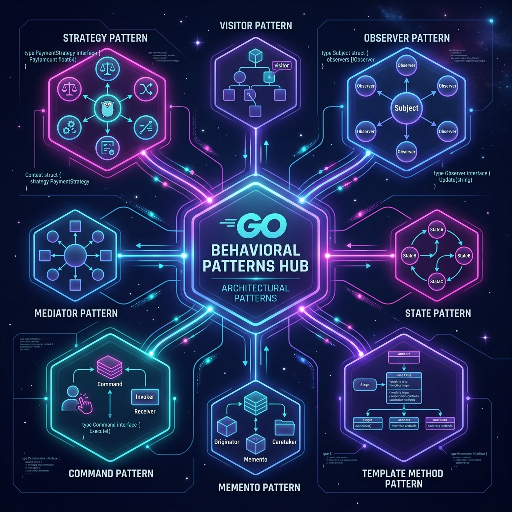
    <div class="concept-img-caption">Hình 3.1: Kiến trúc bản đồ 10 mẫu thiết kế hành vi trong Go — Phân tách trách nhiệm, đóng gói hành vi và tối ưu giao tiếp giữa các thành phần</div>
  </div>

  <div class="diagram">
    <div class="diagram-title">10 Behavioral Patterns — Map & Relationships</div>
    <svg width="100%" viewBox="0 0 820 380" xmlns="http://www.w3.org/2000/svg" font-family="JetBrains Mono">
      <!-- Center: Communication -->
      <ellipse cx="410" cy="190" rx="70" ry="38" fill="rgba(168,85,247,0.15)" stroke="rgba(168,85,247,0.5)" stroke-width="1.5"/>
      <text x="410" y="186" text-anchor="middle" font-size="12" font-weight="700" fill="#a855f7">Behavioral</text>
      <text x="410" y="202" text-anchor="middle" font-size="11" fill="#94a3b8">Patterns</text>

      <!-- Strategy -->
      <g class="svg-node" data-target="strategy" onclick="show('strategy')">
        <rect x="30" y="20" width="130" height="44" rx="8" fill="rgba(0,212,255,0.1)" stroke="rgba(0,212,255,0.35)" stroke-width="1.3"/>
        <text x="95" y="38" text-anchor="middle" font-size="12" font-weight="600" fill="#00d4ff">🎯 Strategy</text>
        <text x="95" y="53" text-anchor="middle" font-size="10" fill="#64748b">Đổi thuật toán runtime</text>
      </g>
      <line x1="160" y1="42" x2="342" y2="178" stroke="#334155" stroke-width="1" stroke-dasharray="4,3"/>

      <!-- Observer -->
      <g class="svg-node" data-target="observer" onclick="show('observer')">
        <rect x="660" y="20" width="140" height="44" rx="8" fill="rgba(0,212,255,0.1)" stroke="rgba(0,212,255,0.35)" stroke-width="1.3"/>
        <text x="730" y="38" text-anchor="middle" font-size="12" font-weight="600" fill="#00d4ff">📡 Observer</text>
        <text x="730" y="53" text-anchor="middle" font-size="10" fill="#64748b">Pub/Sub event</text>
      </g>
      <line x1="660" y1="42" x2="478" y2="178" stroke="#334155" stroke-width="1" stroke-dasharray="4,3"/>

      <!-- Command -->
      <g class="svg-node" data-target="command" onclick="show('command')">
        <rect x="30" y="100" width="130" height="44" rx="8" fill="rgba(245,158,11,0.1)" stroke="rgba(245,158,11,0.35)" stroke-width="1.3"/>
        <text x="95" y="118" text-anchor="middle" font-size="12" font-weight="600" fill="#f59e0b">📋 Command</text>
        <text x="95" y="133" text-anchor="middle" font-size="10" fill="#64748b">Đóng gói yêu cầu</text>
      </g>
      <line x1="160" y1="122" x2="342" y2="185" stroke="#334155" stroke-width="1" stroke-dasharray="4,3"/>

      <!-- Template -->
      <g class="svg-node" data-target="template" onclick="show('template')">
        <rect x="660" y="100" width="140" height="44" rx="8" fill="rgba(0,255,136,0.1)" stroke="rgba(0,255,136,0.3)" stroke-width="1.3"/>
        <text x="730" y="118" text-anchor="middle" font-size="12" font-weight="600" fill="#00ff88">🧩 Template</text>
        <text x="730" y="133" text-anchor="middle" font-size="10" fill="#64748b">Khung thuật toán</text>
      </g>
      <line x1="660" y1="122" x2="478" y2="185" stroke="#334155" stroke-width="1" stroke-dasharray="4,3"/>

      <!-- State -->
      <g class="svg-node" data-target="state" onclick="show('state')">
        <rect x="30" y="180" width="130" height="44" rx="8" fill="rgba(255,107,107,0.1)" stroke="rgba(255,107,107,0.3)" stroke-width="1.3"/>
        <text x="95" y="198" text-anchor="middle" font-size="12" font-weight="600" fill="#ff6b6b">🔄 State</text>
        <text x="95" y="213" text-anchor="middle" font-size="10" fill="#64748b">Hành vi theo trạng thái</text>
      </g>
      <line x1="160" y1="202" x2="342" y2="195" stroke="#334155" stroke-width="1" stroke-dasharray="4,3"/>

      <!-- Iterator -->
      <g class="svg-node" data-target="iterator" onclick="show('iterator')">
        <rect x="660" y="180" width="140" height="44" rx="8" fill="rgba(59,130,246,0.1)" stroke="rgba(59,130,246,0.3)" stroke-width="1.3"/>
        <text x="730" y="198" text-anchor="middle" font-size="12" font-weight="600" fill="#3b82f6">🔁 Iterator</text>
        <text x="730" y="213" text-anchor="middle" font-size="10" fill="#64748b">Duyệt collection</text>
      </g>
      <line x1="660" y1="202" x2="478" y2="195" stroke="#334155" stroke-width="1" stroke-dasharray="4,3"/>

      <!-- Chain -->
      <g class="svg-node" data-target="chain" onclick="show('chain')">
        <rect x="30" y="260" width="130" height="44" rx="8" fill="rgba(236,72,153,0.1)" stroke="rgba(236,72,153,0.3)" stroke-width="1.3"/>
        <text x="95" y="278" text-anchor="middle" font-size="12" font-weight="600" fill="#ec4899">⛓️ Chain</text>
        <text x="95" y="293" text-anchor="middle" font-size="10" fill="#64748b">Chuỗi xử lý</text>
      </g>
      <line x1="160" y1="282" x2="342" y2="205" stroke="#334155" stroke-width="1" stroke-dasharray="4,3"/>

      <!-- Mediator -->
      <g class="svg-node" data-target="mediator" onclick="show('mediator')">
        <rect x="660" y="260" width="140" height="44" rx="8" fill="rgba(45,212,191,0.1)" stroke="rgba(45,212,191,0.3)" stroke-width="1.3"/>
        <text x="730" y="278" text-anchor="middle" font-size="12" font-weight="600" fill="#2dd4bf">🤝 Mediator</text>
        <text x="730" y="293" text-anchor="middle" font-size="10" fill="#64748b">Trung gian giao tiếp</text>
      </g>
      <line x1="660" y1="282" x2="478" y2="205" stroke="#334155" stroke-width="1" stroke-dasharray="4,3"/>

      <!-- Memento -->
      <g class="svg-node" data-target="memento" onclick="show('memento')">
        <rect x="200" y="330" width="130" height="44" rx="8" fill="rgba(251,191,36,0.1)" stroke="rgba(251,191,36,0.3)" stroke-width="1.3"/>
        <text x="265" y="348" text-anchor="middle" font-size="12" font-weight="600" fill="#fbbf24">💾 Memento</text>
        <text x="265" y="363" text-anchor="middle" font-size="10" fill="#64748b">Lưu/phục hồi state</text>
      </g>
      <line x1="330" y1="330" x2="390" y2="228" stroke="#334155" stroke-width="1" stroke-dasharray="4,3"/>

      <!-- Visitor -->
      <g class="svg-node" data-target="visitor" onclick="show('visitor')">
        <rect x="490" y="330" width="130" height="44" rx="8" fill="rgba(167,139,250,0.1)" stroke="rgba(167,139,250,0.3)" stroke-width="1.3"/>
        <text x="555" y="348" text-anchor="middle" font-size="12" font-weight="600" fill="#a78bfa">🚶 Visitor</text>
        <text x="555" y="363" text-anchor="middle" font-size="10" fill="#64748b">Thao tác trên element</text>
      </g>
      <line x1="490" y1="330" x2="430" y2="228" stroke="#334155" stroke-width="1" stroke-dasharray="4,3"/>
    </svg>
  </div>

  <h3>Pattern Quick Selector</h3>
  <table class="tbl">
    <thead><tr><th>Pattern</th><th>Bài toán giải quyết</th><th>Go idiom</th><th>Khi nào dùng</th></tr></thead>
    <tbody>
      <tr><td><span class="tag t-s" data-target="strategy" onclick="show('strategy')">Strategy</span></td><td>Đổi thuật toán tại runtime</td><td>Interface injection</td><td>Nhiều cách làm cùng 1 việc</td></tr>
      <tr><td><span class="tag t-o" data-target="observer" onclick="show('observer')">Observer</span></td><td>Notify nhiều subscriber khi state thay đổi</td><td>Func slice / channel</td><td>Event-driven, pub/sub</td></tr>
      <tr><td><span class="tag t-c" data-target="command" onclick="show('command')">Command</span></td><td>Đóng gói action thành object</td><td>Func type / struct</td><td>Undo/redo, queue, macro</td></tr>
      <tr><td><span class="tag t-t" data-target="template" onclick="show('template')">Template</span></td><td>Khung thuật toán, bước có thể override</td><td>Embedding + interface</td><td>Pipeline với bước cố định</td></tr>
      <tr><td><span class="tag t-st" data-target="state" onclick="show('state')">State</span></td><td>Hành vi thay đổi theo state nội tại</td><td>State interface</td><td>FSM, workflow</td></tr>
      <tr><td><span class="tag t-it" data-target="iterator" onclick="show('iterator')">Iterator</span></td><td>Duyệt collection không expose internal</td><td>Channel / closure</td><td>Custom collection traversal</td></tr>
      <tr><td><span class="tag t-ch" data-target="chain" onclick="show('chain')">Chain</span></td><td>Pass request qua chuỗi handler</td><td>Handler func chain</td><td>Middleware, validation pipeline</td></tr>
      <tr><td><span class="tag t-me" data-target="mediator" onclick="show('mediator')">Mediator</span></td><td>Giảm coupling giữa nhiều object</td><td>Central broker struct</td><td>Chat room, event broker</td></tr>
      <tr><td><span class="tag t-c" data-target="memento" onclick="show('memento')">Memento</span></td><td>Lưu/phục hồi state object</td><td>Snapshot struct</td><td>Undo/redo, checkpoint</td></tr>
      <tr><td><span class="tag t-s" data-target="visitor" onclick="show('visitor')">Visitor</span></td><td>Thêm operation mà không sửa class</td><td>Accept/Visit interface</td><td>AST processing, export</td></tr>
    </tbody>
  </table>

  <div class="note n-info">
    <div class="ni2">💡</div>
    <p><strong>Go vs OOP languages:</strong> Go không có class/inheritance nên implement patterns bằng <code>interface</code> + <code>struct embedding</code> + <code>function type</code>. Kết quả thường <em>ít boilerplate hơn</em> và dễ test hơn Java/C++ equivalents.</p>
  </div>
</section>

<!-- ═══════════════════════════ STRATEGY ═══════════════════════════ -->
<section class="page-section" id="s-strategy">
  <div class="sec-header">
    <div class="sec-num">01</div>
    <div><div class="sec-title">Strategy Pattern</div>
    <div class="sec-sub">Định nghĩa họ thuật toán, đóng gói từng cái, hoán đổi được tại runtime</div></div>
    <span class="badge b-basic">BEHAVIORAL</span>
  </div>

  <div class="concept">
    <div class="lbl">💡 Định nghĩa — GoF</div>
    <div class="ttl">Strategy — Tách biệt thuật toán khỏi context sử dụng</div>
    <p class="prose"><strong>Strategy</strong> cho phép bạn định nghĩa một <em>họ các thuật toán</em>, đặt mỗi cái vào một class riêng và làm chúng <strong>hoán đổi được</strong>. Context chỉ biết interface của Strategy, không biết concrete implementation. Trong Go, đây là pattern <em>tự nhiên nhất</em> vì interface + dependency injection là idiom cốt lõi.</p>
    <p class="prose"><strong>Vấn đề giải quyết:</strong> Khi có nhiều biến thể thuật toán, tránh dùng <code>switch/if-else</code> dài → Strategy tách từng thuật toán ra, dễ thêm/xóa mà không ảnh hưởng client.</p>
  </div>

  <div class="concept-img-wrapper">
    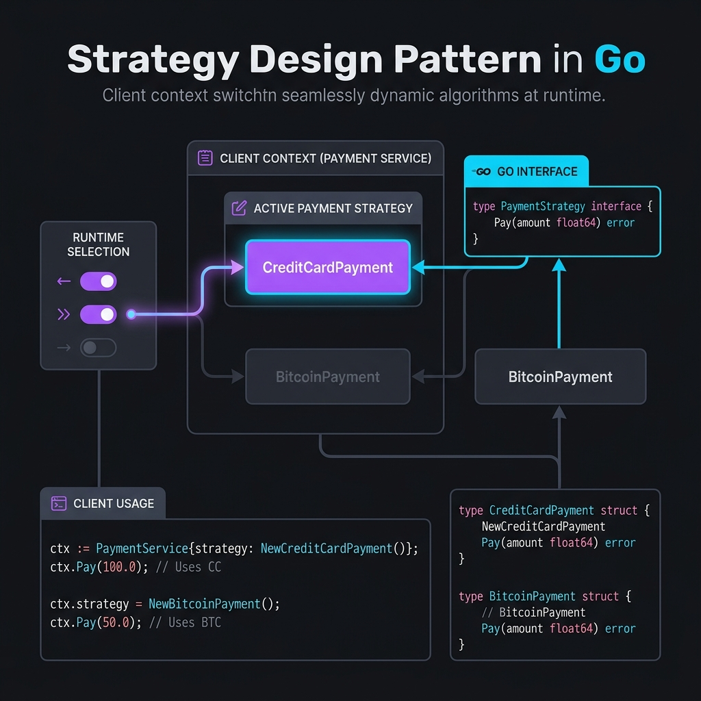
    <div class="concept-img-caption">Hình 1.1: Kiến trúc mô phỏng Strategy Pattern trong Go — Context giao tiếp gián tiếp qua Interface để linh hoạt thay thế các Strategy tại runtime</div>
  </div>

  <div class="diagram">
    <div class="diagram-title">Strategy Pattern — UML & Flow</div>
    <svg width="100%" viewBox="0 0 820 260" xmlns="http://www.w3.org/2000/svg" font-family="JetBrains Mono">
      <!-- Context -->
      <rect x="30" y="80" width="160" height="100" rx="8" fill="rgba(0,212,255,0.08)" stroke="rgba(0,212,255,0.4)" stroke-width="1.5"/>
      <rect x="30" y="80" width="160" height="28" rx="8" fill="rgba(0,212,255,0.15)" stroke="none"/>
      <text x="110" y="99" text-anchor="middle" font-size="12" font-weight="700" fill="#00d4ff">Context</text>
      <line x1="30" y1="108" x2="190" y2="108" stroke="rgba(0,212,255,0.3)" stroke-width="1"/>
      <text x="40" y="124" font-size="11" fill="#94a3b8">- strategy Strategy</text>
      <line x1="30" y1="133" x2="190" y2="133" stroke="rgba(0,212,255,0.2)" stroke-width="1" stroke-dasharray="3,2"/>
      <text x="40" y="150" font-size="11" fill="#60a5fa">+ SetStrategy(s)</text>
      <text x="40" y="166" font-size="11" fill="#60a5fa">+ Execute()</text>

      <!-- Strategy Interface -->
      <rect x="320" y="20" width="190" height="70" rx="8" fill="rgba(168,85,247,0.08)" stroke="rgba(168,85,247,0.4)" stroke-width="1.5"/>
      <rect x="320" y="20" width="190" height="28" rx="8" fill="rgba(168,85,247,0.15)" stroke="none"/>
      <text x="415" y="39" text-anchor="middle" font-size="10" fill="#a855f7">«interface»</text>
      <text x="415" y="52" text-anchor="middle" font-size="12" font-weight="700" fill="#a855f7">Strategy</text>
      <line x1="320" y1="48" x2="510" y2="48" stroke="rgba(168,85,247,0.3)" stroke-width="1"/>
      <text x="330" y="70" font-size="11" fill="#60a5fa">+ Execute(data) Result</text>

      <!-- Arrow Context→Strategy (uses) -->
      <line x1="190" y1="120" x2="320" y2="55" stroke="#475569" stroke-width="1.5" stroke-dasharray="5,3"/>
      <text x="248" y="80" font-size="10" fill="#64748b">«uses»</text>

      <!-- Concrete A -->
      <rect x="270" y="160" width="155" height="80" rx="8" fill="rgba(0,255,136,0.07)" stroke="rgba(0,255,136,0.35)" stroke-width="1.3"/>
      <rect x="270" y="160" width="155" height="26" rx="8" fill="rgba(0,255,136,0.12)" stroke="none"/>
      <text x="347" y="177" text-anchor="middle" font-size="11" font-weight="700" fill="#00ff88">ConcreteStrategyA</text>
      <line x1="270" y1="186" x2="425" y2="186" stroke="rgba(0,255,136,0.2)" stroke-width="1"/>
      <text x="280" y="204" font-size="11" fill="#60a5fa">+ Execute(data)</text>
      <text x="280" y="220" font-size="10" fill="#64748b">// algorithm A</text>

      <!-- Concrete B -->
      <rect x="450" y="160" width="155" height="80" rx="8" fill="rgba(245,158,11,0.07)" stroke="rgba(245,158,11,0.35)" stroke-width="1.3"/>
      <rect x="450" y="160" width="155" height="26" rx="8" fill="rgba(245,158,11,0.12)" stroke="none"/>
      <text x="527" y="177" text-anchor="middle" font-size="11" font-weight="700" fill="#f59e0b">ConcreteStrategyB</text>
      <line x1="450" y1="186" x2="605" y2="186" stroke="rgba(245,158,11,0.2)" stroke-width="1"/>
      <text x="460" y="204" font-size="11" fill="#60a5fa">+ Execute(data)</text>
      <text x="460" y="220" font-size="10" fill="#64748b">// algorithm B</text>

      <!-- Concrete C -->
      <rect x="630" y="160" width="155" height="80" rx="8" fill="rgba(255,107,107,0.07)" stroke="rgba(255,107,107,0.35)" stroke-width="1.3"/>
      <rect x="630" y="160" width="155" height="26" rx="8" fill="rgba(255,107,107,0.12)" stroke="none"/>
      <text x="707" y="177" text-anchor="middle" font-size="11" font-weight="700" fill="#ff6b6b">ConcreteStrategyC</text>
      <line x1="630" y1="186" x2="785" y2="186" stroke="rgba(255,107,107,0.2)" stroke-width="1"/>
      <text x="640" y="204" font-size="11" fill="#60a5fa">+ Execute(data)</text>
      <text x="640" y="220" font-size="10" fill="#64748b">// algorithm C</text>

      <!-- Implements arrows -->
      <line x1="347" y1="160" x2="390" y2="90" stroke="#475569" stroke-width="1" stroke-dasharray="3,2"/>
      <line x1="527" y1="160" x2="430" y2="90" stroke="#475569" stroke-width="1" stroke-dasharray="3,2"/>
      <line x1="680" y1="160" x2="500" y2="90" stroke="#475569" stroke-width="1" stroke-dasharray="3,2"/>
      <text x="390" y="135" font-size="9" fill="#4b5563">implements</text>
    </svg>
  </div>

  <h3>📝 Example 1 — Payment Strategy (Basic)</h3>
  <div class="cb">
    <div class="ch"><span class="cl">GO</span><span class="cf">payment_strategy.go</span><span class="cbadge cb-basic">BASIC</span></div>
    <pre><span class="cm">// Strategy Pattern: hệ thống thanh toán đa phương thức
// Context: Order không biết cụ thể thanh toán thế nào
// Strategy: PaymentMethod interface</span>

<span class="kw">type</span> <span class="tp">PaymentMethod</span> <span class="kw">interface</span> {
    <span class="fn">Pay</span>(amount <span class="tp">float64</span>) <span class="tp">error</span>
    <span class="fn">Name</span>() <span class="tp">string</span>
}

<span class="cm">// Concrete strategies</span>
<span class="kw">type</span> <span class="tp">CreditCard</span> <span class="kw">struct</span>{ Number, CVV, Expiry <span class="tp">string</span> }

<span class="kw">func</span> (c *<span class="tp">CreditCard</span>) <span class="fn">Pay</span>(amount <span class="tp">float64</span>) <span class="tp">error</span> {
    <span class="pkg">fmt</span>.<span class="fn">Printf</span>(<span class="str">"💳 Credit card [****%s] charged $%.2f\n"</span>, c.Number[<span class="fn">len</span>(c.Number)-<span class="num">4</span>:], amount)
    <span class="kw">return</span> <span class="kw">nil</span>
}
<span class="kw">func</span> (c *<span class="tp">CreditCard</span>) <span class="fn">Name</span>() <span class="tp">string</span> { <span class="kw">return</span> <span class="str">"Credit Card"</span> }

<span class="kw">type</span> <span class="tp">PayPal</span> <span class="kw">struct</span>{ Email <span class="tp">string</span> }

<span class="kw">func</span> (p *<span class="tp">PayPal</span>) <span class="fn">Pay</span>(amount <span class="tp">float64</span>) <span class="tp">error</span> {
    <span class="pkg">fmt</span>.<span class="fn">Printf</span>(<span class="str">"🅿️  PayPal [%s] charged $%.2f\n"</span>, p.Email, amount)
    <span class="kw">return</span> <span class="kw">nil</span>
}
<span class="kw">func</span> (p *<span class="tp">PayPal</span>) <span class="fn">Name</span>() <span class="tp">string</span> { <span class="kw">return</span> <span class="str">"PayPal"</span> }

<span class="kw">type</span> <span class="tp">Crypto</span> <span class="kw">struct</span>{ WalletAddr, Coin <span class="tp">string</span> }

<span class="kw">func</span> (c *<span class="tp">Crypto</span>) <span class="fn">Pay</span>(amount <span class="tp">float64</span>) <span class="tp">error</span> {
    <span class="pkg">fmt</span>.<span class="fn">Printf</span>(<span class="str">"₿  %s wallet [%s...] paid $%.2f\n"</span>, c.Coin, c.WalletAddr[:<span class="num">8</span>], amount)
    <span class="kw">return</span> <span class="kw">nil</span>
}
<span class="kw">func</span> (c *<span class="tp">Crypto</span>) <span class="fn">Name</span>() <span class="tp">string</span> { <span class="kw">return</span> c.Coin }

<span class="cm">// Context — không biết payment cụ thể</span>
<span class="kw">type</span> <span class="tp">Order</span> <span class="kw">struct</span> {
    ID      <span class="tp">string</span>
    Amount  <span class="tp">float64</span>
    payment <span class="tp">PaymentMethod</span> <span class="cm">// injected strategy</span>
}

<span class="kw">func</span> (o *<span class="tp">Order</span>) <span class="fn">SetPayment</span>(p <span class="tp">PaymentMethod</span>) { o.payment = p }

<span class="kw">func</span> (o *<span class="tp">Order</span>) <span class="fn">Checkout</span>() <span class="tp">error</span> {
    <span class="kw">if</span> o.payment == <span class="kw">nil</span> { <span class="kw">return</span> <span class="pkg">errors</span>.<span class="fn">New</span>(<span class="str">"no payment method set"</span>) }
    <span class="pkg">fmt</span>.<span class="fn">Printf</span>(<span class="str">"Order %s checkout via %s\n"</span>, o.ID, o.payment.<span class="fn">Name</span>())
    <span class="kw">return</span> o.payment.<span class="fn">Pay</span>(o.Amount)
}

<span class="cm">// Usage</span>
<span class="kw">func</span> <span class="fn">main</span>() {
    order := &<span class="tp">Order</span>{ID: <span class="str">"ORD-001"</span>, Amount: <span class="num">299.99</span>}
    order.<span class="fn">SetPayment</span>(&<span class="tp">CreditCard</span>{Number: <span class="str">"4111111111111234"</span>})
    order.<span class="fn">Checkout</span>() <span class="cm">// Credit card charged</span>

    order.<span class="fn">SetPayment</span>(&<span class="tp">PayPal</span>{Email: <span class="str">"user@example.com"</span>})
    order.<span class="fn">Checkout</span>() <span class="cm">// PayPal charged — đổi strategy, Order không đổi</span>
}</pre>
  </div>

  <h3>📝 Example 2 — Sort Strategy với Generics (Advanced)</h3>
  <div class="cb">
    <div class="ch"><span class="cl">GO</span><span class="cf">sort_strategy.go</span><span class="cbadge cb-adv">ADVANCED</span></div>
    <pre><span class="cm">// Strategy + Go 1.18 Generics: flexible sorter
// Đổi sorting algorithm tại runtime: QuickSort, MergeSort, HeapSort</span>

<span class="kw">type</span> <span class="tp">SortStrategy</span>[T <span class="kw">any</span>] <span class="kw">interface</span> {
    <span class="fn">Sort</span>(data []T, less <span class="kw">func</span>(a, b T) <span class="tp">bool</span>)
    <span class="fn">Name</span>() <span class="tp">string</span>
}

<span class="cm">// BubbleSort — dùng khi data nhỏ, nearly sorted</span>
<span class="kw">type</span> <span class="tp">BubbleSort</span>[T <span class="kw">any</span>] <span class="kw">struct</span>{}

<span class="kw">func</span> (b <span class="tp">BubbleSort</span>[T]) <span class="fn">Sort</span>(data []T, less <span class="kw">func</span>(T, T) <span class="tp">bool</span>) {
    n := <span class="fn">len</span>(data)
    <span class="kw">for</span> i := <span class="num">0</span>; i < n-<span class="num">1</span>; i++ {
        swapped := <span class="kw">false</span>
        <span class="kw">for</span> j := <span class="num">0</span>; j < n-i-<span class="num">1</span>; j++ {
            <span class="kw">if</span> less(data[j+<span class="num">1</span>], data[j]) {
                data[j], data[j+<span class="num">1</span>] = data[j+<span class="num">1</span>], data[j]
                swapped = <span class="kw">true</span>
            }
        }
        <span class="kw">if</span> !swapped { <span class="kw">break</span> } <span class="cm">// early exit nếu already sorted</span>
    }
}
<span class="kw">func</span> (b <span class="tp">BubbleSort</span>[T]) <span class="fn">Name</span>() <span class="tp">string</span> { <span class="kw">return</span> <span class="str">"BubbleSort"</span> }

<span class="cm">// QuickSort — general purpose</span>
<span class="kw">type</span> <span class="tp">QuickSort</span>[T <span class="kw">any</span>] <span class="kw">struct</span>{}

<span class="kw">func</span> (q <span class="tp">QuickSort</span>[T]) <span class="fn">Sort</span>(data []T, less <span class="kw">func</span>(T, T) <span class="tp">bool</span>) {
    <span class="kw">var</span> <span class="fn">qs</span> <span class="kw">func</span>(lo, hi <span class="tp">int</span>)
    <span class="fn">qs</span> = <span class="kw">func</span>(lo, hi <span class="tp">int</span>) {
        <span class="kw">if</span> lo >= hi { <span class="kw">return</span> }
        pivot := data[hi]; i := lo
        <span class="kw">for</span> j := lo; j < hi; j++ {
            <span class="kw">if</span> less(data[j], pivot) { data[i], data[j] = data[j], data[i]; i++ }
        }
        data[i], data[hi] = data[hi], data[i]
        <span class="fn">qs</span>(lo, i-<span class="num">1</span>); <span class="fn">qs</span>(i+<span class="num">1</span>, hi)
    }
    <span class="fn">qs</span>(<span class="num">0</span>, <span class="fn">len</span>(data)-<span class="num">1</span>)
}
<span class="kw">func</span> (q <span class="tp">QuickSort</span>[T]) <span class="fn">Name</span>() <span class="tp">string</span> { <span class="kw">return</span> <span class="str">"QuickSort"</span> }

<span class="cm">// Context: Sorter</span>
<span class="kw">type</span> <span class="tp">Sorter</span>[T <span class="kw">any</span>] <span class="kw">struct</span> {
    strategy <span class="tp">SortStrategy</span>[T]
}

<span class="kw">func</span> <span class="fn">NewSorter</span>[T <span class="kw">any</span>](s <span class="tp">SortStrategy</span>[T]) *<span class="tp">Sorter</span>[T] { <span class="kw">return</span> &<span class="tp">Sorter</span>[T]{strategy: s} }

<span class="kw">func</span> (s *<span class="tp">Sorter</span>[T]) <span class="fn">Sort</span>(data []T, less <span class="kw">func</span>(T, T) <span class="tp">bool</span>) {
    <span class="pkg">log</span>.<span class="fn">Printf</span>(<span class="str">"Sorting %d items with %s"</span>, <span class="fn">len</span>(data), s.strategy.<span class="fn">Name</span>())
    s.strategy.<span class="fn">Sort</span>(data, less)
}

<span class="cm">// Auto-select strategy based on data size (Strategy Factory)</span>
<span class="kw">func</span> <span class="fn">AutoSorter</span>[T <span class="kw">any</span>](size <span class="tp">int</span>) *<span class="tp">Sorter</span>[T] {
    <span class="kw">if</span> size < <span class="num">20</span> { <span class="kw">return</span> <span class="fn">NewSorter</span>[T](<span class="tp">BubbleSort</span>[T]{}) }
    <span class="kw">return</span> <span class="fn">NewSorter</span>[T](<span class="tp">QuickSort</span>[T]{})
}</pre>
  </div>

  <h3>📝 Example 3 — Compression Strategy (Production, Expert)</h3>
  <div class="cb">
    <div class="ch"><span class="cl">GO</span><span class="cf">compression_strategy.go</span><span class="cbadge cb-exp">EXPERT</span></div>
    <pre><span class="cm">// Production-grade: Compression strategy với metrics, context, streaming
// Tích hợp với io.Writer — pluggable vào bất kỳ pipeline nào</span>

<span class="kw">import</span> (
    <span class="str">"compress/gzip"</span>; <span class="str">"compress/zlib"</span>
    <span class="str">"context"</span>; <span class="str">"io"</span>; <span class="str">"time"</span>
)

<span class="kw">type</span> <span class="tp">CompressResult</span> <span class="kw">struct</span> {
    BytesIn, BytesOut <span class="tp">int64</span>
    Duration          <span class="tp">time.Duration</span>
    Ratio             <span class="tp">float64</span>
}

<span class="kw">type</span> <span class="tp">CompressionStrategy</span> <span class="kw">interface</span> {
    <span class="fn">Compress</span>(ctx <span class="tp">context.Context</span>, src <span class="tp">io.Reader</span>, dst <span class="tp">io.Writer</span>) (<span class="tp">CompressResult</span>, <span class="tp">error</span>)
    <span class="fn">Decompress</span>(ctx <span class="tp">context.Context</span>, src <span class="tp">io.Reader</span>, dst <span class="tp">io.Writer</span>) <span class="tp">error</span>
    <span class="fn">MimeType</span>() <span class="tp">string</span>
    <span class="fn">Level</span>() <span class="tp">int</span>
}

<span class="cm">// GzipStrategy</span>
<span class="kw">type</span> <span class="tp">GzipStrategy</span> <span class="kw">struct</span>{ level <span class="tp">int</span> }

<span class="kw">func</span> <span class="fn">NewGzip</span>(level <span class="tp">int</span>) *<span class="tp">GzipStrategy</span> { <span class="kw">return</span> &<span class="tp">GzipStrategy</span>{level: level} }

<span class="kw">func</span> (g *<span class="tp">GzipStrategy</span>) <span class="fn">Compress</span>(ctx <span class="tp">context.Context</span>, src <span class="tp">io.Reader</span>, dst <span class="tp">io.Writer</span>) (<span class="tp">CompressResult</span>, <span class="tp">error</span>) {
    start := <span class="pkg">time</span>.<span class="fn">Now</span>()
    w, err := <span class="pkg">gzip</span>.<span class="fn">NewWriterLevel</span>(dst, g.level)
    <span class="kw">if</span> err != <span class="kw">nil</span> { <span class="kw">return</span> <span class="tp">CompressResult</span>{}, err }
    <span class="kw">defer</span> w.<span class="fn">Close</span>()

    <span class="cm">// context-aware copy — cancel gracefully</span>
    done := <span class="kw">make</span>(<span class="kw">chan</span> <span class="tp">error</span>, <span class="num">1</span>)
    <span class="kw">var</span> n <span class="tp">int64</span>
    <span class="kw">go</span> <span class="kw">func</span>() {
        n, err = <span class="pkg">io</span>.<span class="fn">Copy</span>(w, src)
        done <- err
    }()
    <span class="kw">select</span> {
    case <-ctx.<span class="fn">Done</span>(): <span class="kw">return</span> <span class="tp">CompressResult</span>{}, ctx.<span class="fn">Err</span>()
    case err = <-done:
    }
    <span class="kw">if</span> err != <span class="kw">nil</span> { <span class="kw">return</span> <span class="tp">CompressResult</span>{}, err }
    elapsed := <span class="pkg">time</span>.<span class="fn">Since</span>(start)
    <span class="kw">return</span> <span class="tp">CompressResult</span>{BytesIn: n, Duration: elapsed}, <span class="kw">nil</span>
}

<span class="kw">func</span> (g *<span class="tp">GzipStrategy</span>) <span class="fn">Decompress</span>(_ <span class="tp">context.Context</span>, src <span class="tp">io.Reader</span>, dst <span class="tp">io.Writer</span>) <span class="tp">error</span> {
    r, err := <span class="pkg">gzip</span>.<span class="fn">NewReader</span>(src)
    <span class="kw">if</span> err != <span class="kw">nil</span> { <span class="kw">return</span> err }
    <span class="kw">defer</span> r.<span class="fn">Close</span>()
    _, err = <span class="pkg">io</span>.<span class="fn">Copy</span>(dst, r)
    <span class="kw">return</span> err
}
<span class="kw">func</span> (g *<span class="tp">GzipStrategy</span>) <span class="fn">MimeType</span>() <span class="tp">string</span> { <span class="kw">return</span> <span class="str">"application/gzip"</span> }
<span class="kw">func</span> (g *<span class="tp">GzipStrategy</span>) <span class="fn">Level</span>() <span class="tp">int</span>    { <span class="kw">return</span> g.level }

<span class="cm">// Context: FileCompressor — đổi strategy tại runtime</span>
<span class="kw">type</span> <span class="tp">FileCompressor</span> <span class="kw">struct</span> {
    strategy <span class="tp">CompressionStrategy</span>
    mu       <span class="pkg">sync</span>.<span class="tp">RWMutex</span>
}

<span class="kw">func</span> (fc *<span class="tp">FileCompressor</span>) <span class="fn">SetStrategy</span>(s <span class="tp">CompressionStrategy</span>) {
    fc.mu.<span class="fn">Lock</span>(); <span class="kw">defer</span> fc.mu.<span class="fn">Unlock</span>()
    fc.strategy = s
}

<span class="kw">func</span> (fc *<span class="tp">FileCompressor</span>) <span class="fn">CompressFile</span>(ctx <span class="tp">context.Context</span>, src, dst <span class="tp">string</span>) (<span class="tp">CompressResult</span>, <span class="tp">error</span>) {
    fc.mu.<span class="fn">RLock</span>(); s := fc.strategy; fc.mu.<span class="fn">RUnlock</span>()
    in, _ := <span class="pkg">os</span>.<span class="fn">Open</span>(src)
    <span class="kw">defer</span> in.<span class="fn">Close</span>()
    out, _ := <span class="pkg">os</span>.<span class="fn">Create</span>(dst)
    <span class="kw">defer</span> out.<span class="fn">Close</span>()
    <span class="kw">return</span> s.<span class="fn">Compress</span>(ctx, in, out)
}</pre>
  </div>

  <div class="note n-ok">
    <div class="ni2">✅</div>
    <p><strong>Go Tip:</strong> Thay vì struct với method, đôi khi <strong>function type</strong> là Strategy đơn giản hơn: <code>type SortFunc func([]int)</code>. Dùng khi strategy chỉ cần 1 method và không mang state.</p>
  </div>
</section>

<!-- ═══════════════════════════ OBSERVER ═══════════════════════════ -->
<section class="page-section" id="s-observer">
  <div class="sec-header">
    <div class="sec-num">02</div>
    <div><div class="sec-title">Observer Pattern</div>
    <div class="sec-sub">Pub/Sub — Notify nhiều subscriber khi state của subject thay đổi</div></div>
    <span class="badge b-basic">BEHAVIORAL</span>
  </div>

  <div class="concept">
    <div class="lbl">💡 Định nghĩa — GoF</div>
    <div class="ttl">Observer — Định nghĩa quan hệ 1-nhiều giữa các đối tượng</div>
    <p class="prose"><strong>Observer</strong> định nghĩa quan hệ phụ thuộc <strong>one-to-many</strong> giữa đối tượng: khi <em>Subject</em> thay đổi state, tất cả <em>Observers</em> được notify và tự cập nhật. Đây là nền tảng của <strong>Event-Driven Architecture</strong>, reactive programming, và Pub/Sub systems. Trong Go, observer có thể dùng channel thay vì callback để tận dụng goroutine.</p>
  </div>

  <div class="concept-img-wrapper">
    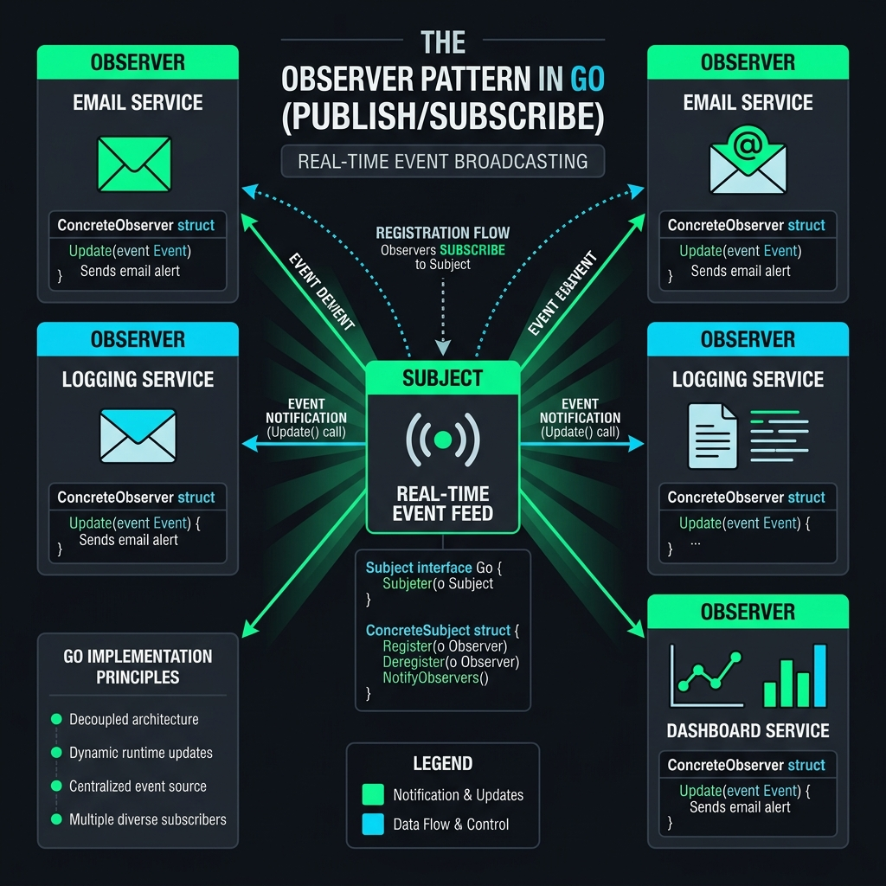
    <div class="concept-img-caption">Hình 2.1: Kiến trúc mô phỏng Observer Pattern trong Go — Subject quản lý danh sách đăng ký và tự động thông báo tới toàn bộ Observers khi có thay đổi trạng thái</div>
  </div>

  <div class="diagram">
    <div class="diagram-title">Observer Pattern — Subject ↔ Observer Communication</div>
    <svg width="100%" viewBox="0 0 820 280" xmlns="http://www.w3.org/2000/svg" font-family="JetBrains Mono">
      <defs><marker id="oa" viewBox="0 0 10 10" refX="8" refY="5" markerWidth="5" markerHeight="5" orient="auto"><path d="M2 2L8 5L2 8" fill="none" stroke="#475569" stroke-width="1.5" stroke-linecap="round"/></marker></defs>

      <!-- Subject -->
      <rect x="60" y="80" width="180" height="120" rx="8" fill="rgba(0,212,255,0.08)" stroke="rgba(0,212,255,0.4)" stroke-width="1.5"/>
      <rect x="60" y="80" width="180" height="28" rx="8" fill="rgba(0,212,255,0.15)" stroke="none"/>
      <text x="150" y="99" text-anchor="middle" font-size="12" font-weight="700" fill="#00d4ff">Subject</text>
      <line x1="60" y1="108" x2="240" y2="108" stroke="rgba(0,212,255,0.25)" stroke-width="1"/>
      <text x="70" y="125" font-size="11" fill="#94a3b8">- observers []Observer</text>
      <line x1="60" y1="132" x2="240" y2="132" stroke="rgba(0,212,255,0.15)" stroke-width="1" stroke-dasharray="3,2"/>
      <text x="70" y="149" font-size="11" fill="#60a5fa">+ Subscribe(o)</text>
      <text x="70" y="165" font-size="11" fill="#60a5fa">+ Unsubscribe(o)</text>
      <text x="70" y="181" font-size="11" fill="#60a5fa">+ Notify(event)</text>

      <!-- Notify arrows -->
      <line x1="240" y1="130" x2="365" y2="80" stroke="#f59e0b" stroke-width="1.5" marker-end="url(#oa)"/>
      <line x1="240" y1="150" x2="365" y2="150" stroke="#f59e0b" stroke-width="1.5" marker-end="url(#oa)"/>
      <line x1="240" y1="170" x2="365" y2="220" stroke="#f59e0b" stroke-width="1.5" marker-end="url(#oa)"/>
      <text x="280" y="142" font-size="10" fill="#f59e0b">Notify()</text>

      <!-- Observer interface -->
      <rect x="365" y="20" width="170" height="58" rx="8" fill="rgba(168,85,247,0.08)" stroke="rgba(168,85,247,0.4)" stroke-width="1.5"/>
      <rect x="365" y="20" width="170" height="26" rx="8" fill="rgba(168,85,247,0.12)" stroke="none"/>
      <text x="450" y="33" text-anchor="middle" font-size="10" fill="#a855f7">«interface»</text>
      <text x="450" y="47" text-anchor="middle" font-size="12" font-weight="700" fill="#a855f7">Observer</text>
      <line x1="365" y1="46" x2="535" y2="46" stroke="rgba(168,85,247,0.2)" stroke-width="1"/>
      <text x="375" y="65" font-size="11" fill="#60a5fa">+ OnEvent(e Event)</text>

      <!-- ConcreteObserver A -->
      <rect x="365" y="110" width="170" height="60" rx="8" fill="rgba(0,255,136,0.07)" stroke="rgba(0,255,136,0.3)" stroke-width="1.3"/>
      <text x="450" y="127" text-anchor="middle" font-size="11" font-weight="700" fill="#00ff88">EmailNotifier</text>
      <line x1="365" y1="132" x2="535" y2="132" stroke="rgba(0,255,136,0.2)" stroke-width="1"/>
      <text x="375" y="150" font-size="11" fill="#60a5fa">+ OnEvent(e Event)</text>
      <text x="375" y="164" font-size="10" fill="#64748b">// send email</text>

      <!-- ConcreteObserver B -->
      <rect x="365" y="195" width="170" height="60" rx="8" fill="rgba(245,158,11,0.07)" stroke="rgba(245,158,11,0.3)" stroke-width="1.3"/>
      <text x="450" y="212" text-anchor="middle" font-size="11" font-weight="700" fill="#f59e0b">SlackNotifier</text>
      <line x1="365" y1="217" x2="535" y2="217" stroke="rgba(245,158,11,0.2)" stroke-width="1"/>
      <text x="375" y="235" font-size="11" fill="#60a5fa">+ OnEvent(e Event)</text>
      <text x="375" y="249" font-size="10" fill="#64748b">// send to slack</text>

      <!-- ConcreteObserver C -->
      <rect x="575" y="110" width="175" height="60" rx="8" fill="rgba(59,130,246,0.07)" stroke="rgba(59,130,246,0.3)" stroke-width="1.3"/>
      <text x="662" y="127" text-anchor="middle" font-size="11" font-weight="700" fill="#3b82f6">AuditLogger</text>
      <line x1="575" y1="132" x2="750" y2="132" stroke="rgba(59,130,246,0.2)" stroke-width="1"/>
      <text x="585" y="150" font-size="11" fill="#60a5fa">+ OnEvent(e Event)</text>
      <text x="585" y="164" font-size="10" fill="#64748b">// write to log</text>

      <!-- Implements arrows -->
      <line x1="450" y1="110" x2="450" y2="78" stroke="#475569" stroke-width="1" stroke-dasharray="3,2"/>
      <line x1="535" y1="140" x2="575" y2="140" stroke="#475569" stroke-width="1" stroke-dasharray="3,2"/>
    </svg>
  </div>

  <h3>📝 Example 1 — Event Bus (Advanced)</h3>
  <div class="cb">
    <div class="ch"><span class="cl">GO</span><span class="cf">event_bus.go</span><span class="cbadge cb-adv">ADVANCED</span></div>
    <pre><span class="cm">// Observer Pattern: Generic Event Bus
// Thread-safe, typed events, unsubscribe support</span>

<span class="kw">type</span> <span class="tp">EventType</span> <span class="tp">string</span>

<span class="kw">const</span> (
    <span class="tp">EventOrderCreated</span>  <span class="tp">EventType</span> = <span class="str">"order.created"</span>
    <span class="tp">EventOrderShipped</span>  <span class="tp">EventType</span> = <span class="str">"order.shipped"</span>
    <span class="tp">EventUserSignedUp</span>  <span class="tp">EventType</span> = <span class="str">"user.signed_up"</span>
)

<span class="kw">type</span> <span class="tp">Event</span> <span class="kw">struct</span> {
    Type    <span class="tp">EventType</span>
    Payload <span class="kw">any</span>
    At      <span class="tp">time.Time</span>
}

<span class="kw">type</span> <span class="tp">Handler</span> <span class="kw">func</span>(<span class="tp">Event</span>)

<span class="kw">type</span> <span class="tp">EventBus</span> <span class="kw">struct</span> {
    mu       <span class="pkg">sync</span>.<span class="tp">RWMutex</span>
    handlers <span class="kw">map</span>[<span class="tp">EventType</span>]<span class="kw">map</span>[<span class="tp">string</span>]<span class="tp">Handler</span> <span class="cm">// type → {id → handler}</span>
}

<span class="kw">func</span> <span class="fn">NewEventBus</span>() *<span class="tp">EventBus</span> {
    <span class="kw">return</span> &<span class="tp">EventBus</span>{handlers: <span class="kw">make</span>(<span class="kw">map</span>[<span class="tp">EventType</span>]<span class="kw">map</span>[<span class="tp">string</span>]<span class="tp">Handler</span>)}
}

<span class="cm">// Subscribe: đăng ký handler, trả về unsubscribe func</span>
<span class="kw">func</span> (b *<span class="tp">EventBus</span>) <span class="fn">Subscribe</span>(t <span class="tp">EventType</span>, h <span class="tp">Handler</span>) (<span class="kw">func</span>()) {
    b.mu.<span class="fn">Lock</span>(); <span class="kw">defer</span> b.mu.<span class="fn">Unlock</span>()
    id := <span class="pkg">fmt</span>.<span class="fn">Sprintf</span>(<span class="str">"%p"</span>, &h)
    <span class="kw">if</span> b.handlers[t] == <span class="kw">nil</span> {
        b.handlers[t] = <span class="kw">make</span>(<span class="kw">map</span>[<span class="tp">string</span>]<span class="tp">Handler</span>)
    }
    b.handlers[t][id] = h
    <span class="kw">return</span> <span class="kw">func</span>() { <span class="cm">// unsubscribe closure</span>
        b.mu.<span class="fn">Lock</span>(); <span class="kw">defer</span> b.mu.<span class="fn">Unlock</span>()
        <span class="kw">delete</span>(b.handlers[t], id)
    }
}

<span class="cm">// Publish: notify tất cả handlers (async bằng goroutine)</span>
<span class="kw">func</span> (b *<span class="tp">EventBus</span>) <span class="fn">Publish</span>(e <span class="tp">Event</span>) {
    e.At = <span class="pkg">time</span>.<span class="fn">Now</span>()
    b.mu.<span class="fn">RLock</span>()
    handlers := <span class="kw">make</span>([]<span class="tp">Handler</span>, <span class="num">0</span>)
    <span class="kw">for</span> _, h := <span class="kw">range</span> b.handlers[e.Type] { handlers = <span class="fn">append</span>(handlers, h) }
    <span class="kw">for</span> _, h := <span class="kw">range</span> b.handlers[<span class="str">"*"</span>] { handlers = <span class="fn">append</span>(handlers, h) } <span class="cm">// wildcard</span>
    b.mu.<span class="fn">RUnlock</span>()

    <span class="kw">for</span> _, h := <span class="kw">range</span> handlers {
        h := h <span class="cm">// capture loop variable</span>
        <span class="kw">go</span> <span class="kw">func</span>() {
            <span class="kw">defer</span> <span class="kw">func</span>() { <span class="kw">if</span> r := <span class="kw">recover</span>(); r != <span class="kw">nil</span> { <span class="pkg">log</span>.<span class="fn">Printf</span>(<span class="str">"handler panic: %v"</span>, r) } }()
            <span class="fn">h</span>(e)
        }()
    }
}

<span class="cm">// Usage</span>
<span class="kw">func</span> <span class="fn">main</span>() {
    bus := <span class="fn">NewEventBus</span>()

    unsub := bus.<span class="fn">Subscribe</span>(<span class="tp">EventOrderCreated</span>, <span class="kw">func</span>(e <span class="tp">Event</span>) {
        <span class="pkg">fmt</span>.<span class="fn">Printf</span>(<span class="str">"📧 Email: new order %v\n"</span>, e.Payload)
    })
    <span class="kw">defer</span> <span class="fn">unsub</span>() <span class="cm">// cleanup on exit</span>

    bus.<span class="fn">Subscribe</span>(<span class="tp">EventOrderCreated</span>, <span class="kw">func</span>(e <span class="tp">Event</span>) {
        <span class="pkg">fmt</span>.<span class="fn">Printf</span>(<span class="str">"📊 Analytics: order %v at %v\n"</span>, e.Payload, e.At)
    })

    bus.<span class="fn">Publish</span>(<span class="tp">Event</span>{Type: <span class="tp">EventOrderCreated</span>, Payload: <span class="kw">map</span>[<span class="tp">string</span>]<span class="kw">any</span>{<span class="str">"id"</span>: <span class="str">"ORD-001"</span>}})
}</pre>
  </div>

  <h3>📝 Example 2 — Stock Market Observer với Channel (Expert)</h3>
  <div class="cb">
    <div class="ch"><span class="cl">GO</span><span class="cf">stock_observer.go</span><span class="cbadge cb-exp">EXPERT</span></div>
    <pre><span class="cm">// Channel-based Observer: Go-idiomatic approach
// Subject gửi qua channel, observer chạy goroutine độc lập
// Non-blocking với buffer, graceful shutdown với context</span>

<span class="kw">type</span> <span class="tp">StockTick</span> <span class="kw">struct</span> {
    Symbol    <span class="tp">string</span>
    Price     <span class="tp">float64</span>
    Volume    <span class="tp">int64</span>
    Timestamp <span class="tp">time.Time</span>
}

<span class="kw">type</span> <span class="tp">StockObserver</span> <span class="kw">interface</span> {
    <span class="fn">OnTick</span>(tick <span class="tp">StockTick</span>)
    <span class="fn">ID</span>() <span class="tp">string</span>
}

<span class="kw">type</span> <span class="tp">StockMarket</span> <span class="kw">struct</span> {
    mu        <span class="pkg">sync</span>.<span class="tp">RWMutex</span>
    observers <span class="kw">map</span>[<span class="tp">string</span>]<span class="kw">chan</span> <span class="tp">StockTick</span>
    done      <span class="kw">chan</span> <span class="kw">struct</span>{}
}

<span class="kw">func</span> <span class="fn">NewStockMarket</span>() *<span class="tp">StockMarket</span> {
    <span class="kw">return</span> &<span class="tp">StockMarket</span>{
        observers: <span class="kw">make</span>(<span class="kw">map</span>[<span class="tp">string</span>]<span class="kw">chan</span> <span class="tp">StockTick</span>),
        done:      <span class="kw">make</span>(<span class="kw">chan</span> <span class="kw">struct</span>{}),
    }
}

<span class="kw">func</span> (sm *<span class="tp">StockMarket</span>) <span class="fn">Register</span>(obs <span class="tp">StockObserver</span>) {
    sm.mu.<span class="fn">Lock</span>(); <span class="kw">defer</span> sm.mu.<span class="fn">Unlock</span>()
    ch := <span class="kw">make</span>(<span class="kw">chan</span> <span class="tp">StockTick</span>, <span class="num">64</span>) <span class="cm">// buffered: không block publisher</span>
    sm.observers[obs.<span class="fn">ID</span>()] = ch
    <span class="kw">go</span> <span class="kw">func</span>() { <span class="cm">// goroutine per observer</span>
        <span class="kw">for</span> { <span class="kw">select</span> {
            <span class="kw">case</span> tick := <-ch: obs.<span class="fn">OnTick</span>(tick)
            <span class="kw">case</span> <-sm.done:   <span class="kw">return</span>
        }}
    }()
}

<span class="kw">func</span> (sm *<span class="tp">StockMarket</span>) <span class="fn">Broadcast</span>(tick <span class="tp">StockTick</span>) {
    sm.mu.<span class="fn">RLock</span>(); <span class="kw">defer</span> sm.mu.<span class="fn">RUnlock</span>()
    <span class="kw">for</span> _, ch := <span class="kw">range</span> sm.observers {
        <span class="kw">select</span> {
        <span class="kw">case</span> ch <- tick: <span class="cm">// non-blocking send</span>
        <span class="kw">default</span>: <span class="pkg">log</span>.<span class="fn">Println</span>(<span class="str">"observer slow, dropping tick"</span>)
        }
    }
}

<span class="kw">func</span> (sm *<span class="tp">StockMarket</span>) <span class="fn">Shutdown</span>() { <span class="kw">close</span>(sm.done) }

<span class="cm">// Concrete observer: price alert</span>
<span class="kw">type</span> <span class="tp">PriceAlert</span> <span class="kw">struct</span>{
    id       <span class="tp">string</span>
    symbol   <span class="tp">string</span>
    threshold <span class="tp">float64</span>
    notify   <span class="kw">func</span>(<span class="tp">StockTick</span>)
}
<span class="kw">func</span> (p *<span class="tp">PriceAlert</span>) <span class="fn">ID</span>() <span class="tp">string</span> { <span class="kw">return</span> p.id }
<span class="kw">func</span> (p *<span class="tp">PriceAlert</span>) <span class="fn">OnTick</span>(t <span class="tp">StockTick</span>) {
    <span class="kw">if</span> t.Symbol == p.symbol && t.Price >= p.threshold {
        p.<span class="fn">notify</span>(t)
    }
}</pre>
  </div>
</section>

<!-- ═══════════════════════════ COMMAND ═══════════════════════════ -->
<section class="page-section" id="s-command">
  <div class="sec-header">
    <div class="sec-num">03</div>
    <div><div class="sec-title">Command Pattern</div>
    <div class="sec-sub">Đóng gói request thành object — undo/redo, queuing, macro</div></div>
    <span class="badge b-adv">BEHAVIORAL</span>
  </div>

  <div class="concept">
    <div class="lbl">💡 Định nghĩa — GoF</div>
    <div class="ttl">Command — Biến request thành object độc lập</div>
    <p class="prose"><strong>Command</strong> đóng gói một <em>request/action</em> như một object — bao gồm: đối tượng được gọi, method, và tham số. Điều này cho phép: <strong>queue request</strong>, <strong>log history</strong>, <strong>undo/redo operations</strong>. Trong Go, function type là Command tự nhiên nhất, nhưng struct cần thiết khi command cần lưu state để undo.</p>
  </div>

  <div class="concept-img-wrapper">
    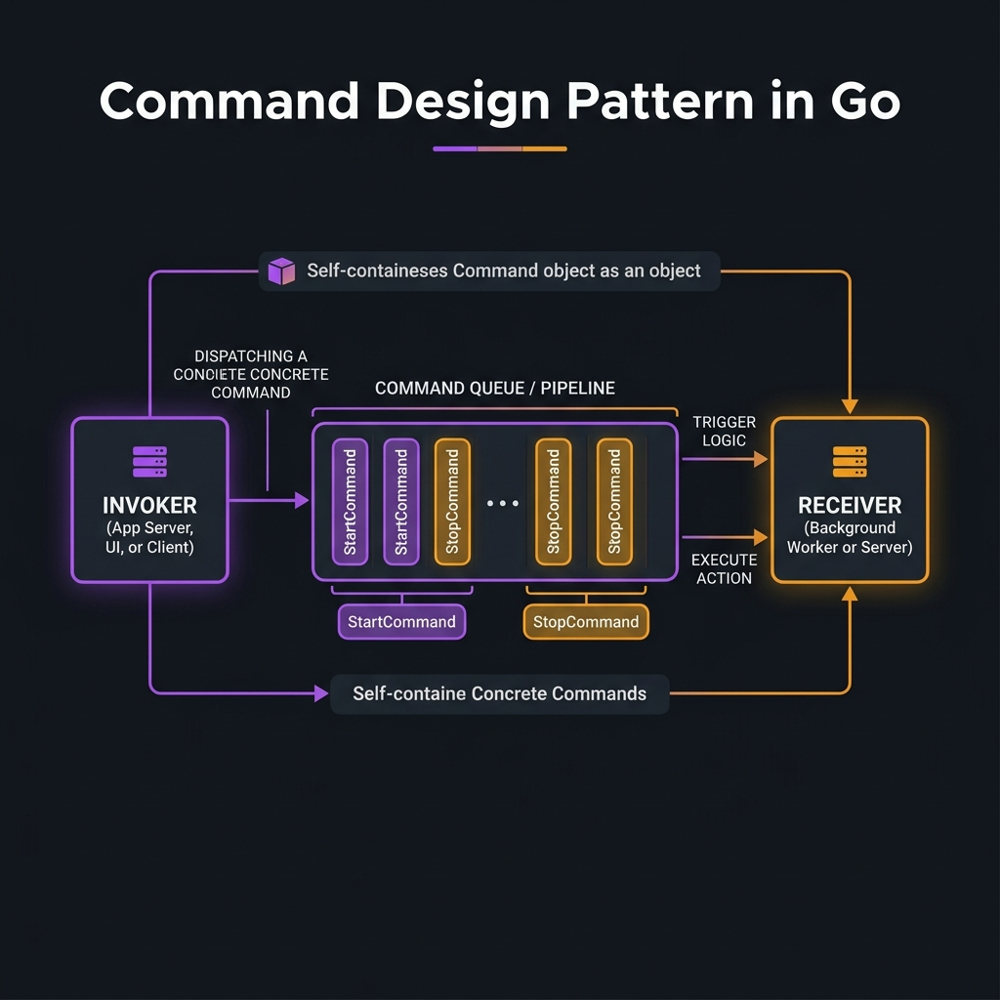
    <div class="concept-img-caption">Hình 3.2: Kiến trúc mô phỏng Command Pattern trong Go — Đóng gói yêu cầu thành đối tượng Command độc lập để quản lý hàng đợi và thực hiện xử lý bất đồng bộ</div>
  </div>

  <div class="diagram">
    <div class="diagram-title">Command Pattern — Invoker · Command · Receiver</div>
    <svg width="100%" viewBox="0 0 820 240" xmlns="http://www.w3.org/2000/svg" font-family="JetBrains Mono">
      <defs><marker id="ca" viewBox="0 0 10 10" refX="8" refY="5" markerWidth="5" markerHeight="5" orient="auto"><path d="M2 2L8 5L2 8" fill="none" stroke="#475569" stroke-width="1.5" stroke-linecap="round"/></marker></defs>
      <!-- Client -->
      <rect x="20" y="90" width="110" height="60" rx="7" fill="rgba(255,255,255,0.04)" stroke="rgba(255,255,255,0.12)" stroke-width="1.3"/>
      <text x="75" y="115" text-anchor="middle" font-size="12" fill="#94a3b8">Client</text>
      <text x="75" y="132" text-anchor="middle" font-size="10" fill="#64748b">creates &amp; binds</text>
      <line x1="130" y1="120" x2="180" y2="120" stroke="#475569" stroke-width="1" marker-end="url(#ca)"/>

      <!-- Invoker -->
      <rect x="180" y="70" width="150" height="100" rx="8" fill="rgba(0,212,255,0.08)" stroke="rgba(0,212,255,0.4)" stroke-width="1.5"/>
      <rect x="180" y="70" width="150" height="26" rx="8" fill="rgba(0,212,255,0.15)" stroke="none"/>
      <text x="255" y="88" text-anchor="middle" font-size="12" font-weight="700" fill="#00d4ff">Invoker</text>
      <line x1="180" y1="96" x2="330" y2="96" stroke="rgba(0,212,255,0.2)" stroke-width="1"/>
      <text x="190" y="113" font-size="11" fill="#94a3b8">- history []Command</text>
      <line x1="180" y1="118" x2="330" y2="118" stroke="rgba(0,212,255,0.15)" stroke-width="1" stroke-dasharray="3,2"/>
      <text x="190" y="135" font-size="11" fill="#60a5fa">+ Execute(cmd)</text>
      <text x="190" y="152" font-size="11" fill="#60a5fa">+ Undo()</text>

      <!-- Command Interface -->
      <rect x="395" y="20" width="160" height="68" rx="8" fill="rgba(168,85,247,0.08)" stroke="rgba(168,85,247,0.4)" stroke-width="1.5"/>
      <rect x="395" y="20" width="160" height="26" rx="8" fill="rgba(168,85,247,0.12)" stroke="none"/>
      <text x="475" y="33" text-anchor="middle" font-size="10" fill="#a855f7">«interface»</text>
      <text x="475" y="47" text-anchor="middle" font-size="12" font-weight="700" fill="#a855f7">Command</text>
      <line x1="395" y1="46" x2="555" y2="46" stroke="rgba(168,85,247,0.2)" stroke-width="1"/>
      <text x="405" y="63" font-size="11" fill="#60a5fa">+ Execute() error</text>
      <text x="405" y="77" font-size="11" fill="#60a5fa">+ Undo() error</text>

      <!-- Invoker → Command -->
      <line x1="330" y1="100" x2="395" y2="55" stroke="#475569" stroke-width="1.5" stroke-dasharray="5,3"/>
      <text x="354" y="73" font-size="10" fill="#64748b">executes</text>

      <!-- Receiver -->
      <rect x="590" y="70" width="200" height="100" rx="8" fill="rgba(0,255,136,0.07)" stroke="rgba(0,255,136,0.3)" stroke-width="1.3"/>
      <rect x="590" y="70" width="200" height="26" rx="8" fill="rgba(0,255,136,0.12)" stroke="none"/>
      <text x="690" y="88" text-anchor="middle" font-size="12" font-weight="700" fill="#00ff88">Receiver</text>
      <line x1="590" y1="96" x2="790" y2="96" stroke="rgba(0,255,136,0.2)" stroke-width="1"/>
      <text x="600" y="113" font-size="11" fill="#94a3b8">(TextEditor, DB, ...)</text>
      <line x1="590" y1="118" x2="790" y2="118" stroke="rgba(0,255,136,0.12)" stroke-width="1" stroke-dasharray="3,2"/>
      <text x="600" y="135" font-size="11" fill="#60a5fa">+ DoAction()</text>
      <text x="600" y="152" font-size="11" fill="#60a5fa">+ UndoAction()</text>

      <!-- ConcreteCommand -->
      <rect x="395" y="150" width="160" height="70" rx="8" fill="rgba(245,158,11,0.07)" stroke="rgba(245,158,11,0.3)" stroke-width="1.3"/>
      <text x="475" y="168" text-anchor="middle" font-size="11" font-weight="700" fill="#f59e0b">ConcreteCommand</text>
      <line x1="395" y1="172" x2="555" y2="172" stroke="rgba(245,158,11,0.2)" stroke-width="1"/>
      <text x="405" y="189" font-size="11" fill="#94a3b8">- receiver *Receiver</text>
      <text x="405" y="205" font-size="11" fill="#94a3b8">- prevState any</text>

      <!-- ConcreteCommand → Receiver -->
      <line x1="555" y1="185" x2="590" y2="130" stroke="#475569" stroke-width="1" stroke-dasharray="3,2"/>
      <!-- Implements -->
      <line x1="475" y1="150" x2="475" y2="88" stroke="#475569" stroke-width="1" stroke-dasharray="3,2"/>
    </svg>
  </div>

  <h3>📝 Example 1 — Text Editor Undo/Redo (Advanced)</h3>
  <div class="cb">
    <div class="ch"><span class="cl">GO</span><span class="cf">editor_command.go</span><span class="cbadge cb-adv">ADVANCED</span></div>
    <pre><span class="cm">// Command Pattern: Text Editor với full undo/redo stack
// Mỗi operation (Insert, Delete, Format) là 1 Command object</span>

<span class="kw">type</span> <span class="tp">Command</span> <span class="kw">interface</span> {
    <span class="fn">Execute</span>() <span class="tp">error</span>
    <span class="fn">Undo</span>() <span class="tp">error</span>
    <span class="fn">Description</span>() <span class="tp">string</span>
}

<span class="cm">// Receiver: TextEditor</span>
<span class="kw">type</span> <span class="tp">TextEditor</span> <span class="kw">struct</span> {
    content []<span class="tp">rune</span>
    cursor  <span class="tp">int</span>
}

<span class="kw">func</span> (e *<span class="tp">TextEditor</span>) <span class="fn">Insert</span>(pos <span class="tp">int</span>, text <span class="tp">string</span>) {
    runes := []<span class="tp">rune</span>(text)
    e.content = <span class="fn">append</span>(e.content[:<span class="num">0</span>], <span class="fn">append</span>(
        <span class="fn">append</span>(e.content[:pos:pos], runes...),
        e.content[pos:]...,
    )...)
    e.cursor = pos + <span class="fn">len</span>(runes)
}

<span class="kw">func</span> (e *<span class="tp">TextEditor</span>) <span class="fn">Delete</span>(pos, length <span class="tp">int</span>) <span class="tp">string</span> {
    deleted := <span class="tp">string</span>(e.content[pos : pos+length])
    e.content = <span class="fn">append</span>(e.content[:pos], e.content[pos+length:]...)
    e.cursor = pos
    <span class="kw">return</span> deleted
}

<span class="kw">func</span> (e *<span class="tp">TextEditor</span>) <span class="fn">Content</span>() <span class="tp">string</span> { <span class="kw">return</span> <span class="tp">string</span>(e.content) }

<span class="cm">// ConcreteCommand: InsertCommand</span>
<span class="kw">type</span> <span class="tp">InsertCommand</span> <span class="kw">struct</span> {
    editor   *<span class="tp">TextEditor</span>
    position <span class="tp">int</span>
    text     <span class="tp">string</span>
}

<span class="kw">func</span> (c *<span class="tp">InsertCommand</span>) <span class="fn">Execute</span>() <span class="tp">error</span> {
    c.editor.<span class="fn">Insert</span>(c.position, c.text); <span class="kw">return</span> <span class="kw">nil</span>
}
<span class="kw">func</span> (c *<span class="tp">InsertCommand</span>) <span class="fn">Undo</span>() <span class="tp">error</span> {
    c.editor.<span class="fn">Delete</span>(c.position, <span class="fn">len</span>([]<span class="tp">rune</span>(c.text))); <span class="kw">return</span> <span class="kw">nil</span>
}
<span class="kw">func</span> (c *<span class="tp">InsertCommand</span>) <span class="fn">Description</span>() <span class="tp">string</span> {
    <span class="kw">return</span> <span class="pkg">fmt</span>.<span class="fn">Sprintf</span>(<span class="str">"Insert %q at %d"</span>, c.text, c.position)
}

<span class="cm">// Invoker: CommandHistory (Undo/Redo stack)</span>
<span class="kw">type</span> <span class="tp">CommandHistory</span> <span class="kw">struct</span> {
    done   []<span class="tp">Command</span>
    undone []<span class="tp">Command</span>
}

<span class="kw">func</span> (h *<span class="tp">CommandHistory</span>) <span class="fn">Execute</span>(cmd <span class="tp">Command</span>) <span class="tp">error</span> {
    <span class="kw">if</span> err := cmd.<span class="fn">Execute</span>(); err != <span class="kw">nil</span> { <span class="kw">return</span> err }
    h.done = <span class="fn">append</span>(h.done, cmd)
    h.undone = h.undone[:<span class="num">0</span>] <span class="cm">// clear redo stack</span>
    <span class="kw">return</span> <span class="kw">nil</span>
}

<span class="kw">func</span> (h *<span class="tp">CommandHistory</span>) <span class="fn">Undo</span>() <span class="tp">error</span> {
    <span class="kw">if</span> <span class="fn">len</span>(h.done) == <span class="num">0</span> { <span class="kw">return</span> <span class="pkg">errors</span>.<span class="fn">New</span>(<span class="str">"nothing to undo"</span>) }
    n := <span class="fn">len</span>(h.done) - <span class="num">1</span>
    cmd := h.done[n]; h.done = h.done[:n]
    <span class="kw">if</span> err := cmd.<span class="fn">Undo</span>(); err != <span class="kw">nil</span> { <span class="kw">return</span> err }
    h.undone = <span class="fn">append</span>(h.undone, cmd)
    <span class="kw">return</span> <span class="kw">nil</span>
}

<span class="kw">func</span> (h *<span class="tp">CommandHistory</span>) <span class="fn">Redo</span>() <span class="tp">error</span> {
    <span class="kw">if</span> <span class="fn">len</span>(h.undone) == <span class="num">0</span> { <span class="kw">return</span> <span class="pkg">errors</span>.<span class="fn">New</span>(<span class="str">"nothing to redo"</span>) }
    n := <span class="fn">len</span>(h.undone) - <span class="num">1</span>
    cmd := h.undone[n]; h.undone = h.undone[:n]
    <span class="kw">if</span> err := cmd.<span class="fn">Execute</span>(); err != <span class="kw">nil</span> { <span class="kw">return</span> err }
    h.done = <span class="fn">append</span>(h.done, cmd)
    <span class="kw">return</span> <span class="kw">nil</span>
}</pre>
  </div>

  <h3>📝 Example 2 — HTTP Command Queue với Worker Pool (Expert)</h3>
  <div class="cb">
    <div class="ch"><span class="cl">GO</span><span class="cf">command_queue.go</span><span class="cbadge cb-exp">EXPERT</span></div>
    <pre><span class="cm">// Command Queue: async task processing với retries, priority, cancellation
// Kết hợp Command pattern + Worker Pool</span>

<span class="kw">type</span> <span class="tp">Priority</span> <span class="tp">int</span>
<span class="kw">const</span> (<span class="tp">Low</span> <span class="tp">Priority</span> = <span class="kw">iota</span>; <span class="tp">Normal</span>; <span class="tp">High</span>; <span class="tp">Critical</span>)

<span class="kw">type</span> <span class="tp">AsyncCommand</span> <span class="kw">struct</span> {
    ID       <span class="tp">string</span>
    Priority <span class="tp">Priority</span>
    MaxRetry <span class="tp">int</span>
    Timeout  <span class="tp">time.Duration</span>
    Fn       <span class="kw">func</span>(ctx <span class="tp">context.Context</span>) <span class="tp">error</span>
    OnDone   <span class="kw">func</span>(<span class="tp">error</span>)
}

<span class="kw">type</span> <span class="tp">CommandQueue</span> <span class="kw">struct</span> {
    queue   <span class="kw">chan</span> *<span class="tp">AsyncCommand</span>
    workers <span class="tp">int</span>
    wg      <span class="pkg">sync</span>.<span class="tp">WaitGroup</span>
    ctx     <span class="tp">context.Context</span>
    cancel  <span class="tp">context.CancelFunc</span>
}

<span class="kw">func</span> <span class="fn">NewCommandQueue</span>(workers, capacity <span class="tp">int</span>) *<span class="tp">CommandQueue</span> {
    ctx, cancel := <span class="pkg">context</span>.<span class="fn">WithCancel</span>(<span class="pkg">context</span>.<span class="fn">Background</span>())
    q := &<span class="tp">CommandQueue</span>{
        queue: <span class="kw">make</span>(<span class="kw">chan</span> *<span class="tp">AsyncCommand</span>, capacity),
        workers: workers, ctx: ctx, cancel: cancel,
    }
    <span class="kw">for</span> i := <span class="num">0</span>; i < workers; i++ {
        q.wg.<span class="fn">Add</span>(<span class="num">1</span>)
        <span class="kw">go</span> q.<span class="fn">worker</span>()
    }
    <span class="kw">return</span> q
}

<span class="kw">func</span> (q *<span class="tp">CommandQueue</span>) <span class="fn">worker</span>() {
    <span class="kw">defer</span> q.wg.<span class="fn">Done</span>()
    <span class="kw">for</span> { <span class="kw">select</span> {
        <span class="kw">case</span> cmd, ok := <-q.queue:
            <span class="kw">if</span> !ok { <span class="kw">return</span> }
            q.<span class="fn">execute</span>(cmd)
        <span class="kw">case</span> <-q.ctx.<span class="fn">Done</span>(): <span class="kw">return</span>
    }}
}

<span class="kw">func</span> (q *<span class="tp">CommandQueue</span>) <span class="fn">execute</span>(cmd *<span class="tp">AsyncCommand</span>) {
    <span class="kw">var</span> err <span class="tp">error</span>
    <span class="kw">for</span> attempt := <span class="num">0</span>; attempt <= cmd.MaxRetry; attempt++ {
        ctx, cancel := <span class="pkg">context</span>.<span class="fn">WithTimeout</span>(q.ctx, cmd.Timeout)
        err = cmd.<span class="fn">Fn</span>(ctx)
        <span class="fn">cancel</span>()
        <span class="kw">if</span> err == <span class="kw">nil</span> { <span class="kw">break</span> }
        <span class="kw">if</span> attempt < cmd.MaxRetry {
            <span class="pkg">time</span>.<span class="fn">Sleep</span>(<span class="pkg">time</span>.Duration(<span class="num">1</span><<attempt) * <span class="num">100</span> * <span class="pkg">time</span>.<span class="tp">Millisecond</span>) <span class="cm">// exp backoff</span>
        }
    }
    <span class="kw">if</span> cmd.OnDone != <span class="kw">nil</span> { cmd.<span class="fn">OnDone</span>(err) }
}

<span class="kw">func</span> (q *<span class="tp">CommandQueue</span>) <span class="fn">Enqueue</span>(cmd *<span class="tp">AsyncCommand</span>) <span class="tp">error</span> {
    <span class="kw">select</span> {
    <span class="kw">case</span> q.queue <- cmd: <span class="kw">return</span> <span class="kw">nil</span>
    <span class="kw">default</span>: <span class="kw">return</span> <span class="pkg">errors</span>.<span class="fn">New</span>(<span class="str">"queue full"</span>)
    }
}

<span class="kw">func</span> (q *<span class="tp">CommandQueue</span>) <span class="fn">Shutdown</span>() {
    q.<span class="fn">cancel</span>(); <span class="kw">close</span>(q.queue); q.wg.<span class="fn">Wait</span>()
}</pre>
  </div>
</section>

<!-- ═══════════════════════════ TEMPLATE ═══════════════════════════ -->
<section class="page-section" id="s-template">
  <div class="sec-header">
    <div class="sec-num">04</div>
    <div><div class="sec-title">Template Method Pattern</div>
    <div class="sec-sub">Định nghĩa bộ khung thuật toán — các bước có thể override</div></div>
    <span class="badge b-adv">BEHAVIORAL</span>
  </div>

  <div class="concept">
    <div class="lbl">💡 Định nghĩa — GoF</div>
    <div class="ttl">Template Method — Skeleton trong base, chi tiết trong subtype</div>
    <p class="prose"><strong>Template Method</strong> định nghĩa <em>bộ khung</em> (skeleton) của một thuật toán trong base class/struct, và cho phép các subtype <strong>override các bước cụ thể</strong> mà không thay đổi cấu trúc tổng thể. Trong Go (không có kế thừa), ta dùng <strong>embedding + interface hooks</strong> hoặc <strong>function callbacks</strong> để inject các bước có thể customize.</p>
  </div>

  <div class="concept-img-wrapper">
    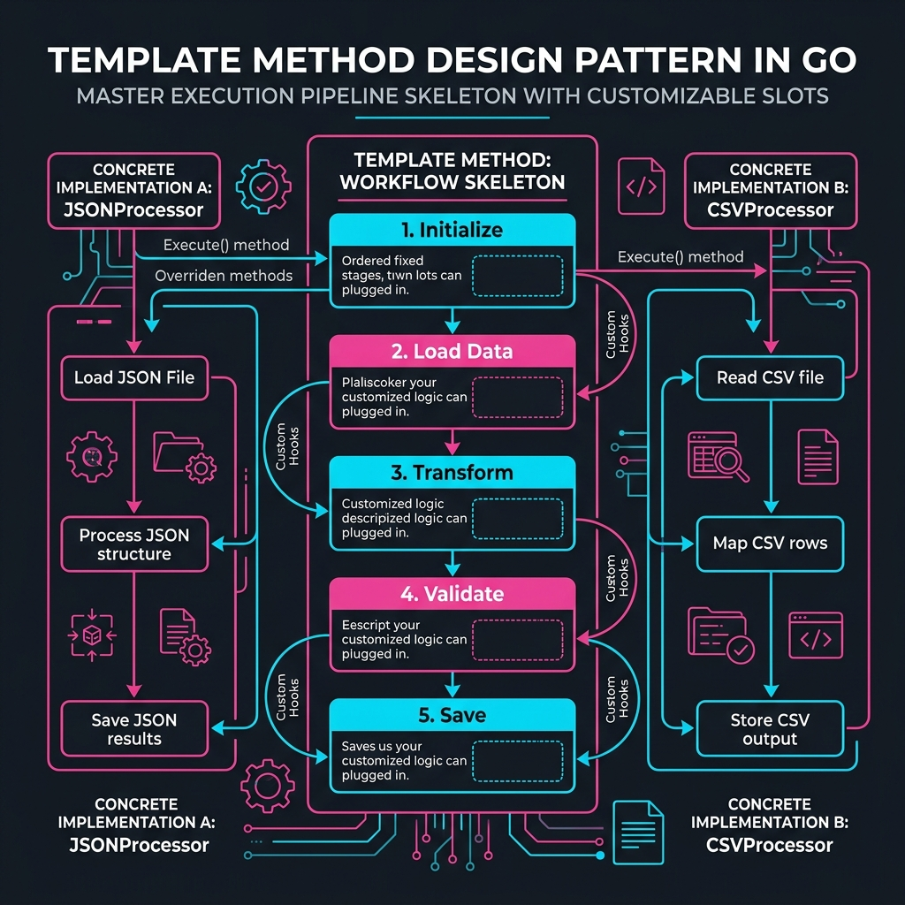
    <div class="concept-img-caption">Hình 4.1: Kiến trúc mô phỏng Template Method Pattern trong Go — Định nghĩa bộ khung thuật toán cố định và cho phép tùy biến linh hoạt các bước cụ thể thông qua interface hooks</div>
  </div>

  <div class="diagram">
    <div class="diagram-title">Template Method — Cấu trúc Pipeline với Hooks</div>
    <svg width="100%" viewBox="0 0 820 220" xmlns="http://www.w3.org/2000/svg" font-family="JetBrains Mono">
      <defs><marker id="ta" viewBox="0 0 10 10" refX="8" refY="5" markerWidth="4" markerHeight="4" orient="auto"><path d="M2 2L8 5L2 8" fill="none" stroke="#00ff88" stroke-width="1.5" stroke-linecap="round"/></marker></defs>
      <!-- Template method flow -->
      <text x="30" y="26" font-size="11" font-weight="700" fill="#00ff88">templateMethod() — Fixed Structure:</text>

      <rect x="30" y="36" width="130" height="36" rx="6" fill="rgba(0,255,136,0.1)" stroke="rgba(0,255,136,0.4)" stroke-width="1.5"/>
      <text x="95" y="59" text-anchor="middle" font-size="12" font-weight="600" fill="#00ff88">1. validate()</text>
      <line x1="160" y1="54" x2="195" y2="54" stroke="#00ff88" stroke-width="1.5" marker-end="url(#ta)"/>

      <rect x="198" y="36" width="130" height="36" rx="6" fill="rgba(0,212,255,0.1)" stroke="rgba(0,212,255,0.4)" stroke-width="1.5"/>
      <text x="263" y="59" text-anchor="middle" font-size="12" font-weight="600" fill="#00d4ff">2. parse()</text>
      <line x1="328" y1="54" x2="363" y2="54" stroke="#00ff88" stroke-width="1.5" marker-end="url(#ta)"/>

      <rect x="366" y="36" width="130" height="36" rx="6" fill="rgba(168,85,247,0.1)" stroke="rgba(168,85,247,0.4)" stroke-width="1.5"/>
      <text x="431" y="54" text-anchor="middle" font-size="12" font-weight="600" fill="#a855f7">3. process()</text>
      <text x="431" y="67" text-anchor="middle" font-size="10" fill="#a855f7">«hook»</text>
      <line x1="496" y1="54" x2="531" y2="54" stroke="#00ff88" stroke-width="1.5" marker-end="url(#ta)"/>

      <rect x="534" y="36" width="130" height="36" rx="6" fill="rgba(245,158,11,0.1)" stroke="rgba(245,158,11,0.4)" stroke-width="1.5"/>
      <text x="599" y="54" text-anchor="middle" font-size="12" font-weight="600" fill="#f59e0b">4. format()</text>
      <text x="599" y="67" text-anchor="middle" font-size="10" fill="#f59e0b">«hook»</text>
      <line x1="664" y1="54" x2="699" y2="54" stroke="#00ff88" stroke-width="1.5" marker-end="url(#ta)"/>

      <rect x="702" y="36" width="100" height="36" rx="6" fill="rgba(0,255,136,0.1)" stroke="rgba(0,255,136,0.4)" stroke-width="1.5"/>
      <text x="752" y="59" text-anchor="middle" font-size="12" font-weight="600" fill="#00ff88">5. save()</text>

      <!-- Concrete implementations -->
      <text x="30" y="110" font-size="11" fill="#64748b">Concrete Implementations override «hook» steps:</text>
      <!-- CSVProcessor -->
      <rect x="30" y="124" width="175" height="80" rx="7" fill="rgba(255,255,255,0.03)" stroke="rgba(255,255,255,0.1)" stroke-width="1"/>
      <text x="117" y="142" text-anchor="middle" font-size="11" font-weight="700" fill="#94a3b8">CSVProcessor</text>
      <text x="40" y="160" font-size="11" fill="#64748b">process() → parse CSV rows</text>
      <text x="40" y="176" font-size="11" fill="#64748b">format()  → comma-sep</text>
      <line x1="366" y1="60" x2="120" y2="124" stroke="#a855f7" stroke-width="1" stroke-dasharray="3,2"/>

      <!-- JSONProcessor -->
      <rect x="235" y="124" width="175" height="80" rx="7" fill="rgba(255,255,255,0.03)" stroke="rgba(255,255,255,0.1)" stroke-width="1"/>
      <text x="322" y="142" text-anchor="middle" font-size="11" font-weight="700" fill="#94a3b8">JSONProcessor</text>
      <text x="245" y="160" font-size="11" fill="#64748b">process() → unmarshal</text>
      <text x="245" y="176" font-size="11" fill="#64748b">format()  → indent JSON</text>
      <line x1="431" y1="72" x2="322" y2="124" stroke="#a855f7" stroke-width="1" stroke-dasharray="3,2"/>

      <!-- XMLProcessor -->
      <rect x="440" y="124" width="175" height="80" rx="7" fill="rgba(255,255,255,0.03)" stroke="rgba(255,255,255,0.1)" stroke-width="1"/>
      <text x="527" y="142" text-anchor="middle" font-size="11" font-weight="700" fill="#94a3b8">XMLProcessor</text>
      <text x="450" y="160" font-size="11" fill="#64748b">process() → xml.Unmarshal</text>
      <text x="450" y="176" font-size="11" fill="#64748b">format()  → xml.MarshalIndent</text>
      <line x1="534" y1="60" x2="527" y2="124" stroke="#f59e0b" stroke-width="1" stroke-dasharray="3,2"/>
    </svg>
  </div>

  <h3>📝 Example 1 — Data Processing Pipeline (Advanced)</h3>
  <div class="cb">
    <div class="ch"><span class="cl">GO</span><span class="cf">data_pipeline.go</span><span class="cbadge cb-adv">ADVANCED</span></div>
    <pre><span class="cm">// Template Method: Data Processing Pipeline
// Base struct định nghĩa skeleton, hooks được inject qua interface</span>

<span class="kw">type</span> <span class="tp">DataHooks</span> <span class="kw">interface</span> {
    <span class="fn">Parse</span>(raw []<span class="tp">byte</span>) (<span class="kw">any</span>, <span class="tp">error</span>)
    <span class="fn">Process</span>(data <span class="kw">any</span>) (<span class="kw">any</span>, <span class="tp">error</span>)
    <span class="fn">Format</span>(result <span class="kw">any</span>) ([]<span class="tp">byte</span>, <span class="tp">error</span>)
}

<span class="cm">// Base processor — cố định structure: validate → parse → process → format → save</span>
<span class="kw">type</span> <span class="tp">BaseProcessor</span> <span class="kw">struct</span> {
    hooks    <span class="tp">DataHooks</span>
    maxBytes <span class="tp">int</span>
    logger   *<span class="pkg">log</span>.<span class="tp">Logger</span>
}

<span class="kw">func</span> <span class="fn">NewProcessor</span>(hooks <span class="tp">DataHooks</span>) *<span class="tp">BaseProcessor</span> {
    <span class="kw">return</span> &<span class="tp">BaseProcessor</span>{hooks: hooks, maxBytes: <span class="num">10</span> << <span class="num">20</span>, logger: <span class="pkg">log</span>.<span class="fn">Default</span>()}
}

<span class="cm">// Template method — cấu trúc cố định</span>
<span class="kw">func</span> (p *<span class="tp">BaseProcessor</span>) <span class="fn">Run</span>(ctx <span class="tp">context.Context</span>, raw []<span class="tp">byte</span>) ([]<span class="tp">byte</span>, <span class="tp">error</span>) {
    <span class="cm">// Step 1: Validate (fixed)</span>
    <span class="kw">if</span> <span class="fn">len</span>(raw) == <span class="num">0</span>              { <span class="kw">return</span> <span class="kw">nil</span>, <span class="pkg">errors</span>.<span class="fn">New</span>(<span class="str">"empty input"</span>) }
    <span class="kw">if</span> <span class="fn">len</span>(raw) > p.maxBytes       { <span class="kw">return</span> <span class="kw">nil</span>, <span class="pkg">fmt</span>.<span class="fn">Errorf</span>(<span class="str">"input too large: %d bytes"</span>, <span class="fn">len</span>(raw)) }
    <span class="kw">if</span> err := ctx.<span class="fn">Err</span>(); err != <span class="kw">nil</span> { <span class="kw">return</span> <span class="kw">nil</span>, err }

    <span class="cm">// Step 2: Parse (hook)</span>
    p.logger.<span class="fn">Printf</span>(<span class="str">"parsing %d bytes"</span>, <span class="fn">len</span>(raw))
    data, err := p.hooks.<span class="fn">Parse</span>(raw)
    <span class="kw">if</span> err != <span class="kw">nil</span> { <span class="kw">return</span> <span class="kw">nil</span>, <span class="pkg">fmt</span>.<span class="fn">Errorf</span>(<span class="str">"parse: %w"</span>, err) }

    <span class="cm">// Step 3: Process (hook)</span>
    result, err := p.hooks.<span class="fn">Process</span>(data)
    <span class="kw">if</span> err != <span class="kw">nil</span> { <span class="kw">return</span> <span class="kw">nil</span>, <span class="pkg">fmt</span>.<span class="fn">Errorf</span>(<span class="str">"process: %w"</span>, err) }

    <span class="cm">// Step 4: Format (hook)</span>
    out, err := p.hooks.<span class="fn">Format</span>(result)
    <span class="kw">if</span> err != <span class="kw">nil</span> { <span class="kw">return</span> <span class="kw">nil</span>, <span class="pkg">fmt</span>.<span class="fn">Errorf</span>(<span class="str">"format: %w"</span>, err) }

    p.logger.<span class="fn">Printf</span>(<span class="str">"done: output %d bytes"</span>, <span class="fn">len</span>(out))
    <span class="kw">return</span> out, <span class="kw">nil</span>
}

<span class="cm">// ConcreteHooks: JSONHooks</span>
<span class="kw">type</span> <span class="tp">JSONHooks</span> <span class="kw">struct</span>{}

<span class="kw">func</span> (j <span class="tp">JSONHooks</span>) <span class="fn">Parse</span>(raw []<span class="tp">byte</span>) (<span class="kw">any</span>, <span class="tp">error</span>) {
    <span class="kw">var</span> m <span class="kw">map</span>[<span class="tp">string</span>]<span class="kw">any</span>
    <span class="kw">return</span> m, <span class="pkg">json</span>.<span class="fn">Unmarshal</span>(raw, &m)
}
<span class="kw">func</span> (j <span class="tp">JSONHooks</span>) <span class="fn">Process</span>(data <span class="kw">any</span>) (<span class="kw">any</span>, <span class="tp">error</span>) {
    m := data.(<span class="kw">map</span>[<span class="tp">string</span>]<span class="kw">any</span>)
    m[<span class="str">"processed_at"</span>] = <span class="pkg">time</span>.<span class="fn">Now</span>().<span class="fn">Format</span>(<span class="pkg">time</span>.<span class="tp">RFC3339</span>)
    <span class="kw">return</span> m, <span class="kw">nil</span>
}
<span class="kw">func</span> (j <span class="tp">JSONHooks</span>) <span class="fn">Format</span>(result <span class="kw">any</span>) ([]<span class="tp">byte</span>, <span class="tp">error</span>) {
    <span class="kw">return</span> <span class="pkg">json</span>.<span class="fn">MarshalIndent</span>(result, <span class="str">""</span>, <span class="str">"  "</span>)
}

<span class="cm">// Usage:</span>
<span class="cm">// proc := NewProcessor(JSONHooks{})</span>
<span class="cm">// out, err := proc.Run(ctx, rawInput)</span></pre>
  </div>
</section>

<!-- ═══════════════════════════ STATE ═══════════════════════════ -->
<section class="page-section" id="s-state">
  <div class="sec-header">
    <div class="sec-num">05</div>
    <div><div class="sec-title">State Pattern</div>
    <div class="sec-sub">FSM — Hành vi thay đổi khi state nội tại của object thay đổi</div></div>
    <span class="badge b-adv">BEHAVIORAL</span>
  </div>

  <div class="concept">
    <div class="lbl">💡 Định nghĩa — GoF</div>
    <div class="ttl">State — Encapsulate hành vi theo từng trạng thái</div>
    <p class="prose"><strong>State</strong> cho phép object <em>thay đổi hành vi</em> khi state nội tại thay đổi. Object sẽ "trông như thay đổi class". Thay vì <code>switch state { case A: ... case B: ... }</code>, ta đặt mỗi state vào một struct riêng implement cùng interface. Context giữ con trỏ đến current state và delegate request. Dùng cho: <strong>Order workflow, Connection FSM, Traffic Light, Game character states</strong>.</p>
  </div>

  <div class="concept-img-wrapper">
    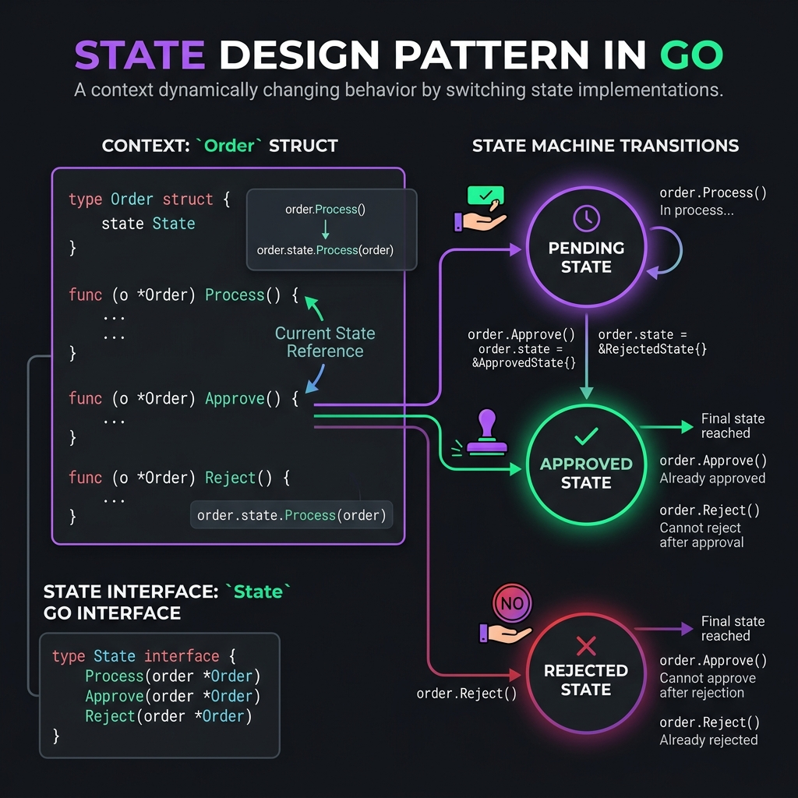
    <div class="concept-img-caption">Hình 5.1: Kiến trúc mô phỏng State Pattern trong Go — Cho phép Context thay đổi hành vi động bằng cách ủy quyền xử lý cho các đối tượng State cụ thể tương ứng với từng trạng thái</div>
  </div>

  <div class="diagram">
    <div class="diagram-title">State Pattern — Order Workflow FSM</div>
    <svg width="100%" viewBox="0 0 820 200" xmlns="http://www.w3.org/2000/svg" font-family="JetBrains Mono">
      <defs>
        <marker id="sa" viewBox="0 0 10 10" refX="8" refY="5" markerWidth="5" markerHeight="5" orient="auto"><path d="M2 2L8 5L2 8" fill="none" stroke="#f59e0b" stroke-width="1.5" stroke-linecap="round"/></marker>
        <marker id="sa2" viewBox="0 0 10 10" refX="8" refY="5" markerWidth="5" markerHeight="5" orient="auto"><path d="M2 2L8 5L2 8" fill="none" stroke="#ff6b6b" stroke-width="1.5" stroke-linecap="round"/></marker>
      </defs>
      <!-- States -->
      <circle cx="80" cy="100" r="32" fill="rgba(0,212,255,0.12)" stroke="rgba(0,212,255,0.5)" stroke-width="1.8"/>
      <text x="80" y="96" text-anchor="middle" font-size="11" font-weight="700" fill="#00d4ff">PENDING</text>
      <text x="80" y="111" text-anchor="middle" font-size="10" fill="#64748b">initial</text>

      <circle cx="240" cy="100" r="32" fill="rgba(245,158,11,0.12)" stroke="rgba(245,158,11,0.5)" stroke-width="1.8"/>
      <text x="240" y="96" text-anchor="middle" font-size="11" font-weight="700" fill="#f59e0b">CONFIRMED</text>
      <text x="240" y="111" text-anchor="middle" font-size="10" fill="#64748b">paid</text>

      <circle cx="400" cy="100" r="32" fill="rgba(168,85,247,0.12)" stroke="rgba(168,85,247,0.5)" stroke-width="1.8"/>
      <text x="400" y="96" text-anchor="middle" font-size="11" font-weight="700" fill="#a855f7">SHIPPING</text>
      <text x="400" y="111" text-anchor="middle" font-size="10" fill="#64748b">in transit</text>

      <circle cx="560" cy="100" r="32" fill="rgba(0,255,136,0.12)" stroke="rgba(0,255,136,0.5)" stroke-width="1.8"/>
      <text x="560" y="96" text-anchor="middle" font-size="11" font-weight="700" fill="#00ff88">DELIVERED</text>
      <text x="560" y="111" text-anchor="middle" font-size="10" fill="#64748b">done</text>

      <circle cx="720" cy="100" r="32" fill="rgba(255,107,107,0.12)" stroke="rgba(255,107,107,0.5)" stroke-width="1.8"/>
      <text x="720" y="96" text-anchor="middle" font-size="11" font-weight="700" fill="#ff6b6b">CANCELLED</text>
      <text x="720" y="111" text-anchor="middle" font-size="10" fill="#64748b">terminal</text>

      <!-- Forward transitions -->
      <line x1="112" y1="100" x2="208" y2="100" stroke="#f59e0b" stroke-width="1.5" marker-end="url(#sa)"/>
      <text x="160" y="92" text-anchor="middle" font-size="10" fill="#f59e0b">confirm()</text>
      <line x1="272" y1="100" x2="368" y2="100" stroke="#f59e0b" stroke-width="1.5" marker-end="url(#sa)"/>
      <text x="320" y="92" text-anchor="middle" font-size="10" fill="#f59e0b">ship()</text>
      <line x1="432" y1="100" x2="528" y2="100" stroke="#f59e0b" stroke-width="1.5" marker-end="url(#sa)"/>
      <text x="480" y="92" text-anchor="middle" font-size="10" fill="#f59e0b">deliver()</text>

      <!-- Cancel transitions -->
      <path d="M112 86 Q414 30 622 86" fill="none" stroke="#ff6b6b" stroke-width="1.2" stroke-dasharray="5,3" marker-end="url(#sa2)"/>
      <text x="360" y="44" text-anchor="middle" font-size="10" fill="#ff6b6b">cancel() — from PENDING or CONFIRMED</text>

      <!-- State interface box -->
      <rect x="30" y="155" width="760" height="38" rx="6" fill="rgba(255,255,255,0.02)" stroke="rgba(255,255,255,0.07)" stroke-width="1"/>
      <text x="40" y="172" font-size="11" fill="#64748b">interface OrderState {</text>
      <text x="200" y="172" font-size="11" fill="#60a5fa"> Confirm(o *Order) error  |  Ship(o *Order) error  |  Deliver(o *Order) error  |  Cancel(o *Order) error</text>
      <text x="720" y="172" font-size="11" fill="#64748b"> }</text>
    </svg>
  </div>

  <h3>📝 Example 1 — Order State Machine (Advanced)</h3>
  <div class="cb">
    <div class="ch"><span class="cl">GO</span><span class="cf">order_state.go</span><span class="cbadge cb-adv">ADVANCED</span></div>
    <pre><span class="cm">// State Pattern: Order lifecycle FSM
// Mỗi state là 1 struct implement OrderState interface
// Không có switch/if-else phân nhánh theo state</span>

<span class="kw">type</span> <span class="tp">OrderState</span> <span class="kw">interface</span> {
    <span class="fn">Confirm</span>(o *<span class="tp">Order</span>) <span class="tp">error</span>
    <span class="fn">Ship</span>(o *<span class="tp">Order</span>) <span class="tp">error</span>
    <span class="fn">Deliver</span>(o *<span class="tp">Order</span>) <span class="tp">error</span>
    <span class="fn">Cancel</span>(o *<span class="tp">Order</span>) <span class="tp">error</span>
    <span class="fn">String</span>() <span class="tp">string</span>
}

<span class="cm">// errInvalidTransition helper</span>
<span class="kw">func</span> <span class="fn">errTrans</span>(from, to <span class="tp">string</span>) <span class="tp">error</span> {
    <span class="kw">return</span> <span class="pkg">fmt</span>.<span class="fn">Errorf</span>(<span class="str">"invalid transition: %s → %s"</span>, from, to)
}

<span class="cm">// PendingState</span>
<span class="kw">type</span> <span class="tp">PendingState</span> <span class="kw">struct</span>{}
<span class="kw">func</span> (s *<span class="tp">PendingState</span>) <span class="fn">Confirm</span>(o *<span class="tp">Order</span>) <span class="tp">error</span> { o.<span class="fn">setState</span>(&<span class="tp">ConfirmedState</span>{}); <span class="kw">return</span> <span class="kw">nil</span> }
<span class="kw">func</span> (s *<span class="tp">PendingState</span>) <span class="fn">Ship</span>(o *<span class="tp">Order</span>) <span class="tp">error</span>    { <span class="kw">return</span> <span class="fn">errTrans</span>(<span class="str">"pending"</span>, <span class="str">"shipping"</span>) }
<span class="kw">func</span> (s *<span class="tp">PendingState</span>) <span class="fn">Deliver</span>(o *<span class="tp">Order</span>) <span class="tp">error</span> { <span class="kw">return</span> <span class="fn">errTrans</span>(<span class="str">"pending"</span>, <span class="str">"delivered"</span>) }
<span class="kw">func</span> (s *<span class="tp">PendingState</span>) <span class="fn">Cancel</span>(o *<span class="tp">Order</span>) <span class="tp">error</span>  { o.<span class="fn">setState</span>(&<span class="tp">CancelledState</span>{}); <span class="kw">return</span> <span class="kw">nil</span> }
<span class="kw">func</span> (s *<span class="tp">PendingState</span>) <span class="fn">String</span>() <span class="tp">string</span>          { <span class="kw">return</span> <span class="str">"PENDING"</span> }

<span class="cm">// ConfirmedState</span>
<span class="kw">type</span> <span class="tp">ConfirmedState</span> <span class="kw">struct</span>{ PaidAt <span class="tp">time.Time</span> }
<span class="kw">func</span> (s *<span class="tp">ConfirmedState</span>) <span class="fn">Confirm</span>(o *<span class="tp">Order</span>) <span class="tp">error</span> { <span class="kw">return</span> <span class="fn">errTrans</span>(<span class="str">"confirmed"</span>, <span class="str">"confirmed"</span>) }
<span class="kw">func</span> (s *<span class="tp">ConfirmedState</span>) <span class="fn">Ship</span>(o *<span class="tp">Order</span>) <span class="tp">error</span>    { o.<span class="fn">setState</span>(&<span class="tp">ShippingState</span>{ShippedAt: <span class="pkg">time</span>.<span class="fn">Now</span>()}); <span class="kw">return</span> <span class="kw">nil</span> }
<span class="kw">func</span> (s *<span class="tp">ConfirmedState</span>) <span class="fn">Deliver</span>(o *<span class="tp">Order</span>) <span class="tp">error</span> { <span class="kw">return</span> <span class="fn">errTrans</span>(<span class="str">"confirmed"</span>, <span class="str">"delivered"</span>) }
<span class="kw">func</span> (s *<span class="tp">ConfirmedState</span>) <span class="fn">Cancel</span>(o *<span class="tp">Order</span>) <span class="tp">error</span>  { o.<span class="fn">setState</span>(&<span class="tp">CancelledState</span>{}); <span class="kw">return</span> <span class="kw">nil</span> }
<span class="kw">func</span> (s *<span class="tp">ConfirmedState</span>) <span class="fn">String</span>() <span class="tp">string</span>          { <span class="kw">return</span> <span class="str">"CONFIRMED"</span> }

<span class="cm">// ShippingState</span>
<span class="kw">type</span> <span class="tp">ShippingState</span> <span class="kw">struct</span>{ ShippedAt <span class="tp">time.Time</span> }
<span class="kw">func</span> (s *<span class="tp">ShippingState</span>) <span class="fn">Confirm</span>(_ *<span class="tp">Order</span>) <span class="tp">error</span> { <span class="kw">return</span> <span class="fn">errTrans</span>(<span class="str">"shipping"</span>, <span class="str">"confirmed"</span>) }
<span class="kw">func</span> (s *<span class="tp">ShippingState</span>) <span class="fn">Ship</span>(_ *<span class="tp">Order</span>) <span class="tp">error</span>    { <span class="kw">return</span> <span class="fn">errTrans</span>(<span class="str">"shipping"</span>, <span class="str">"shipping"</span>) }
<span class="kw">func</span> (s *<span class="tp">ShippingState</span>) <span class="fn">Deliver</span>(o *<span class="tp">Order</span>) <span class="tp">error</span> { o.<span class="fn">setState</span>(&<span class="tp">DeliveredState</span>{DeliveredAt: <span class="pkg">time</span>.<span class="fn">Now</span>()}); <span class="kw">return</span> <span class="kw">nil</span> }
<span class="kw">func</span> (s *<span class="tp">ShippingState</span>) <span class="fn">Cancel</span>(_ *<span class="tp">Order</span>) <span class="tp">error</span>  { <span class="kw">return</span> <span class="fn">errTrans</span>(<span class="str">"shipping"</span>, <span class="str">"cancelled"</span>) }
<span class="kw">func</span> (s *<span class="tp">ShippingState</span>) <span class="fn">String</span>() <span class="tp">string</span>          { <span class="kw">return</span> <span class="str">"SHIPPING"</span> }

<span class="kw">type</span> <span class="tp">DeliveredState</span>  <span class="kw">struct</span>{ DeliveredAt <span class="tp">time.Time</span> }
<span class="kw">func</span> (s *<span class="tp">DeliveredState</span>)  <span class="fn">Confirm</span>(_ *<span class="tp">Order</span>) <span class="tp">error</span> { <span class="kw">return</span> <span class="fn">errTrans</span>(<span class="str">"delivered"</span>, <span class="str">"confirmed"</span>) }
<span class="kw">func</span> (s *<span class="tp">DeliveredState</span>)  <span class="fn">Ship</span>(_ *<span class="tp">Order</span>) <span class="tp">error</span>    { <span class="kw">return</span> <span class="fn">errTrans</span>(<span class="str">"delivered"</span>, <span class="str">"shipping"</span>) }
<span class="kw">func</span> (s *<span class="tp">DeliveredState</span>)  <span class="fn">Deliver</span>(_ *<span class="tp">Order</span>) <span class="tp">error</span> { <span class="kw">return</span> <span class="fn">errTrans</span>(<span class="str">"delivered"</span>, <span class="str">"delivered"</span>) }
<span class="kw">func</span> (s *<span class="tp">DeliveredState</span>)  <span class="fn">Cancel</span>(_ *<span class="tp">Order</span>) <span class="tp">error</span>  { <span class="kw">return</span> <span class="fn">errTrans</span>(<span class="str">"delivered"</span>, <span class="str">"cancelled"</span>) }
<span class="kw">func</span> (s *<span class="tp">DeliveredState</span>)  <span class="fn">String</span>() <span class="tp">string</span>          { <span class="kw">return</span> <span class="str">"DELIVERED"</span> }

<span class="kw">type</span> <span class="tp">CancelledState</span> <span class="kw">struct</span>{}
<span class="kw">func</span> (s *<span class="tp">CancelledState</span>) <span class="fn">Confirm</span>(_ *<span class="tp">Order</span>) <span class="tp">error</span> { <span class="kw">return</span> <span class="pkg">errors</span>.<span class="fn">New</span>(<span class="str">"order is cancelled"</span>) }
<span class="kw">func</span> (s *<span class="tp">CancelledState</span>) <span class="fn">Ship</span>(_ *<span class="tp">Order</span>) <span class="tp">error</span>    { <span class="kw">return</span> <span class="pkg">errors</span>.<span class="fn">New</span>(<span class="str">"order is cancelled"</span>) }
<span class="kw">func</span> (s *<span class="tp">CancelledState</span>) <span class="fn">Deliver</span>(_ *<span class="tp">Order</span>) <span class="tp">error</span> { <span class="kw">return</span> <span class="pkg">errors</span>.<span class="fn">New</span>(<span class="str">"order is cancelled"</span>) }
<span class="kw">func</span> (s *<span class="tp">CancelledState</span>) <span class="fn">Cancel</span>(_ *<span class="tp">Order</span>) <span class="tp">error</span>  { <span class="kw">return</span> <span class="pkg">errors</span>.<span class="fn">New</span>(<span class="str">"already cancelled"</span>) }
<span class="kw">func</span> (s *<span class="tp">CancelledState</span>) <span class="fn">String</span>() <span class="tp">string</span>          { <span class="kw">return</span> <span class="str">"CANCELLED"</span> }

<span class="cm">// Context: Order</span>
<span class="kw">type</span> <span class="tp">Order</span> <span class="kw">struct</span> {
    ID    <span class="tp">string</span>
    state <span class="tp">OrderState</span>
    log   []<span class="tp">string</span>
}

<span class="kw">func</span> <span class="fn">NewOrder</span>(id <span class="tp">string</span>) *<span class="tp">Order</span> { <span class="kw">return</span> &<span class="tp">Order</span>{ID: id, state: &<span class="tp">PendingState</span>{}} }

<span class="kw">func</span> (o *<span class="tp">Order</span>) <span class="fn">setState</span>(s <span class="tp">OrderState</span>) {
    o.log = <span class="fn">append</span>(o.log, <span class="pkg">fmt</span>.<span class="fn">Sprintf</span>(<span class="str">"%s → %s"</span>, o.state, s))
    o.state = s
}
<span class="kw">func</span> (o *<span class="tp">Order</span>) <span class="fn">Confirm</span>() <span class="tp">error</span> { <span class="kw">return</span> o.state.<span class="fn">Confirm</span>(o) }
<span class="kw">func</span> (o *<span class="tp">Order</span>) <span class="fn">Ship</span>() <span class="tp">error</span>    { <span class="kw">return</span> o.state.<span class="fn">Ship</span>(o) }
<span class="kw">func</span> (o *<span class="tp">Order</span>) <span class="fn">Deliver</span>() <span class="tp">error</span> { <span class="kw">return</span> o.state.<span class="fn">Deliver</span>(o) }
<span class="kw">func</span> (o *<span class="tp">Order</span>) <span class="fn">Cancel</span>() <span class="tp">error</span>  { <span class="kw">return</span> o.state.<span class="fn">Cancel</span>(o) }
<span class="kw">func</span> (o *<span class="tp">Order</span>) <span class="fn">Status</span>() <span class="tp">string</span> { <span class="kw">return</span> o.state.<span class="fn">String</span>() }
<span class="kw">func</span> (o *<span class="tp">Order</span>) <span class="fn">History</span>() []<span class="tp">string</span> { <span class="kw">return</span> o.log }</pre>
  </div>
</section>

<!-- ═══════════════════════════ ITERATOR ═══════════════════════════ -->
<section class="page-section" id="s-iterator">
  <div class="sec-header">
    <div class="sec-num">06</div>
    <div><div class="sec-title">Iterator Pattern</div>
    <div class="sec-sub">Duyệt tuần tự collection mà không expose cấu trúc nội tại</div></div>
    <span class="badge b-basic">BEHAVIORAL</span>
  </div>

  <div class="concept">
    <div class="lbl">💡 Định nghĩa — GoF</div>
    <div class="ttl">Iterator — Trừu tượng hoá cách duyệt collection</div>
    <p class="prose"><strong>Iterator</strong> cung cấp cách <em>duyệt tuần tự</em> các phần tử của một collection mà không cần biết cấu trúc bên trong (array, tree, graph, ...). Trong Go, iterator có thể implement qua: <strong>interface có Next()/Value()</strong>, <strong>channel-based</strong>, hoặc Go 1.22+ <strong>range-over-func</strong>. Mỗi cách có trade-off riêng về memory và complexity.</p>
  </div>

  <div class="concept-img-wrapper">
    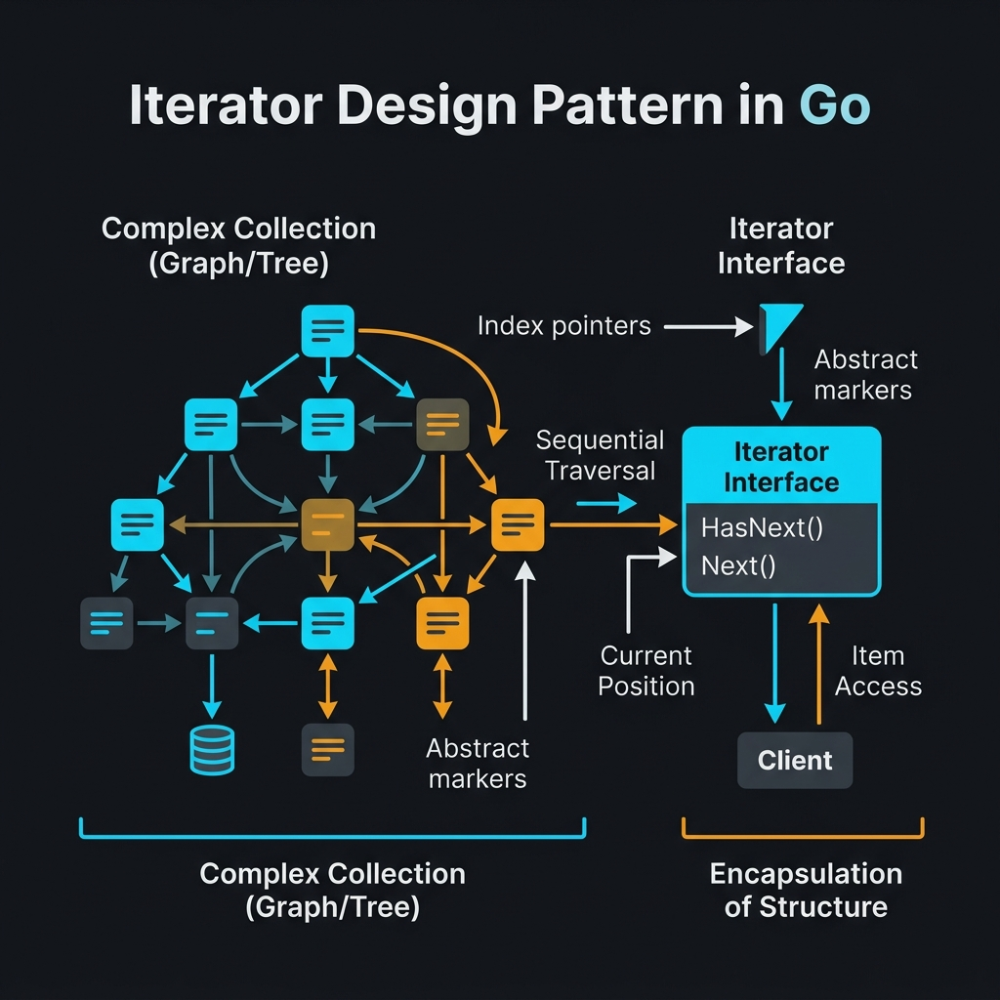
    <div class="concept-img-caption">Hình 6.1: Kiến trúc mô phỏng Iterator Pattern trong Go — Trừu tượng hóa việc duyệt các cấu trúc dữ liệu phức tạp (như cây, đồ thị) qua một giao diện duyệt tuần tự thống nhất</div>
  </div>

  <h3>📝 Example 1 — Tree Iterator (Advanced)</h3>
  <div class="cb">
    <div class="ch"><span class="cl">GO</span><span class="cf">tree_iterator.go</span><span class="cbadge cb-adv">ADVANCED</span></div>
    <pre><span class="cm">// Iterator Pattern: BST in-order traversal
// 3 cách implement: interface, channel, closure</span>

<span class="kw">type</span> <span class="tp">TreeNode</span> <span class="kw">struct</span> {
    Val   <span class="tp">int</span>
    Left, Right *<span class="tp">TreeNode</span>
}

<span class="cm">// Approach 1: Interface-based Iterator (eager — preloads all)</span>
<span class="kw">type</span> <span class="tp">Iterator</span>[T <span class="kw">any</span>] <span class="kw">interface</span> {
    <span class="fn">HasNext</span>() <span class="tp">bool</span>
    <span class="fn">Next</span>() T
    <span class="fn">Reset</span>()
}

<span class="kw">type</span> <span class="tp">BSTIterator</span> <span class="kw">struct</span> {
    nodes []<span class="tp">int</span>
    idx   <span class="tp">int</span>
}

<span class="kw">func</span> <span class="fn">NewBSTIterator</span>(root *<span class="tp">TreeNode</span>) *<span class="tp">BSTIterator</span> {
    it := &<span class="tp">BSTIterator</span>{}
    <span class="kw">var</span> <span class="fn">inorder</span> <span class="kw">func</span>(*<span class="tp">TreeNode</span>)
    <span class="fn">inorder</span> = <span class="kw">func</span>(n *<span class="tp">TreeNode</span>) {
        <span class="kw">if</span> n == <span class="kw">nil</span> { <span class="kw">return</span> }
        <span class="fn">inorder</span>(n.Left)
        it.nodes = <span class="fn">append</span>(it.nodes, n.Val)
        <span class="fn">inorder</span>(n.Right)
    }
    <span class="fn">inorder</span>(root)
    <span class="kw">return</span> it
}
<span class="kw">func</span> (it *<span class="tp">BSTIterator</span>) <span class="fn">HasNext</span>() <span class="tp">bool</span> { <span class="kw">return</span> it.idx < <span class="fn">len</span>(it.nodes) }
<span class="kw">func</span> (it *<span class="tp">BSTIterator</span>) <span class="fn">Next</span>() <span class="tp">int</span>    { v := it.nodes[it.idx]; it.idx++; <span class="kw">return</span> v }
<span class="kw">func</span> (it *<span class="tp">BSTIterator</span>) <span class="fn">Reset</span>()       { it.idx = <span class="num">0</span> }

<span class="cm">// Approach 2: Channel-based Iterator (lazy — Go idiom)
// Nhận từng phần tử qua channel — goroutine traverses tree</span>
<span class="kw">func</span> <span class="fn">BSTChannelIterator</span>(root *<span class="tp">TreeNode</span>) <-<span class="kw">chan</span> <span class="tp">int</span> {
    ch := <span class="kw">make</span>(<span class="kw">chan</span> <span class="tp">int</span>)
    <span class="kw">var</span> <span class="fn">traverse</span> <span class="kw">func</span>(*<span class="tp">TreeNode</span>)
    <span class="fn">traverse</span> = <span class="kw">func</span>(n *<span class="tp">TreeNode</span>) {
        <span class="kw">if</span> n == <span class="kw">nil</span> { <span class="kw">return</span> }
        <span class="fn">traverse</span>(n.Left)
        ch <- n.Val
        <span class="fn">traverse</span>(n.Right)
    }
    <span class="kw">go</span> <span class="kw">func</span>() {
        <span class="kw">defer</span> <span class="kw">close</span>(ch)
        <span class="fn">traverse</span>(root)
    }()
    <span class="kw">return</span> ch
}
<span class="cm">// for val := range BSTChannelIterator(root) { fmt.Println(val) }</span>

<span class="cm">// Approach 3: Lazy stack-based iterator (O(h) space, true O(1) per step)</span>
<span class="kw">type</span> <span class="tp">LazyBSTIter</span> <span class="kw">struct</span>{ stack []*<span class="tp">TreeNode</span> }

<span class="kw">func</span> <span class="fn">NewLazyBSTIter</span>(root *<span class="tp">TreeNode</span>) *<span class="tp">LazyBSTIter</span> {
    it := &<span class="tp">LazyBSTIter</span>{}
    it.<span class="fn">pushLeft</span>(root)
    <span class="kw">return</span> it
}
<span class="kw">func</span> (it *<span class="tp">LazyBSTIter</span>) <span class="fn">pushLeft</span>(n *<span class="tp">TreeNode</span>) {
    <span class="kw">for</span> n != <span class="kw">nil</span> { it.stack = <span class="fn">append</span>(it.stack, n); n = n.Left }
}
<span class="kw">func</span> (it *<span class="tp">LazyBSTIter</span>) <span class="fn">HasNext</span>() <span class="tp">bool</span> { <span class="kw">return</span> <span class="fn">len</span>(it.stack) > <span class="num">0</span> }
<span class="kw">func</span> (it *<span class="tp">LazyBSTIter</span>) <span class="fn">Next</span>() <span class="tp">int</span> {
    top := it.stack[<span class="fn">len</span>(it.stack)-<span class="num">1</span>]
    it.stack = it.stack[:<span class="fn">len</span>(it.stack)-<span class="num">1</span>]
    it.<span class="fn">pushLeft</span>(top.Right) <span class="cm">// push right subtree</span>
    <span class="kw">return</span> top.Val
}
<span class="cm">// Best choice for large trees: O(h) space, true lazy evaluation</span></pre>
  </div>
</section>

<!-- ═══════════════════════════ CHAIN ═══════════════════════════ -->
<section class="page-section" id="s-chain">
  <div class="sec-header">
    <div class="sec-num">07</div>
    <div><div class="sec-title">Chain of Responsibility</div>
    <div class="sec-sub">Pipeline xử lý — mỗi handler quyết định xử lý hoặc pass tiếp</div></div>
    <span class="badge b-adv">BEHAVIORAL</span>
  </div>

  <div class="concept">
    <div class="lbl">💡 Định nghĩa — GoF</div>
    <div class="ttl">Chain of Responsibility — Chuỗi handler linh hoạt</div>
    <p class="prose"><strong>Chain of Responsibility</strong> cho phép pass request qua một <em>chuỗi các handler</em>. Mỗi handler quyết định: <strong>xử lý request</strong> hay <strong>truyền tiếp</strong> cho handler kế tiếp. Sender không biết handler nào sẽ xử lý. Trong Go, pattern này cực kỳ phổ biến trong <strong>HTTP middleware</strong> (<code>net/http</code>, Gin, Echo) và <strong>gRPC interceptors</strong>.</p>
  </div>

  <div class="concept-img-wrapper">
    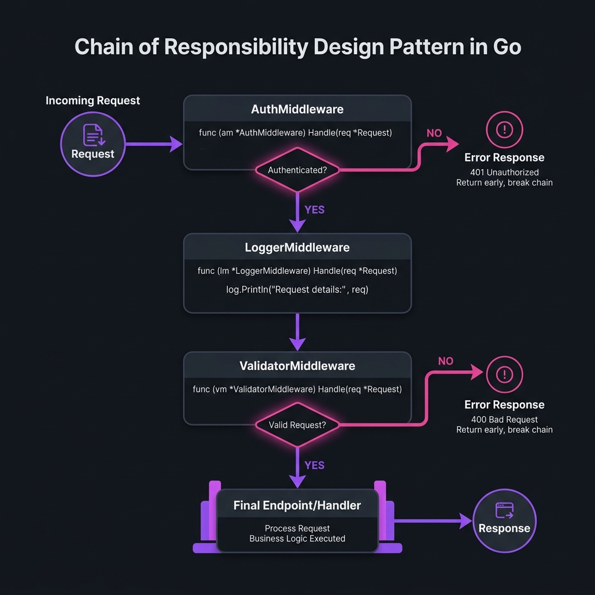
    <div class="concept-img-caption">Hình 7.1: Kiến trúc mô phỏng Chain of Responsibility trong Go — Chuỗi các middleware độc lập quyết định xử lý hoặc chuyển giao yêu cầu, hỗ trợ ngắt chuỗi khi phát hiện lỗi</div>
  </div>

  <div class="diagram">
    <div class="diagram-title">Chain of Responsibility — HTTP Middleware Pipeline</div>
    <svg width="100%" viewBox="0 0 820 180" xmlns="http://www.w3.org/2000/svg" font-family="JetBrains Mono">
      <defs><marker id="chainA" viewBox="0 0 10 10" refX="8" refY="5" markerWidth="5" markerHeight="5" orient="auto"><path d="M2 2L8 5L2 8" fill="none" stroke="#ec4899" stroke-width="1.5" stroke-linecap="round"/></marker></defs>
      <!-- Request flow -->
      <text x="20" y="30" font-size="11" font-weight="700" fill="#ec4899">HTTP Request →</text>
      <!-- Middleware boxes -->
      <rect x="20" y="48" width="120" height="60" rx="7" fill="rgba(236,72,153,0.1)" stroke="rgba(236,72,153,0.4)" stroke-width="1.5"/>
      <text x="80" y="70" text-anchor="middle" font-size="11" font-weight="700" fill="#ec4899">Logger</text>
      <text x="80" y="86" text-anchor="middle" font-size="10" fill="#64748b">log request</text>
      <text x="80" y="100" text-anchor="middle" font-size="10" fill="#ec4899">→ next()</text>

      <line x1="140" y1="78" x2="168" y2="78" stroke="#ec4899" stroke-width="1.5" marker-end="url(#chainA)"/>

      <rect x="170" y="48" width="130" height="60" rx="7" fill="rgba(168,85,247,0.1)" stroke="rgba(168,85,247,0.4)" stroke-width="1.5"/>
      <text x="235" y="70" text-anchor="middle" font-size="11" font-weight="700" fill="#a855f7">AuthMiddleware</text>
      <text x="235" y="86" text-anchor="middle" font-size="10" fill="#64748b">validate JWT</text>
      <text x="235" y="100" text-anchor="middle" font-size="10" fill="#a855f7">→ next() or 401</text>

      <line x1="300" y1="78" x2="328" y2="78" stroke="#ec4899" stroke-width="1.5" marker-end="url(#chainA)"/>

      <rect x="330" y="48" width="130" height="60" rx="7" fill="rgba(245,158,11,0.1)" stroke="rgba(245,158,11,0.4)" stroke-width="1.5"/>
      <text x="395" y="70" text-anchor="middle" font-size="11" font-weight="700" fill="#f59e0b">RateLimiter</text>
      <text x="395" y="86" text-anchor="middle" font-size="10" fill="#64748b">check quota</text>
      <text x="395" y="100" text-anchor="middle" font-size="10" fill="#f59e0b">→ next() or 429</text>

      <line x1="460" y1="78" x2="488" y2="78" stroke="#ec4899" stroke-width="1.5" marker-end="url(#chainA)"/>

      <rect x="490" y="48" width="130" height="60" rx="7" fill="rgba(0,255,136,0.08)" stroke="rgba(0,255,136,0.35)" stroke-width="1.5"/>
      <text x="555" y="70" text-anchor="middle" font-size="11" font-weight="700" fill="#00ff88">Validator</text>
      <text x="555" y="86" text-anchor="middle" font-size="10" fill="#64748b">validate body</text>
      <text x="555" y="100" text-anchor="middle" font-size="10" fill="#00ff88">→ next() or 400</text>

      <line x1="620" y1="78" x2="648" y2="78" stroke="#ec4899" stroke-width="1.5" marker-end="url(#chainA)"/>

      <rect x="650" y="48" width="130" height="60" rx="7" fill="rgba(59,130,246,0.1)" stroke="rgba(59,130,246,0.4)" stroke-width="1.5"/>
      <text x="715" y="70" text-anchor="middle" font-size="11" font-weight="700" fill="#3b82f6">Handler</text>
      <text x="715" y="86" text-anchor="middle" font-size="10" fill="#64748b">business logic</text>
      <text x="715" y="100" text-anchor="middle" font-size="10" fill="#3b82f6">→ response</text>

      <!-- Short-circuit note -->
      <text x="235" y="135" text-anchor="middle" font-size="11" fill="#ff6b6b">↑ 401 Unauthorized</text>
      <path d="M235 126 L235 108" fill="none" stroke="#ff6b6b" stroke-width="1" stroke-dasharray="3,2"/>
      <text x="395" y="148" text-anchor="middle" font-size="11" fill="#f59e0b">↑ 429 Too Many Requests</text>
      <path d="M395 140 L395 108" fill="none" stroke="#f59e0b" stroke-width="1" stroke-dasharray="3,2"/>
    </svg>
  </div>

  <h3>📝 Example 1 — HTTP Middleware Chain (Advanced)</h3>
  <div class="cb">
    <div class="ch"><span class="cl">GO</span><span class="cf">middleware_chain.go</span><span class="cbadge cb-adv">ADVANCED</span></div>
    <pre><span class="cm">// Chain of Responsibility: HTTP Middleware
// Go-idiomatic: func(http.Handler) http.Handler pattern</span>

<span class="kw">type</span> <span class="tp">Middleware</span> <span class="kw">func</span>(<span class="pkg">http</span>.<span class="tp">Handler</span>) <span class="pkg">http</span>.<span class="tp">Handler</span>

<span class="cm">// Chain: compose middlewares left-to-right</span>
<span class="kw">func</span> <span class="fn">Chain</span>(h <span class="pkg">http</span>.<span class="tp">Handler</span>, mws ...<span class="tp">Middleware</span>) <span class="pkg">http</span>.<span class="tp">Handler</span> {
    <span class="kw">for</span> i := <span class="fn">len</span>(mws) - <span class="num">1</span>; i >= <span class="num">0</span>; i-- {
        h = mws[i](h)
    }
    <span class="kw">return</span> h
}

<span class="cm">// Logger middleware</span>
<span class="kw">func</span> <span class="fn">LoggerMiddleware</span>(logger *<span class="pkg">slog</span>.<span class="tp">Logger</span>) <span class="tp">Middleware</span> {
    <span class="kw">return</span> <span class="kw">func</span>(next <span class="pkg">http</span>.<span class="tp">Handler</span>) <span class="pkg">http</span>.<span class="tp">Handler</span> {
        <span class="kw">return</span> <span class="pkg">http</span>.<span class="fn">HandlerFunc</span>(<span class="kw">func</span>(w <span class="pkg">http</span>.<span class="tp">ResponseWriter</span>, r *<span class="pkg">http</span>.<span class="tp">Request</span>) {
            start := <span class="pkg">time</span>.<span class="fn">Now</span>()
            rw := &<span class="tp">responseWriter</span>{ResponseWriter: w}
            next.<span class="fn">ServeHTTP</span>(rw, r)
            logger.<span class="fn">Info</span>(<span class="str">"request"</span>,
                <span class="str">"method"</span>, r.Method, <span class="str">"path"</span>, r.URL.Path,
                <span class="str">"status"</span>, rw.status, <span class="str">"dur"</span>, <span class="pkg">time</span>.<span class="fn">Since</span>(start),
            )
        })
    }
}

<span class="cm">// Auth middleware: validate Bearer token</span>
<span class="kw">func</span> <span class="fn">AuthMiddleware</span>(validate <span class="kw">func</span>(<span class="tp">string</span>) (<span class="tp">string</span>, <span class="tp">error</span>)) <span class="tp">Middleware</span> {
    <span class="kw">return</span> <span class="kw">func</span>(next <span class="pkg">http</span>.<span class="tp">Handler</span>) <span class="pkg">http</span>.<span class="tp">Handler</span> {
        <span class="kw">return</span> <span class="pkg">http</span>.<span class="fn">HandlerFunc</span>(<span class="kw">func</span>(w <span class="pkg">http</span>.<span class="tp">ResponseWriter</span>, r *<span class="pkg">http</span>.<span class="tp">Request</span>) {
            token := <span class="pkg">strings</span>.<span class="fn">TrimPrefix</span>(r.Header.<span class="fn">Get</span>(<span class="str">"Authorization"</span>), <span class="str">"Bearer "</span>)
            userID, err := <span class="fn">validate</span>(token)
            <span class="kw">if</span> err != <span class="kw">nil</span> {
                <span class="pkg">http</span>.<span class="fn">Error</span>(w, <span class="str">"Unauthorized"</span>, <span class="pkg">http</span>.<span class="tp">StatusUnauthorized</span>)
                <span class="kw">return</span> <span class="cm">// short-circuit chain</span>
            }
            ctx := <span class="pkg">context</span>.<span class="fn">WithValue</span>(r.Context(), <span class="str">"userID"</span>, userID)
            next.<span class="fn">ServeHTTP</span>(w, r.<span class="fn">WithContext</span>(ctx))
        })
    }
}

<span class="cm">// RateLimit middleware</span>
<span class="kw">func</span> <span class="fn">RateLimitMiddleware</span>(rps <span class="tp">int</span>) <span class="tp">Middleware</span> {
    limiter := <span class="pkg">rate</span>.<span class="fn">NewLimiter</span>(<span class="pkg">rate</span>.<span class="fn">Limit</span>(rps), rps)
    <span class="kw">return</span> <span class="kw">func</span>(next <span class="pkg">http</span>.<span class="tp">Handler</span>) <span class="pkg">http</span>.<span class="tp">Handler</span> {
        <span class="kw">return</span> <span class="pkg">http</span>.<span class="fn">HandlerFunc</span>(<span class="kw">func</span>(w <span class="pkg">http</span>.<span class="tp">ResponseWriter</span>, r *<span class="pkg">http</span>.<span class="tp">Request</span>) {
            <span class="kw">if</span> !limiter.<span class="fn">Allow</span>() {
                <span class="pkg">http</span>.<span class="fn">Error</span>(w, <span class="str">"Too Many Requests"</span>, <span class="pkg">http</span>.<span class="tp">StatusTooManyRequests</span>)
                <span class="kw">return</span>
            }
            next.<span class="fn">ServeHTTP</span>(w, r)
        })
    }
}

<span class="cm">// Usage:</span>
<span class="cm">// handler := Chain(myHandler, LoggerMiddleware(logger), AuthMiddleware(validate), RateLimitMiddleware(100))</span>
<span class="cm">// http.ListenAndServe(":8080", handler)</span>

<span class="kw">type</span> <span class="tp">responseWriter</span> <span class="kw">struct</span> {
    <span class="pkg">http</span>.<span class="tp">ResponseWriter</span>
    status <span class="tp">int</span>
}
<span class="kw">func</span> (rw *<span class="tp">responseWriter</span>) <span class="fn">WriteHeader</span>(s <span class="tp">int</span>) {
    rw.status = s; rw.ResponseWriter.<span class="fn">WriteHeader</span>(s)
}</pre>
  </div>

  <h3>📝 Example 2 — Validation Chain (Expert)</h3>
  <div class="cb">
    <div class="ch"><span class="cl">GO</span><span class="cf">validation_chain.go</span><span class="cbadge cb-exp">EXPERT</span></div>
    <pre><span class="cm">// Chain of Responsibility: Domain validation pipeline
// Mỗi validator là 1 handler, collect all errors (không short-circuit)</span>

<span class="kw">type</span> <span class="tp">ValidationError</span> <span class="kw">struct</span> {
    Field   <span class="tp">string</span>
    Message <span class="tp">string</span>
}

<span class="kw">type</span> <span class="tp">ValidationResult</span> <span class="kw">struct</span> {
    Errors []<span class="tp">ValidationError</span>
}
<span class="kw">func</span> (r *<span class="tp">ValidationResult</span>) <span class="fn">IsValid</span>() <span class="tp">bool</span> { <span class="kw">return</span> <span class="fn">len</span>(r.Errors) == <span class="num">0</span> }

<span class="kw">type</span> <span class="tp">Validator</span>[T <span class="kw">any</span>] <span class="kw">interface</span> {
    <span class="fn">Validate</span>(input T, result *<span class="tp">ValidationResult</span>)
    <span class="fn">SetNext</span>(v <span class="tp">Validator</span>[T]) <span class="tp">Validator</span>[T]
}

<span class="cm">// BaseValidator: mixin for chaining</span>
<span class="kw">type</span> <span class="tp">BaseValidator</span>[T <span class="kw">any</span>] <span class="kw">struct</span>{ next <span class="tp">Validator</span>[T] }

<span class="kw">func</span> (b *<span class="tp">BaseValidator</span>[T]) <span class="fn">SetNext</span>(v <span class="tp">Validator</span>[T]) <span class="tp">Validator</span>[T] { b.next = v; <span class="kw">return</span> v }
<span class="kw">func</span> (b *<span class="tp">BaseValidator</span>[T]) <span class="fn">Next</span>(input T, r *<span class="tp">ValidationResult</span>) {
    <span class="kw">if</span> b.next != <span class="kw">nil</span> { b.next.<span class="fn">Validate</span>(input, r) }
}

<span class="cm">// RegisterInput domain type</span>
<span class="kw">type</span> <span class="tp">RegisterInput</span> <span class="kw">struct</span>{ Email, Password, Name <span class="tp">string</span>; Age <span class="tp">int</span> }

<span class="cm">// EmailValidator</span>
<span class="kw">type</span> <span class="tp">EmailValidator</span> <span class="kw">struct</span>{ <span class="tp">BaseValidator</span>[<span class="tp">RegisterInput</span>] }
<span class="kw">func</span> (v *<span class="tp">EmailValidator</span>) <span class="fn">Validate</span>(in <span class="tp">RegisterInput</span>, r *<span class="tp">ValidationResult</span>) {
    <span class="kw">if</span> !<span class="pkg">strings</span>.<span class="fn">Contains</span>(in.Email, <span class="str">"@"</span>) {
        r.Errors = <span class="fn">append</span>(r.Errors, <span class="tp">ValidationError</span>{<span class="str">"email"</span>, <span class="str">"invalid email format"</span>})
    }
    v.<span class="fn">Next</span>(in, r) <span class="cm">// always continue to collect all errors</span>
}

<span class="cm">// PasswordValidator</span>
<span class="kw">type</span> <span class="tp">PasswordValidator</span> <span class="kw">struct</span>{ <span class="tp">BaseValidator</span>[<span class="tp">RegisterInput</span>] }
<span class="kw">func</span> (v *<span class="tp">PasswordValidator</span>) <span class="fn">Validate</span>(in <span class="tp">RegisterInput</span>, r *<span class="tp">ValidationResult</span>) {
    <span class="kw">if</span> <span class="fn">len</span>(in.Password) < <span class="num">8</span> {
        r.Errors = <span class="fn">append</span>(r.Errors, <span class="tp">ValidationError</span>{<span class="str">"password"</span>, <span class="str">"min 8 chars"</span>})
    }
    v.<span class="fn">Next</span>(in, r)
}

<span class="cm">// AgeValidator</span>
<span class="kw">type</span> <span class="tp">AgeValidator</span> <span class="kw">struct</span>{ <span class="tp">BaseValidator</span>[<span class="tp">RegisterInput</span>] }
<span class="kw">func</span> (v *<span class="tp">AgeValidator</span>) <span class="fn">Validate</span>(in <span class="tp">RegisterInput</span>, r *<span class="tp">ValidationResult</span>) {
    <span class="kw">if</span> in.Age < <span class="num">18</span> { r.Errors = <span class="fn">append</span>(r.Errors, <span class="tp">ValidationError</span>{<span class="str">"age"</span>, <span class="str">"must be 18+"</span>}) }
    v.<span class="fn">Next</span>(in, r)
}

<span class="cm">// Build chain</span>
<span class="kw">func</span> <span class="fn">BuildValidatorChain</span>() <span class="tp">Validator</span>[<span class="tp">RegisterInput</span>] {
    email := &<span class="tp">EmailValidator</span>{}
    email.<span class="fn">SetNext</span>(&<span class="tp">PasswordValidator</span>{}).(<span class="tp">Validator</span>[<span class="tp">RegisterInput</span>]).<span class="fn">SetNext</span>(&<span class="tp">AgeValidator</span>{})
    <span class="kw">return</span> email
}
<span class="cm">// result := &ValidationResult{}</span>
<span class="cm">// BuildValidatorChain().Validate(input, result)</span>
<span class="cm">// if !result.IsValid() { return result.Errors }</span></pre>
  </div>
</section>

<!-- ═══════════════════════════ MEDIATOR ═══════════════════════════ -->
<section class="page-section" id="s-mediator">
  <div class="sec-header">
    <div class="sec-num">08</div>
    <div><div class="sec-title">Mediator Pattern</div>
    <div class="sec-sub">Trung gian điều phối — giảm coupling giữa nhiều object</div></div>
    <span class="badge b-adv">BEHAVIORAL</span>
  </div>

  <div class="concept">
    <div class="lbl">💡 Định nghĩa — GoF</div>
    <div class="ttl">Mediator — Tập trung communication vào 1 object</div>
    <p class="prose"><strong>Mediator</strong> định nghĩa một object <em>đóng vai trung gian</em> cho việc giao tiếp giữa các object khác, tránh các object tham chiếu trực tiếp lẫn nhau. Kết quả là <strong>giảm coupling</strong> từ O(n²) kết nối xuống O(n). Ví dụ thực tế: Chat room, Air traffic controller, Event broker, Form validation controller.</p>
  </div>

  <div class="concept-img-wrapper">
    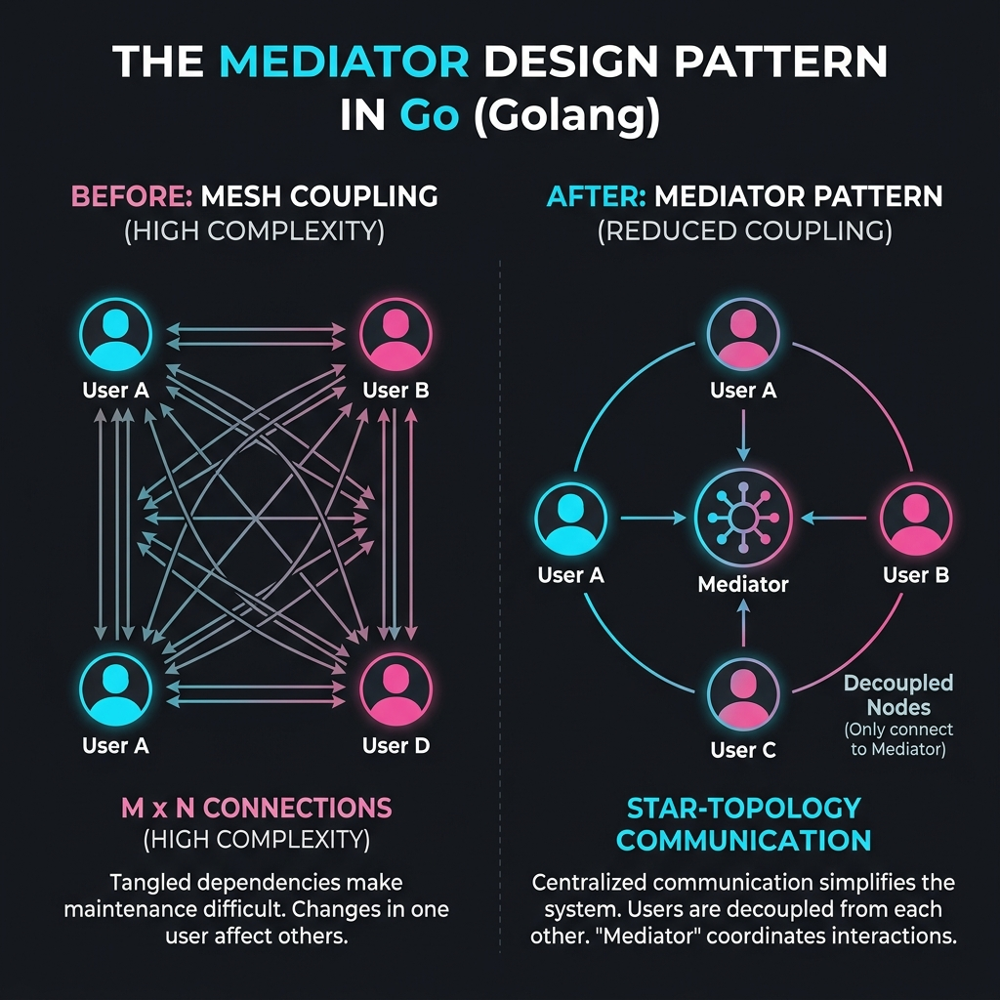
    <div class="concept-img-caption">Hình 8.1: Kiến trúc mô phỏng Mediator Pattern trong Go — Điều hướng toàn bộ giao tiếp qua một trung gian điều phối để giảm thiểu mức độ liên kết chặt chẽ (mesh coupling) giữa các thành phần</div>
  </div>

  <div class="diagram">
    <div class="diagram-title">Mediator vs Direct Communication — Coupling Reduction</div>
    <svg width="100%" viewBox="0 0 820 220" xmlns="http://www.w3.org/2000/svg" font-family="JetBrains Mono">
      <!-- Without mediator -->
      <text x="120" y="22" text-anchor="middle" font-size="11" font-weight="700" fill="#ff6b6b">Without Mediator (O(n²) links)</text>
      <circle cx="120" cy="60" r="18" fill="rgba(255,107,107,0.12)" stroke="rgba(255,107,107,0.4)" stroke-width="1.5"/>
      <text x="120" y="65" text-anchor="middle" font-size="11" fill="#ff6b6b">A</text>
      <circle cx="60" cy="130" r="18" fill="rgba(255,107,107,0.12)" stroke="rgba(255,107,107,0.4)" stroke-width="1.5"/>
      <text x="60" y="135" text-anchor="middle" font-size="11" fill="#ff6b6b">B</text>
      <circle cx="180" cy="130" r="18" fill="rgba(255,107,107,0.12)" stroke="rgba(255,107,107,0.4)" stroke-width="1.5"/>
      <text x="180" y="135" text-anchor="middle" font-size="11" fill="#ff6b6b">C</text>
      <circle cx="60" cy="190" r="18" fill="rgba(255,107,107,0.12)" stroke="rgba(255,107,107,0.4)" stroke-width="1.5"/>
      <text x="60" y="195" text-anchor="middle" font-size="11" fill="#ff6b6b">D</text>
      <circle cx="180" cy="190" r="18" fill="rgba(255,107,107,0.12)" stroke="rgba(255,107,107,0.4)" stroke-width="1.5"/>
      <text x="180" y="195" text-anchor="middle" font-size="11" fill="#ff6b6b">E</text>
      <!-- All connected -->
      <line x1="120" y1="78" x2="68" y2="114" stroke="#ff6b6b" stroke-width="1" stroke-dasharray="3,2"/>
      <line x1="120" y1="78" x2="172" y2="114" stroke="#ff6b6b" stroke-width="1" stroke-dasharray="3,2"/>
      <line x1="78" y1="130" x2="162" y2="130" stroke="#ff6b6b" stroke-width="1" stroke-dasharray="3,2"/>
      <line x1="78" y1="145" x2="162" y2="175" stroke="#ff6b6b" stroke-width="1" stroke-dasharray="3,2"/>
      <line x1="60" y1="148" x2="60" y2="172" stroke="#ff6b6b" stroke-width="1" stroke-dasharray="3,2"/>
      <line x1="180" y1="148" x2="180" y2="172" stroke="#ff6b6b" stroke-width="1" stroke-dasharray="3,2"/>
      <line x1="78" y1="183" x2="162" y2="183" stroke="#ff6b6b" stroke-width="1" stroke-dasharray="3,2"/>
      <text x="120" y="216" text-anchor="middle" font-size="10" fill="#ff6b6b">10 connections!</text>

      <!-- Arrow -->
      <text x="280" y="120" font-size="24" fill="#64748b">→</text>

      <!-- With mediator -->
      <text x="570" y="22" text-anchor="middle" font-size="11" font-weight="700" fill="#2dd4bf">With Mediator (O(n) links)</text>
      <!-- Mediator center -->
      <circle cx="570" cy="120" r="30" fill="rgba(45,212,191,0.15)" stroke="rgba(45,212,191,0.5)" stroke-width="2"/>
      <text x="570" y="116" text-anchor="middle" font-size="11" font-weight="700" fill="#2dd4bf">Mediator</text>
      <text x="570" y="130" text-anchor="middle" font-size="10" fill="#64748b">broker</text>

      <circle cx="490" cy="50" r="16" fill="rgba(0,255,136,0.1)" stroke="rgba(0,255,136,0.35)" stroke-width="1.3"/>
      <text x="490" y="55" text-anchor="middle" font-size="11" fill="#00ff88">A</text>
      <circle cx="650" cy="50" r="16" fill="rgba(0,255,136,0.1)" stroke="rgba(0,255,136,0.35)" stroke-width="1.3"/>
      <text x="650" y="55" text-anchor="middle" font-size="11" fill="#00ff88">B</text>
      <circle cx="460" cy="140" r="16" fill="rgba(0,255,136,0.1)" stroke="rgba(0,255,136,0.35)" stroke-width="1.3"/>
      <text x="460" y="145" text-anchor="middle" font-size="11" fill="#00ff88">C</text>
      <circle cx="680" cy="140" r="16" fill="rgba(0,255,136,0.1)" stroke="rgba(0,255,136,0.35)" stroke-width="1.3"/>
      <text x="680" y="145" text-anchor="middle" font-size="11" fill="#00ff88">D</text>
      <circle cx="570" cy="200" r="16" fill="rgba(0,255,136,0.1)" stroke="rgba(0,255,136,0.35)" stroke-width="1.3"/>
      <text x="570" y="205" text-anchor="middle" font-size="11" fill="#00ff88">E</text>
      <!-- All to mediator only -->
      <line x1="500" y1="62" x2="546" y2="95" stroke="#2dd4bf" stroke-width="1.2"/>
      <line x1="640" y1="62" x2="594" y2="95" stroke="#2dd4bf" stroke-width="1.2"/>
      <line x1="474" y1="138" x2="542" y2="125" stroke="#2dd4bf" stroke-width="1.2"/>
      <line x1="664" y1="138" x2="598" y2="125" stroke="#2dd4bf" stroke-width="1.2"/>
      <line x1="570" y1="184" x2="570" y2="150" stroke="#2dd4bf" stroke-width="1.2"/>
      <text x="570" y="218" text-anchor="middle" font-size="10" fill="#2dd4bf">5 connections only</text>
    </svg>
  </div>

  <h3>📝 Example — Chat Room Mediator (Expert)</h3>
  <div class="cb">
    <div class="ch"><span class="cl">GO</span><span class="cf">chat_room.go</span><span class="cbadge cb-exp">EXPERT</span></div>
    <pre><span class="cm">// Mediator Pattern: Chat Room
// Users không communicate trực tiếp — tất cả qua ChatRoom (mediator)</span>

<span class="kw">type</span> <span class="tp">ChatMediator</span> <span class="kw">interface</span> {
    <span class="fn">SendMessage</span>(from <span class="tp">User</span>, msg <span class="tp">string</span>, to ...<span class="tp">string</span>) <span class="cm">// broadcast or DM</span>
    <span class="fn">Join</span>(user <span class="tp">User</span>)
    <span class="fn">Leave</span>(userID <span class="tp">string</span>)
}

<span class="kw">type</span> <span class="tp">User</span> <span class="kw">interface</span> {
    <span class="fn">ID</span>() <span class="tp">string</span>
    <span class="fn">Receive</span>(from, msg <span class="tp">string</span>)
}

<span class="kw">type</span> <span class="tp">ChatRoom</span> <span class="kw">struct</span> {
    mu      <span class="pkg">sync</span>.<span class="tp">RWMutex</span>
    users   <span class="kw">map</span>[<span class="tp">string</span>]<span class="tp">User</span>
    history []<span class="tp">string</span>
}

<span class="kw">func</span> <span class="fn">NewChatRoom</span>() *<span class="tp">ChatRoom</span> {
    <span class="kw">return</span> &<span class="tp">ChatRoom</span>{users: <span class="kw">make</span>(<span class="kw">map</span>[<span class="tp">string</span>]<span class="tp">User</span>)}
}

<span class="kw">func</span> (cr *<span class="tp">ChatRoom</span>) <span class="fn">Join</span>(u <span class="tp">User</span>) {
    cr.mu.<span class="fn">Lock</span>(); cr.users[u.<span class="fn">ID</span>()] = u; cr.mu.<span class="fn">Unlock</span>()
    cr.<span class="fn">SendMessage</span>(u, <span class="pkg">fmt</span>.<span class="fn">Sprintf</span>(<span class="str">"%s joined the room"</span>, u.<span class="fn">ID</span>()))
}

<span class="kw">func</span> (cr *<span class="tp">ChatRoom</span>) <span class="fn">Leave</span>(id <span class="tp">string</span>) {
    cr.mu.<span class="fn">Lock</span>(); <span class="kw">delete</span>(cr.users, id); cr.mu.<span class="fn">Unlock</span>()
    <span class="pkg">log</span>.<span class="fn">Printf</span>(<span class="str">"%s left"</span>, id)
}

<span class="kw">func</span> (cr *<span class="tp">ChatRoom</span>) <span class="fn">SendMessage</span>(from <span class="tp">User</span>, msg <span class="tp">string</span>, to ...<span class="tp">string</span>) {
    entry := <span class="pkg">fmt</span>.<span class="fn">Sprintf</span>(<span class="str">"[%s] %s: %s"</span>, <span class="pkg">time</span>.<span class="fn">Now</span>().<span class="fn">Format</span>(<span class="str">"15:04"</span>), from.<span class="fn">ID</span>(), msg)
    cr.mu.<span class="fn">Lock</span>()
    cr.history = <span class="fn">append</span>(cr.history, entry)
    cr.mu.<span class="fn">Unlock</span>()

    cr.mu.<span class="fn">RLock</span>(); <span class="kw">defer</span> cr.mu.<span class="fn">RUnlock</span>()

    <span class="kw">if</span> <span class="fn">len</span>(to) == <span class="num">0</span> { <span class="cm">// broadcast</span>
        <span class="kw">for</span> _, u := <span class="kw">range</span> cr.users {
            <span class="kw">if</span> u.<span class="fn">ID</span>() != from.<span class="fn">ID</span>() { u.<span class="fn">Receive</span>(from.<span class="fn">ID</span>(), msg) }
        }
        <span class="kw">return</span>
    }
    <span class="kw">for</span> _, id := <span class="kw">range</span> to { <span class="cm">// direct message</span>
        <span class="kw">if</span> u, ok := cr.users[id]; ok { u.<span class="fn">Receive</span>(from.<span class="fn">ID</span>(), msg) }
    }
}

<span class="cm">// Concrete User: BotUser</span>
<span class="kw">type</span> <span class="tp">BotUser</span> <span class="kw">struct</span> {
    id       <span class="tp">string</span>
    room     <span class="tp">ChatMediator</span>
    onMsg    <span class="kw">func</span>(from, msg <span class="tp">string</span>) <span class="tp">string</span> <span class="cm">// reply generator</span>
}
<span class="kw">func</span> (b *<span class="tp">BotUser</span>) <span class="fn">ID</span>() <span class="tp">string</span> { <span class="kw">return</span> b.id }
<span class="kw">func</span> (b *<span class="tp">BotUser</span>) <span class="fn">Receive</span>(from, msg <span class="tp">string</span>) {
    <span class="kw">if</span> reply := b.<span class="fn">onMsg</span>(from, msg); reply != <span class="str">""</span> {
        b.room.<span class="fn">SendMessage</span>(b, reply, from) <span class="cm">// reply to sender</span>
    }
}

<span class="cm">// Concrete User: HumanUser (simulated)</span>
<span class="kw">type</span> <span class="tp">HumanUser</span> <span class="kw">struct</span>{
    id   <span class="tp">string</span>
    room <span class="tp">ChatMediator</span>
    inbox []<span class="tp">string</span>
}
<span class="kw">func</span> (h *<span class="tp">HumanUser</span>) <span class="fn">ID</span>() <span class="tp">string</span> { <span class="kw">return</span> h.id }
<span class="kw">func</span> (h *<span class="tp">HumanUser</span>) <span class="fn">Receive</span>(from, msg <span class="tp">string</span>) {
    h.inbox = <span class="fn">append</span>(h.inbox, <span class="pkg">fmt</span>.<span class="fn">Sprintf</span>(<span class="str">"%s: %s"</span>, from, msg))
}
<span class="kw">func</span> (h *<span class="tp">HumanUser</span>) <span class="fn">Say</span>(msg <span class="tp">string</span>) { h.room.<span class="fn">SendMessage</span>(h, msg) }</pre>
  </div>
</section>

<!-- ═══════════════════════════ MEMENTO ═══════════════════════════ -->
<section class="page-section" id="s-memento">
  <div class="sec-header">
    <div class="sec-num">09</div>
    <div><div class="sec-title">Memento Pattern</div>
    <div class="sec-sub">Capture &amp; restore state — undo/redo, snapshot, checkpoint</div></div>
    <span class="badge b-adv">BEHAVIORAL</span>
  </div>

  <div class="concept">
    <div class="lbl">💡 Định nghĩa — GoF</div>
    <div class="ttl">Memento — Lưu trữ state mà không vi phạm encapsulation</div>
    <p class="prose"><strong>Memento</strong> capture và externalize state nội tại của một object để có thể <em>restore về state đó sau này</em>, mà không vi phạm encapsulation. Ba thành phần: <strong>Originator</strong> (object cần save/restore state), <strong>Memento</strong> (immutable snapshot of state), <strong>Caretaker</strong> (quản lý lịch sử memento). Dùng cho: Text editor undo, Game save point, Database transaction rollback, Config snapshot.</p>
  </div>

  <div class="concept-img-wrapper">
    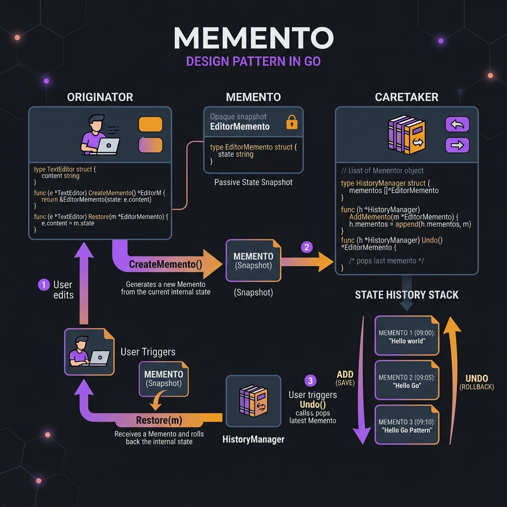
    <div class="concept-img-caption">Hình 9.1: Kiến trúc mô phỏng Memento Pattern trong Go — Chụp lại trạng thái tại từng thời điểm làm snapshot bất biến (Memento) để hỗ trợ tính năng quay lui trạng thái (Undo/Redo)</div>
  </div>

  <h3>📝 Example — Config Snapshot &amp; Rollback (Expert)</h3>
  <div class="cb">
    <div class="ch"><span class="cl">GO</span><span class="cf">config_memento.go</span><span class="cbadge cb-exp">EXPERT</span></div>
    <pre><span class="cm">// Memento Pattern: Application Config với snapshot/rollback
// Originator: AppConfig  Memento: ConfigSnapshot  Caretaker: ConfigHistory</span>

<span class="cm">// Memento — immutable snapshot (không export fields)</span>
<span class="kw">type</span> <span class="tp">ConfigSnapshot</span> <span class="kw">struct</span> {
    data      <span class="kw">map</span>[<span class="tp">string</span>]<span class="kw">any</span>
    createdAt <span class="tp">time.Time</span>
    label     <span class="tp">string</span>
}
<span class="kw">func</span> (s *<span class="tp">ConfigSnapshot</span>) <span class="fn">Label</span>() <span class="tp">string</span>    { <span class="kw">return</span> s.label }
<span class="kw">func</span> (s *<span class="tp">ConfigSnapshot</span>) <span class="fn">CreatedAt</span>() <span class="tp">time.Time</span> { <span class="kw">return</span> s.createdAt }

<span class="cm">// Originator: AppConfig</span>
<span class="kw">type</span> <span class="tp">AppConfig</span> <span class="kw">struct</span> {
    mu   <span class="pkg">sync</span>.<span class="tp">RWMutex</span>
    data <span class="kw">map</span>[<span class="tp">string</span>]<span class="kw">any</span>
}

<span class="kw">func</span> <span class="fn">NewAppConfig</span>() *<span class="tp">AppConfig</span> {
    <span class="kw">return</span> &<span class="tp">AppConfig</span>{data: <span class="kw">map</span>[<span class="tp">string</span>]<span class="kw">any</span>{
        <span class="str">"debug"</span>: <span class="kw">false</span>, <span class="str">"port"</span>: <span class="num">8080</span>, <span class="str">"timeout"</span>: <span class="num">30</span>,
    }}
}

<span class="kw">func</span> (c *<span class="tp">AppConfig</span>) <span class="fn">Set</span>(key <span class="tp">string</span>, val <span class="kw">any</span>) {
    c.mu.<span class="fn">Lock</span>(); <span class="kw">defer</span> c.mu.<span class="fn">Unlock</span>()
    c.data[key] = val
}

<span class="kw">func</span> (c *<span class="tp">AppConfig</span>) <span class="fn">Get</span>(key <span class="tp">string</span>) (<span class="kw">any</span>, <span class="tp">bool</span>) {
    c.mu.<span class="fn">RLock</span>(); <span class="kw">defer</span> c.mu.<span class="fn">RUnlock</span>()
    v, ok := c.data[key]; <span class="kw">return</span> v, ok
}

<span class="cm">// Save: tạo snapshot — deep copy để tránh aliasing</span>
<span class="kw">func</span> (c *<span class="tp">AppConfig</span>) <span class="fn">Save</span>(label <span class="tp">string</span>) *<span class="tp">ConfigSnapshot</span> {
    c.mu.<span class="fn">RLock</span>(); <span class="kw">defer</span> c.mu.<span class="fn">RUnlock</span>()
    snap := <span class="kw">make</span>(<span class="kw">map</span>[<span class="tp">string</span>]<span class="kw">any</span>, <span class="fn">len</span>(c.data))
    <span class="kw">for</span> k, v := <span class="kw">range</span> c.data { snap[k] = v }
    <span class="kw">return</span> &<span class="tp">ConfigSnapshot</span>{data: snap, createdAt: <span class="pkg">time</span>.<span class="fn">Now</span>(), label: label}
}

<span class="cm">// Restore: apply snapshot state</span>
<span class="kw">func</span> (c *<span class="tp">AppConfig</span>) <span class="fn">Restore</span>(s *<span class="tp">ConfigSnapshot</span>) {
    c.mu.<span class="fn">Lock</span>(); <span class="kw">defer</span> c.mu.<span class="fn">Unlock</span>()
    c.data = <span class="kw">make</span>(<span class="kw">map</span>[<span class="tp">string</span>]<span class="kw">any</span>, <span class="fn">len</span>(s.data))
    <span class="kw">for</span> k, v := <span class="kw">range</span> s.data { c.data[k] = v }
}

<span class="cm">// Caretaker: manages snapshot history</span>
<span class="kw">type</span> <span class="tp">ConfigHistory</span> <span class="kw">struct</span> {
    config   *<span class="tp">AppConfig</span>
    snapshots []*<span class="tp">ConfigSnapshot</span>
    cursor    <span class="tp">int</span>
}

<span class="kw">func</span> <span class="fn">NewConfigHistory</span>(c *<span class="tp">AppConfig</span>) *<span class="tp">ConfigHistory</span> {
    h := &<span class="tp">ConfigHistory</span>{config: c, cursor: -<span class="num">1</span>}
    h.<span class="fn">Checkpoint</span>(<span class="str">"initial"</span>)
    <span class="kw">return</span> h
}

<span class="kw">func</span> (h *<span class="tp">ConfigHistory</span>) <span class="fn">Checkpoint</span>(label <span class="tp">string</span>) {
    <span class="cm">// Discard future snapshots if we branched</span>
    h.snapshots = h.snapshots[:h.cursor+<span class="num">1</span>]
    h.snapshots = <span class="fn">append</span>(h.snapshots, h.config.<span class="fn">Save</span>(label))
    h.cursor = <span class="fn">len</span>(h.snapshots) - <span class="num">1</span>
}

<span class="kw">func</span> (h *<span class="tp">ConfigHistory</span>) <span class="fn">Undo</span>() <span class="tp">bool</span> {
    <span class="kw">if</span> h.cursor <= <span class="num">0</span> { <span class="kw">return</span> <span class="kw">false</span> }
    h.cursor--
    h.config.<span class="fn">Restore</span>(h.snapshots[h.cursor])
    <span class="kw">return</span> <span class="kw">true</span>
}

<span class="kw">func</span> (h *<span class="tp">ConfigHistory</span>) <span class="fn">Redo</span>() <span class="tp">bool</span> {
    <span class="kw">if</span> h.cursor >= <span class="fn">len</span>(h.snapshots)-<span class="num">1</span> { <span class="kw">return</span> <span class="kw">false</span> }
    h.cursor++
    h.config.<span class="fn">Restore</span>(h.snapshots[h.cursor])
    <span class="kw">return</span> <span class="kw">true</span>
}

<span class="kw">func</span> (h *<span class="tp">ConfigHistory</span>) <span class="fn">Timeline</span>() []<span class="tp">string</span> {
    out := <span class="kw">make</span>([]<span class="tp">string</span>, <span class="fn">len</span>(h.snapshots))
    <span class="kw">for</span> i, s := <span class="kw">range</span> h.snapshots {
        mark := <span class="str">" "</span>
        <span class="kw">if</span> i == h.cursor { mark = <span class="str">"→"</span> }
        out[i] = <span class="pkg">fmt</span>.<span class="fn">Sprintf</span>(<span class="str">"%s [%d] %s (%s)"</span>, mark, i, s.<span class="fn">Label</span>(), s.<span class="fn">CreatedAt</span>().<span class="fn">Format</span>(<span class="str">"15:04:05"</span>))
    }
    <span class="kw">return</span> out
}</pre>
  </div>
</section>

<!-- ═══════════════════════════ VISITOR ═══════════════════════════ -->
<section class="page-section" id="s-visitor">
  <div class="sec-header">
    <div class="sec-num">10</div>
    <div><div class="sec-title">Visitor Pattern</div>
    <div class="sec-sub">Tách biệt thuật toán khỏi cấu trúc dữ liệu — double dispatch</div></div>
    <span class="badge b-expert">BEHAVIORAL</span>
  </div>

  <div class="concept">
    <div class="lbl">💡 Định nghĩa — GoF</div>
    <div class="ttl">Visitor — Thêm operation mà không sửa element classes</div>
    <p class="prose"><strong>Visitor</strong> cho phép định nghĩa operation mới trên một cấu trúc object mà <em>không thay đổi các class của element đó</em>. Kỹ thuật <strong>double dispatch</strong>: Visitor.Visit(element) và element.Accept(visitor). Rất hữu ích khi có nhiều operation cần thực hiện trên cùng cấu trúc: AST traversal, DOM processing, export to multiple formats, tax calculation trên product hierarchy.</p>
  </div>

  <div class="concept-img-wrapper">
    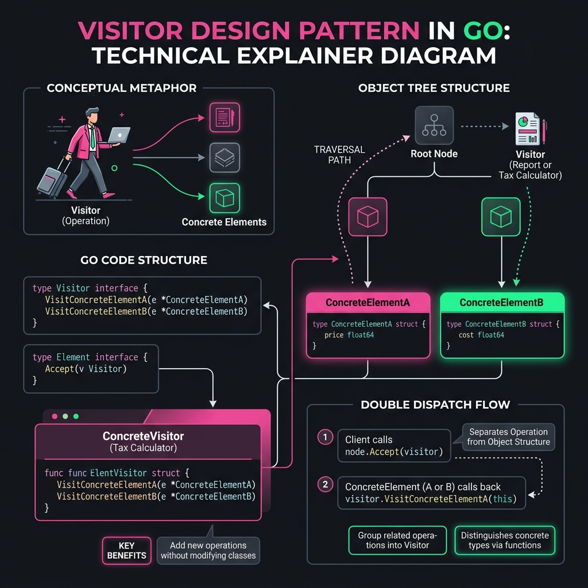
    <div class="concept-img-caption">Hình 10.1: Kiến trúc mô phỏng Visitor Pattern trong Go — Phân tách các thuật toán xử lý ra khỏi cấu trúc dữ liệu chính thông qua kỹ thuật Double Dispatch linh hoạt</div>
  </div>

  <div class="diagram">
    <div class="diagram-title">Visitor Pattern — AST Expression Evaluator</div>
    <svg width="100%" viewBox="0 0 820 240" xmlns="http://www.w3.org/2000/svg" font-family="JetBrains Mono">
      <!-- Visitor interface -->
      <rect x="30" y="20" width="200" height="120" rx="8" fill="rgba(168,85,247,0.08)" stroke="rgba(168,85,247,0.4)" stroke-width="1.5"/>
      <rect x="30" y="20" width="200" height="28" rx="8" fill="rgba(168,85,247,0.15)" stroke="none"/>
      <text x="130" y="33" text-anchor="middle" font-size="10" fill="#a855f7">«interface»</text>
      <text x="130" y="47" text-anchor="middle" font-size="12" font-weight="700" fill="#a855f7">Visitor</text>
      <line x1="30" y1="48" x2="230" y2="48" stroke="rgba(168,85,247,0.2)" stroke-width="1"/>
      <text x="40" y="66" font-size="11" fill="#60a5fa">+VisitNumber(n) float64</text>
      <text x="40" y="83" font-size="11" fill="#60a5fa">+VisitAdd(a) float64</text>
      <text x="40" y="100" font-size="11" fill="#60a5fa">+VisitMul(m) float64</text>
      <text x="40" y="117" font-size="11" fill="#60a5fa">+VisitVar(v) float64</text>

      <!-- Concrete visitors -->
      <rect x="30" y="165" width="130" height="60" rx="7" fill="rgba(0,255,136,0.07)" stroke="rgba(0,255,136,0.3)" stroke-width="1.3"/>
      <text x="95" y="182" text-anchor="middle" font-size="11" font-weight="700" fill="#00ff88">Evaluator</text>
      <line x1="30" y1="188" x2="160" y2="188" stroke="rgba(0,255,136,0.15)" stroke-width="1"/>
      <text x="40" y="205" font-size="11" fill="#64748b">evaluates expr</text>
      <text x="40" y="219" font-size="11" fill="#64748b">returns float64</text>

      <rect x="175" y="165" width="130" height="60" rx="7" fill="rgba(245,158,11,0.07)" stroke="rgba(245,158,11,0.3)" stroke-width="1.3"/>
      <text x="240" y="182" text-anchor="middle" font-size="11" font-weight="700" fill="#f59e0b">Printer</text>
      <line x1="175" y1="188" x2="305" y2="188" stroke="rgba(245,158,11,0.15)" stroke-width="1"/>
      <text x="185" y="205" font-size="11" fill="#64748b">prints expr tree</text>
      <text x="185" y="219" font-size="11" fill="#64748b">returns string</text>

      <!-- Element interface -->
      <rect x="380" y="20" width="190" height="80" rx="8" fill="rgba(0,212,255,0.08)" stroke="rgba(0,212,255,0.4)" stroke-width="1.5"/>
      <rect x="380" y="20" width="190" height="28" rx="8" fill="rgba(0,212,255,0.15)" stroke="none"/>
      <text x="475" y="33" text-anchor="middle" font-size="10" fill="#00d4ff">«interface»</text>
      <text x="475" y="47" text-anchor="middle" font-size="12" font-weight="700" fill="#00d4ff">Expression</text>
      <line x1="380" y1="48" x2="570" y2="48" stroke="rgba(0,212,255,0.2)" stroke-width="1"/>
      <text x="390" y="68" font-size="11" fill="#60a5fa">+Accept(v Visitor) float64</text>
      <text x="390" y="85" font-size="10" fill="#64748b">double dispatch: calls v.VisitX(self)</text>

      <!-- Concrete elements -->
      <rect x="350" y="140" width="105" height="60" rx="7" fill="rgba(59,130,246,0.07)" stroke="rgba(59,130,246,0.3)" stroke-width="1.3"/>
      <text x="402" y="158" text-anchor="middle" font-size="11" font-weight="700" fill="#3b82f6">Number</text>
      <text x="402" y="175" font-size="10" fill="#64748b" text-anchor="middle">value float64</text>
      <text x="402" y="190" font-size="10" fill="#64748b" text-anchor="middle">Accept(v) → VisitNumber</text>

      <rect x="475" y="140" width="105" height="60" rx="7" fill="rgba(59,130,246,0.07)" stroke="rgba(59,130,246,0.3)" stroke-width="1.3"/>
      <text x="527" y="158" text-anchor="middle" font-size="11" font-weight="700" fill="#3b82f6">AddExpr</text>
      <text x="527" y="175" font-size="10" fill="#64748b" text-anchor="middle">left,right Expr</text>
      <text x="527" y="190" font-size="10" fill="#64748b" text-anchor="middle">Accept(v) → VisitAdd</text>

      <rect x="600" y="140" width="105" height="60" rx="7" fill="rgba(59,130,246,0.07)" stroke="rgba(59,130,246,0.3)" stroke-width="1.3"/>
      <text x="652" y="158" text-anchor="middle" font-size="11" font-weight="700" fill="#3b82f6">MulExpr</text>
      <text x="652" y="175" font-size="10" fill="#64748b" text-anchor="middle">left,right Expr</text>
      <text x="652" y="190" font-size="10" fill="#64748b" text-anchor="middle">Accept(v) → VisitMul</text>

      <!-- Implements arrows -->
      <line x1="402" y1="140" x2="450" y2="100" stroke="#475569" stroke-width="1" stroke-dasharray="3,2"/>
      <line x1="527" y1="140" x2="490" y2="100" stroke="#475569" stroke-width="1" stroke-dasharray="3,2"/>
      <line x1="652" y1="140" x2="530" y2="100" stroke="#475569" stroke-width="1" stroke-dasharray="3,2"/>
      <!-- Visitor implements -->
      <line x1="95" y1="165" x2="95" y2="140" stroke="#475569" stroke-width="1" stroke-dasharray="3,2"/>
      <line x1="95" y1="138" x2="100" y2="100" stroke="#475569" stroke-width="1" stroke-dasharray="3,2"/>
    </svg>
  </div>

  <h3>📝 Example — AST Visitor với Multiple Operations (Expert)</h3>
  <div class="cb">
    <div class="ch"><span class="cl">GO</span><span class="cf">ast_visitor.go</span><span class="cbadge cb-exp">EXPERT</span></div>
    <pre><span class="cm">// Visitor Pattern: Math Expression AST với 3 visitors
// Evaluator, Printer, Optimizer — không đụng đến Expression structs</span>

<span class="cm">// Expression interface: Accept triggers double dispatch</span>
<span class="kw">type</span> <span class="tp">Expr</span> <span class="kw">interface</span> {
    <span class="fn">Accept</span>(v <span class="tp">ExprVisitor</span>) <span class="tp">float64</span>
}

<span class="kw">type</span> <span class="tp">ExprVisitor</span> <span class="kw">interface</span> {
    <span class="fn">VisitNumber</span>(n *<span class="tp">Number</span>) <span class="tp">float64</span>
    <span class="fn">VisitAdd</span>(a *<span class="tp">AddExpr</span>) <span class="tp">float64</span>
    <span class="fn">VisitMul</span>(m *<span class="tp">MulExpr</span>) <span class="tp">float64</span>
    <span class="fn">VisitVar</span>(v *<span class="tp">VarExpr</span>) <span class="tp">float64</span>
}

<span class="cm">// Concrete elements</span>
<span class="kw">type</span> <span class="tp">Number</span>  <span class="kw">struct</span>{ Val <span class="tp">float64</span> }
<span class="kw">type</span> <span class="tp">AddExpr</span> <span class="kw">struct</span>{ Left, Right <span class="tp">Expr</span> }
<span class="kw">type</span> <span class="tp">MulExpr</span> <span class="kw">struct</span>{ Left, Right <span class="tp">Expr</span> }
<span class="kw">type</span> <span class="tp">VarExpr</span> <span class="kw">struct</span>{ Name <span class="tp">string</span> }

<span class="kw">func</span> (n *<span class="tp">Number</span>)  <span class="fn">Accept</span>(v <span class="tp">ExprVisitor</span>) <span class="tp">float64</span> { <span class="kw">return</span> v.<span class="fn">VisitNumber</span>(n) }
<span class="kw">func</span> (a *<span class="tp">AddExpr</span>) <span class="fn">Accept</span>(v <span class="tp">ExprVisitor</span>) <span class="tp">float64</span> { <span class="kw">return</span> v.<span class="fn">VisitAdd</span>(a) }
<span class="kw">func</span> (m *<span class="tp">MulExpr</span>) <span class="fn">Accept</span>(v <span class="tp">ExprVisitor</span>) <span class="tp">float64</span> { <span class="kw">return</span> v.<span class="fn">VisitMul</span>(m) }
<span class="kw">func</span> (vr *<span class="tp">VarExpr</span>) <span class="fn">Accept</span>(v <span class="tp">ExprVisitor</span>) <span class="tp">float64</span> { <span class="kw">return</span> v.<span class="fn">VisitVar</span>(vr) }

<span class="cm">// Visitor 1: Evaluator</span>
<span class="kw">type</span> <span class="tp">Evaluator</span> <span class="kw">struct</span>{ Vars <span class="kw">map</span>[<span class="tp">string</span>]<span class="tp">float64</span> }

<span class="kw">func</span> (e *<span class="tp">Evaluator</span>) <span class="fn">VisitNumber</span>(n *<span class="tp">Number</span>) <span class="tp">float64</span> { <span class="kw">return</span> n.Val }
<span class="kw">func</span> (e *<span class="tp">Evaluator</span>) <span class="fn">VisitAdd</span>(a *<span class="tp">AddExpr</span>) <span class="tp">float64</span> {
    <span class="kw">return</span> a.Left.<span class="fn">Accept</span>(e) + a.Right.<span class="fn">Accept</span>(e)
}
<span class="kw">func</span> (e *<span class="tp">Evaluator</span>) <span class="fn">VisitMul</span>(m *<span class="tp">MulExpr</span>) <span class="tp">float64</span> {
    <span class="kw">return</span> m.Left.<span class="fn">Accept</span>(e) * m.Right.<span class="fn">Accept</span>(e)
}
<span class="kw">func</span> (e *<span class="tp">Evaluator</span>) <span class="fn">VisitVar</span>(v *<span class="tp">VarExpr</span>) <span class="tp">float64</span> { <span class="kw">return</span> e.Vars[v.Name] }

<span class="cm">// Visitor 2: Printer (returns string via side effect)</span>
<span class="kw">type</span> <span class="tp">Printer</span> <span class="kw">struct</span>{ buf <span class="pkg">strings</span>.<span class="tp">Builder</span> }

<span class="kw">func</span> (p *<span class="tp">Printer</span>) <span class="fn">VisitNumber</span>(n *<span class="tp">Number</span>) <span class="tp">float64</span> { <span class="pkg">fmt</span>.<span class="fn">Fprintf</span>(&p.buf, <span class="str">"%.g"</span>, n.Val); <span class="kw">return</span> <span class="num">0</span> }
<span class="kw">func</span> (p *<span class="tp">Printer</span>) <span class="fn">VisitAdd</span>(a *<span class="tp">AddExpr</span>) <span class="tp">float64</span> {
    p.buf.<span class="fn">WriteString</span>(<span class="str">"("</span>)
    a.Left.<span class="fn">Accept</span>(p); p.buf.<span class="fn">WriteString</span>(<span class="str">" + "</span>); a.Right.<span class="fn">Accept</span>(p)
    p.buf.<span class="fn">WriteString</span>(<span class="str">")"</span>); <span class="kw">return</span> <span class="num">0</span>
}
<span class="kw">func</span> (p *<span class="tp">Printer</span>) <span class="fn">VisitMul</span>(m *<span class="tp">MulExpr</span>) <span class="tp">float64</span> {
    p.buf.<span class="fn">WriteString</span>(<span class="str">"("</span>)
    m.Left.<span class="fn">Accept</span>(p); p.buf.<span class="fn">WriteString</span>(<span class="str">" * "</span>); m.Right.<span class="fn">Accept</span>(p)
    p.buf.<span class="fn">WriteString</span>(<span class="str">")"</span>); <span class="kw">return</span> <span class="num">0</span>
}
<span class="kw">func</span> (p *<span class="tp">Printer</span>) <span class="fn">VisitVar</span>(v *<span class="tp">VarExpr</span>) <span class="tp">float64</span> { p.buf.<span class="fn">WriteString</span>(v.Name); <span class="kw">return</span> <span class="num">0</span> }
<span class="kw">func</span> (p *<span class="tp">Printer</span>) <span class="fn">String</span>() <span class="tp">string</span>        { <span class="kw">return</span> p.buf.<span class="fn">String</span>() }

<span class="cm">// Example: (x + 2) * (x + 3) với x=5
// expr := &MulExpr{
//     Left:  &AddExpr{Left: &VarExpr{"x"}, Right: &Number{2}},
//     Right: &AddExpr{Left: &VarExpr{"x"}, Right: &Number{3}},
// }
// eval := &Evaluator{Vars: map[string]float64{"x": 5}}
// fmt.Println(expr.Accept(eval)) // → 56 ((5+2)*(5+3))
// printer := &Printer{}
// expr.Accept(printer)
// fmt.Println(printer.String()) // → "((x + 2) * (x + 3))"</span></pre>
  </div>

  <div class="note n-warn">
    <div class="ni2">⚠️</div>
    <p><strong>Khi nào KHÔNG dùng Visitor:</strong> Nếu Element hierarchy thường xuyên thay đổi (thêm element type mới) → Visitor phải update tất cả concrete visitors. Visitor phù hợp khi <em>operations thay đổi nhiều, element types ổn định</em>.</p>
  </div>
</section>

<!-- ═══════════════════════════ REFERENCES ═══════════════════════════ -->
<section class="page-section" id="s-refs">
  <div class="sec-header">
    <div class="sec-num">★</div>
    <div><div class="sec-title">References &amp; Tài liệu tham khảo</div>
    <div class="sec-sub">Nguồn học tập uy tín nhất về Design Patterns trong Go</div></div>
    <span class="badge b-basic">REFS</span>
  </div>

  <h3>📚 GitHub Repositories — Top Rated</h3>

  <a class="ref" href="https://github.com/tmrts/go-patterns" target="_blank">
    <div class="ref-icon" style="background:rgba(0,212,255,0.1)">🐱</div>
    <div>
      <div class="ref-title">go-patterns — tmrts</div>
      <div class="ref-desc">Curated list of Go design &amp; application patterns, idioms, and best practices. Bao gồm đầy đủ Behavioral, Creational, Structural với code examples sạch.</div>
      <div class="ref-url">github.com/tmrts/go-patterns</div>
    </div>
    <div class="ref-stars">⭐ 25k+</div>
  </a>

  <a class="ref" href="https://github.com/AlexanderGrom/go-patterns" target="_blank">
    <div class="ref-icon" style="background:rgba(168,85,247,0.1)">📦</div>
    <div>
      <div class="ref-title">go-patterns — AlexanderGrom</div>
      <div class="ref-desc">Triển khai đầy đủ 23 GoF patterns bằng Go. Mỗi pattern có file riêng, example chạy được, test coverage tốt.</div>
      <div class="ref-url">github.com/AlexanderGrom/go-patterns</div>
    </div>
    <div class="ref-stars">⭐ 2k+</div>
  </a>

  <a class="ref" href="https://github.com/nicholasgasior/golang-patterns" target="_blank">
    <div class="ref-icon" style="background:rgba(0,255,136,0.1)">🏗️</div>
    <div>
      <div class="ref-title">Functional Options + Patterns</div>
      <div class="ref-desc">Go-idiomatic patterns tập trung vào functional options, builder, và behavioral patterns dùng channel &amp; goroutine.</div>
      <div class="ref-url">github.com/nicholasgasior/golang-patterns</div>
    </div>
  </a>

  <a class="ref" href="https://github.com/gopl/solutions" target="_blank">
    <div class="ref-icon" style="background:rgba(245,158,11,0.1)">📖</div>
    <div>
      <div class="ref-title">The Go Programming Language (Donovan &amp; Kernighan)</div>
      <div class="ref-desc">Sách chuẩn mực của Go. Interface-based design, embedding, method sets — nền tảng để hiểu tại sao Go implement patterns khác Java.</div>
      <div class="ref-url">gopl.io | github.com/gopl</div>
    </div>
    <div class="ref-stars">⭐ Kinh điển</div>
  </a>

  <h3>🌐 Online Resources</h3>

  <a class="ref" href="https://refactoring.guru/design-patterns/go" target="_blank">
    <div class="ref-icon" style="background:rgba(236,72,153,0.1)">🔮</div>
    <div>
      <div class="ref-title">Refactoring.Guru — Go Design Patterns</div>
      <div class="ref-desc">Giải thích trực quan tất cả 23 GoF patterns với Go code examples, UML diagrams, và real-world use cases. Đây là tài liệu học patterns tốt nhất hiện tại.</div>
      <div class="ref-url">refactoring.guru/design-patterns/go</div>
    </div>
  </a>

  <a class="ref" href="https://www.gopherguides.com/articles/golang-behavioral-patterns" target="_blank">
    <div class="ref-icon" style="background:rgba(45,212,191,0.1)">🐭</div>
    <div>
      <div class="ref-title">GopherGuides — Behavioral Patterns</div>
      <div class="ref-desc">Series bài viết chuyên sâu về behavioral patterns từ góc nhìn Go practitioner. Tập trung vào khi nào nên và không nên dùng.</div>
      <div class="ref-url">gopherguides.com/articles</div>
    </div>
  </a>

  <h3>📊 Pattern Selection Guide</h3>
  <table class="tbl">
    <thead><tr><th>Pattern</th><th>OCP</th><th>SRP</th><th>DIP</th><th>Go Idiom</th><th>Test khó</th></tr></thead>
    <tbody>
      <tr><td><span class="tag t-s" data-target="strategy" onclick="show('strategy')">Strategy</span></td><td>✅</td><td>✅</td><td>✅</td><td>Interface injection</td><td>Dễ — mock interface</td></tr>
      <tr><td><span class="tag t-o" data-target="observer" onclick="show('observer')">Observer</span></td><td>✅</td><td>✅</td><td>⚠️</td><td>Chan / func slice</td><td>Cần sync.WaitGroup</td></tr>
      <tr><td><span class="tag t-c" data-target="command" onclick="show('command')">Command</span></td><td>✅</td><td>✅</td><td>✅</td><td>Func type</td><td>Dễ — execute &amp; verify</td></tr>
      <tr><td><span class="tag t-t" data-target="template" onclick="show('template')">Template</span></td><td>✅</td><td>⚠️</td><td>✅</td><td>Hooks interface</td><td>Dễ — inject mock hooks</td></tr>
      <tr><td><span class="tag t-st" data-target="state" onclick="show('state')">State</span></td><td>✅</td><td>✅</td><td>✅</td><td>State interface</td><td>Test từng transition</td></tr>
      <tr><td><span class="tag t-it" data-target="iterator" onclick="show('iterator')">Iterator</span></td><td>✅</td><td>✅</td><td>⚠️</td><td>Channel / closure</td><td>Cần drain channel</td></tr>
      <tr><td><span class="tag t-ch" data-target="chain" onclick="show('chain')">Chain</span></td><td>✅</td><td>✅</td><td>✅</td><td>func(Handler) Handler</td><td>Dễ — test each middleware</td></tr>
      <tr><td><span class="tag t-me" data-target="mediator" onclick="show('mediator')">Mediator</span></td><td>✅</td><td>⚠️</td><td>✅</td><td>Central broker</td><td>Phức tạp — nhiều actors</td></tr>
      <tr><td><span class="tag t-c" data-target="memento" onclick="show('memento')">Memento</span></td><td>✅</td><td>✅</td><td>⚠️</td><td>Deep copy</td><td>Verify state restoration</td></tr>
      <tr><td><span class="tag t-s" data-target="visitor" onclick="show('visitor')">Visitor</span></td><td>✅</td><td>✅</td><td>⚠️</td><td>Accept/Visit interface</td><td>Test từng visitor riêng</td></tr>
    </tbody>
  </table>

  <div class="note n-info">
    <div class="ni2">💡</div>
    <p><strong>Nguyên tắc áp dụng Design Pattern trong Go:</strong> Pattern không phải mục đích — <em>readability và maintainability mới là mục đích</em>. Đừng apply pattern chỉ vì nó nổi tiếng. Hỏi: "Code này có dễ test hơn không? Dễ mở rộng hơn không? Dễ hiểu hơn không?" Nếu không → đơn giản hóa.</p>
  </div>
</section>

</div></main>

<script>
function show(id) {
  document.querySelectorAll('.page-section').forEach(s => s.classList.remove('active'));
  const t = document.getElementById('s-' + id);
  if (t) t.classList.add('active');
  
  // Sync the navigation highlights
  document.querySelectorAll('.nav-item, .tnav').forEach(b => {
    b.classList.remove('active');
    const target = b.getAttribute('data-target') || b.getAttribute('onclick')?.match(/'([^']+)'/)?.[1];
    if (target === id) b.classList.add('active');
  });

  // Smooth scroll to top of page/main container
  window.scrollTo({ top: 0, behavior: 'smooth' });
}

// Bind dynamic click events for sidebar and topnav anchors (guarantees Obsidian navigation compatibility)
document.querySelectorAll('.nav-item, .tnav').forEach(el => {
  const target = el.getAttribute('data-target') || el.getAttribute('onclick')?.match(/'([^']+)'/)?.[1];
  if (target) {
    el.removeAttribute('onclick'); // prevent double execution in script-supported environments
    el.addEventListener('click', (e) => {
      e.preventDefault();
      // Smoothly update hash clean and trigger show
      window.location.hash = 's-' + target;
      show(target);
    });
  }
});

// Attach robust click listeners to SVG interactive map nodes
document.querySelectorAll('.svg-node').forEach(node => {
  const target = node.getAttribute('data-target') || node.getAttribute('onclick')?.match(/'([^']+)'/)?.[1];
  if (target) {
    node.removeAttribute('onclick');
    node.addEventListener('click', (e) => {
      e.preventDefault();
      window.location.hash = 's-' + target;
      show(target);
    });
  }
});

// Attach robust click listeners to summary and selection guide table tags
document.querySelectorAll('.tag').forEach(tag => {
  const target = tag.getAttribute('data-target') || tag.getAttribute('onclick')?.match(/'([^']+)'/)?.[1];
  if (target) {
    tag.removeAttribute('onclick');
    tag.addEventListener('click', (e) => {
      e.preventDefault();
      window.location.hash = 's-' + target;
      show(target);
    });
  }
});

// Sync layout dynamically if hash changes in the URL (e.g. from links or Obsidian page jumps)
window.addEventListener('hashchange', () => {
  const hash = window.location.hash;
  if (hash.startsWith('#s-')) {
    show(hash.replace('#s-', ''));
  }
});

// On initial DOM load, automatically activate the correct section if a hash is present in the URL
window.addEventListener('DOMContentLoaded', () => {
  const hash = window.location.hash;
  if (hash.startsWith('#s-')) {
    show(hash.replace('#s-', ''));
  }
});

document.querySelectorAll('.cb').forEach(block => {
  const h = block.querySelector('.ch');
  if (h && !h.querySelector('.copy-btn')) {
    const btn = document.createElement('button');
    btn.className = 'copy-btn'; btn.textContent = 'Copy';
    btn.addEventListener('click', () => {
      navigator.clipboard.writeText(block.querySelector('pre').innerText).then(() => {
        btn.textContent = '✓ Copied'; btn.style.color = '#00ff88'; btn.style.borderColor = '#00ff88';
        setTimeout(() => { btn.textContent = 'Copy'; btn.style.color = ''; btn.style.borderColor = ''; }, 1800);
      });
    });
    h.appendChild(btn);
  }
});
</script>
</body>
</html>
